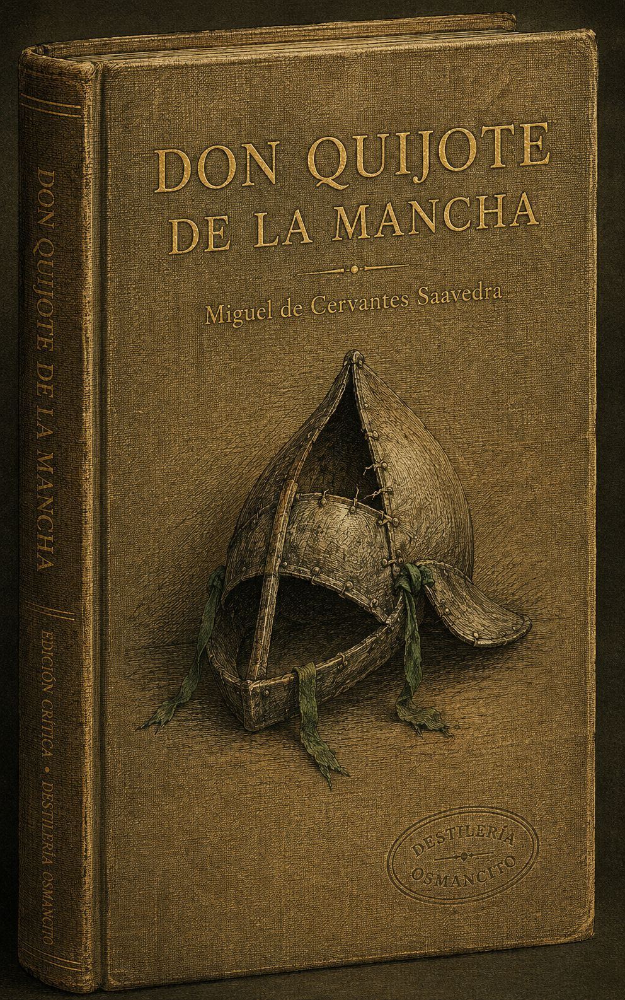
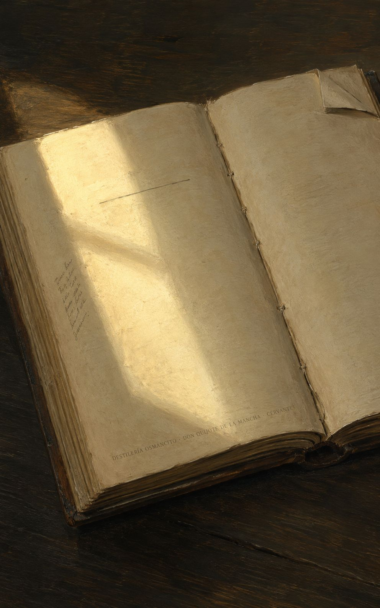
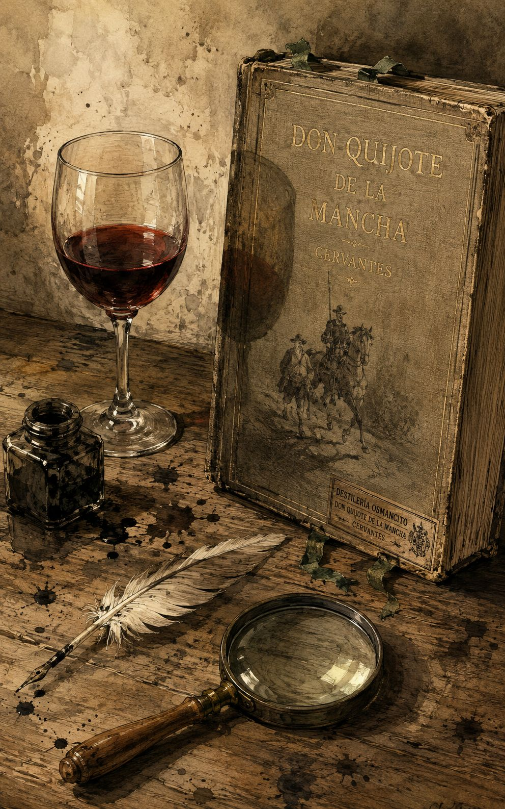
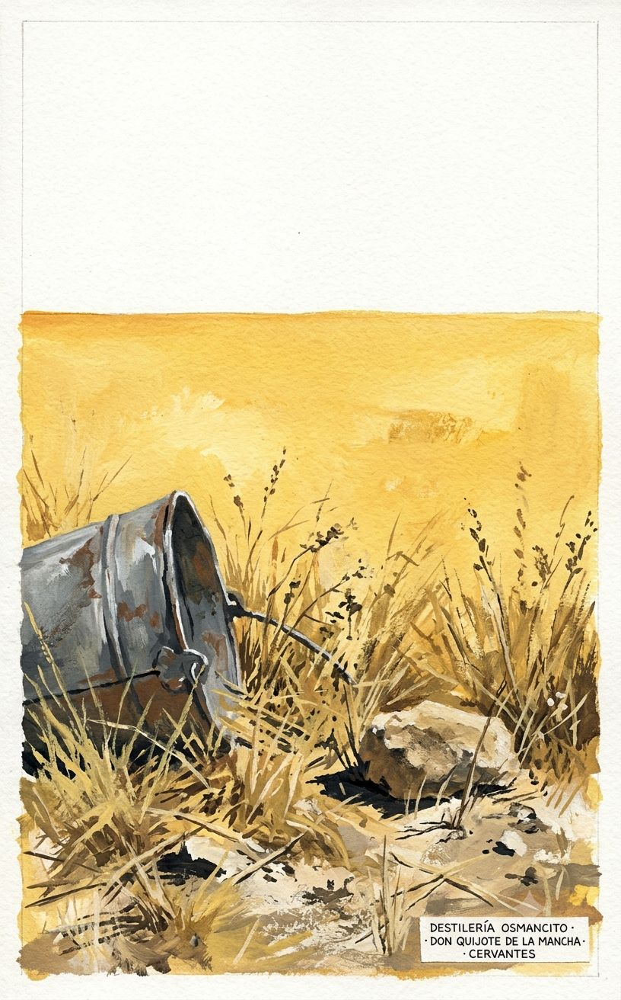
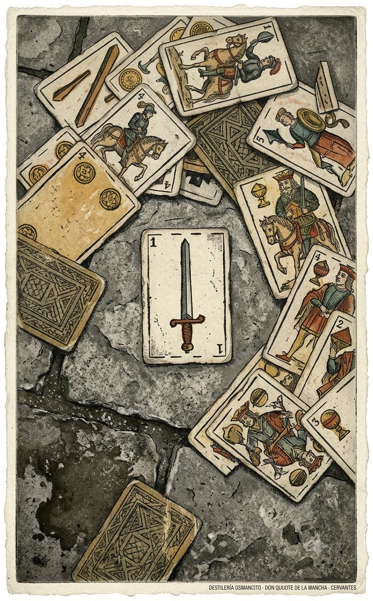
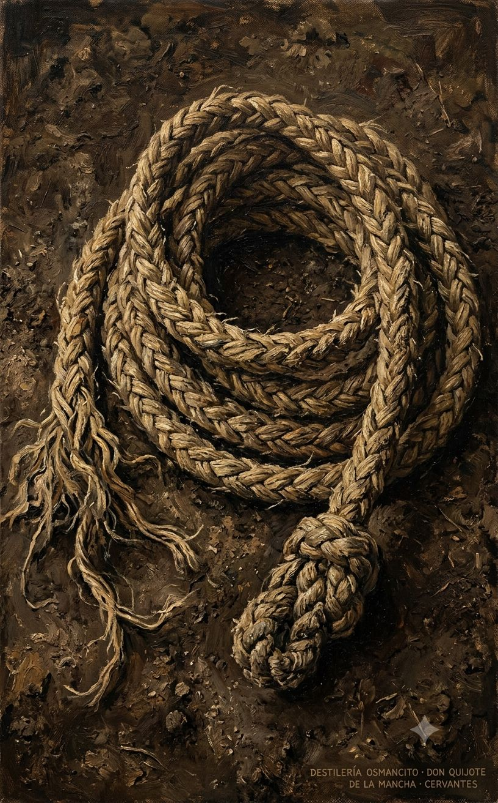
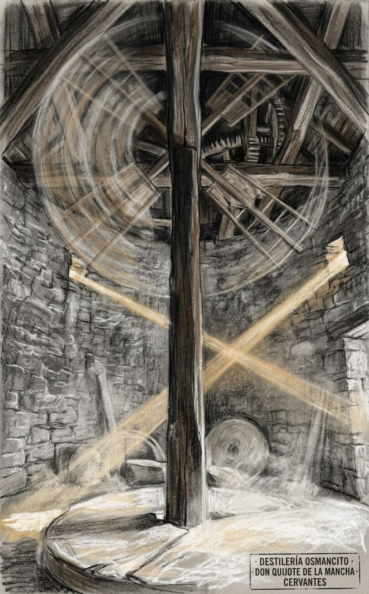

Un hombre decide volverse loco a propósito —o así lo declara el libro— y durante 126 capítulos nadie puede decidir si eso es tragedia o comedia, y el libro tampoco. Lo que nadie esperaba: que el escudero, el hombre gordo que solo quería una ínsula, resultara ser el personaje más sabio de la historia de la literatura española. Cervantes escribió un libro para matar los libros de caballería y produjo el único libro que no ha muerto.
Un mamotreto de casi cuatrocientas mil palabras que llegó al mundo en dos entregas separadas por diez años, impreso primero en Valladolid con licencia real, encuadernado en papel que no auguraba eternidad, y que desde entonces no ha dejado de circular.
Este corpus no es un libro sobre la locura: es un libro que practica la locura como método. Llega con el peso específico de los objetos que han sido tocados por demasiadas manos —desgastado en los bordes, familiar hasta la invisibilidad— y sin embargo abre en una resistencia extraña: no se deja resumir porque no es una historia, es una máquina. Nombrar lo que es el Quijote es distinto de contar lo que dice el Quijote. Lo que dice se puede contar en tres oraciones. Lo que es ha ocupado cuatro siglos de desacuerdo.
Título — El ingenioso hidalgo don Quijote de la Mancha (Parte I, 1605) / Segunda parte del ingenioso caballero don Quijote de la Mancha (Parte II, 1615)
Autor — Miguel de Cervantes Saavedra
Año — 1605 (Parte I) · 1615 (Parte II)
Género — Novela. Específicamente: parodia de los libros de caballería que excede y cancela su propio género de origen.
Extensión estimada — 387,000 palabras · 1,548 páginas aproximadas (a 250 palabras por página) · 126 capítulos: 52 en la Parte I, 74 en la Parte II, más preliminares legales, dedicatorias y prólogos en ambas partes.
Idioma original — Español (castellano del siglo XVII, con arcaísmos deliberados en el habla de don Quijote)
Palabra más frecuente con contenido — Quijote (2,245 ocurrencias). Confirma lo que el corpus declara ser: una historia centrada en su protagonista. Pero Sancho aparece 2,174 veces —a 71 ocurrencias de distancia—, lo que el corpus no declara explícitamente pero practica de forma sostenida: esto es tan novela de Sancho como de don Quijote. La tercera palabra de contenido más frecuente es caballero (677), que es el concepto que el corpus se propone destruir y que no puede dejar de nombrar.
Alonso Quijano, hidalgo manchego de unos cincuenta años, enloquece de leer libros de caballería y decide convertirse en caballero andante bajo el nombre de don Quijote de la Mancha. Realiza tres salidas al mundo: en la primera sale solo, es apaleado y regresa; en la segunda lleva como escudero a Sancho Panza, labrador vecino al que promete el gobierno de una ínsula, y recorre La Mancha y Cataluña encontrando aventuras que solo él percibe como tales; en la tercera —que es toda la Parte II— enfrenta un mundo que ya lo conoce porque ha leído la Parte I, culminando en la derrota definitiva a manos del Caballero de la Blanca Luna, la vuelta al pueblo, la recuperación del juicio y la muerte como Alonso Quijano el Bueno. La Parte II incluye además el gobierno efectivo de Sancho Panza en la ínsula Barataria, donde el escudero demuestra una sabiduría práctica que su señor nunca alcanzó.
Don Quijote / Alonso Quijano — El protagonista: hidalgo que se vuelve caballero andante por lectura excesiva, muere recuperado del delirio.
Sancho Panza — El escudero: labrador analfabeto, pragmático, cuerdo, lleno de refranes, que termina siendo el personaje más complejo de la novela.
Dulcinea del Toboso / Aldonza Lorenzo — La dama imaginada: nunca aparece como personaje activo; existe como proyección de don Quijote y como problema metafísico.
Cide Hamete Benengeli — El narrador fingido: historiador árabe cuyo manuscrito encontrado sirve de fuente declarada del relato, dispositivo metaficcional central.
Rocinante — El caballo: también figura, también personaje menor, también símbolo del estado real de las cosas bajo la capa de las ilusiones.
El Bachiller Sansón Carrasco — Personaje de la Parte II: joven letrado que finge ser caballero andante para engañar a don Quijote y devolverlo al pueblo.
Los Duques — Pareja aristocrática de la Parte II que convierte las aventuras de don Quijote en entretenimiento privado, introduciendo la crueldad como elemento narrativo.
Parte I (1605) — 52 capítulos
La novela abre con la presentación de Alonso Quijano: un hidalgo sin nombre fijo, sin hacienda suficiente, que ha vendido tierras para comprar libros de caballería hasta perder el juicio. La decisión de volverse caballero andante es presentada como lógica interna del delirio: si el mundo necesita caballeros, él será uno. Fabrica una celada de cartón, bautiza su caballo como Rocinante, inventa una dama llamada Dulcinea del Toboso —en realidad Aldonza Lorenzo, labradora del Toboso a quien nunca ha hablado— y sale de madrugada.
Primera salida: Solo, don Quijote es armado caballero por un ventero que sigue el juego para librarse de él. Intenta defender a un muchacho que recibe una paliza de su amo; su intervención empeora la situación del niño. Es molido a golpes por unos mercaderes y regresa al pueblo arrastrado por un vecino. Fin de la primera salida: total y sin Sancho.
Segunda salida: Don Quijote convence a Sancho Panza, labrador casado con Teresa Panza y padre de familia, de que lo acompañe como escudero a cambio de la promesa de gobernar una ínsula. Sancho es analfabeto, gordo, sensato y devoto de los refranes. La pareja constituye la unidad dramática central de todo el libro.
Las aventuras de la segunda salida incluyen:
Parte II (1615) — 74 capítulos
La Parte II existe en un mundo diferente: don Quijote y Sancho saben que existe la Parte I. Han sido leídos. Otros personajes también los han leído. Existe además una Parte II apócrifa escrita por un tal Avellaneda, que Cervantes incorpora como elemento narrativo y combate directamente: don Quijote niega ser el de ese libro falso.
Tercera salida: Don Quijote parte hacia el Toboso a ver a Dulcinea. Sancho, que nunca la ha visto, la inventa sobre la marcha: señala a tres labradoras y dice que una es Dulcinea. Don Quijote, que tampoco la reconoce, concluye que un encantador la ha transformado en labradora. El encantamiento de Dulcinea —una mentira de Sancho— se convierte en el motor argumental de toda la Parte II.
Aventuras principales de la Parte II:
El cierre del libro incluye un parlamento de la pluma de Cide Hamete: la pluma habla, advierte a futuros autores que no toquen los huesos de don Quijote, y declara que el libro nació para destruir los libros de caballería, y que lo ha logrado.
Lo que el corpus produjo antes de ser pensado: un peso extraño, casi gravitacional, que no es el peso de la tragedia ni el de la comedia sino el de algo que no cabe en ninguna de las dos. El libro es de una alegría feroz y de una melancolía igualmente feroz, y las dos no se turnan sino que ocurren al mismo tiempo, en la misma página, a veces en la misma frase. Eso es lo que se siente antes de entenderlo: que algo aquí duele y hace reír con el mismo gesto, y que ese doble movimiento no tiene nombre todavía, o tiene el nombre de este libro.
La cordura como pérdida. Don Quijote muere cuerdo. Eso debería ser un final feliz. No lo es. El libro trabaja durante 126 capítulos la pregunta de si el delirio que permite vivir con dignidad es preferible a la lucidez que devuelve al mundo tal como es. La respuesta que da el último capítulo es deliberadamente incómoda: recuperar el juicio se parece demasiado a morirse.
El amo que no sabe y el escudero que sabe sin saberlo. Don Quijote es letrado, ha leído todo, cita a los clásicos, habla en arcaísmos deliberados. Sancho es analfabeto, mezcla refranes, no sabe firmar. Y sin embargo Sancho gobierna con sabiduría natural lo que don Quijote nunca podría gobernar. El libro sostiene esta inversión sin resolverla: no celebra la ignorancia ni condena la erudición, simplemente muestra que el conocimiento libresco y el conocimiento del mundo son dos cosas que rara vez habitan el mismo hombre.
La ficción como realidad operativa. Don Quijote no confunde la ficción con la realidad por error: la prefiere. Y el libro, mediante el dispositivo de Cide Hamete Benengeli, hace exactamente lo mismo —prefiere la ficción, la exhibe como tal, y sin embargo opera sobre el lector con la misma fuerza que operaría la realidad. El Quijote es un libro que habla de cómo los libros dañan a las personas mientras hace exactamente lo que critica: enganchar al lector en una ilusión que le importa más que la verdad.
Protocolo k53 · Radio: 8 % · Cuota: ~15.000 palabras · Palabras extraídas: 15390
Y llegó a tanto su curiosidad y desatino en esto, que vendió muchas hanegas de tierra de sembradura para comprar libros de caballerías en que leer, y así, llevó a su casa todos cuantos pudo haber dellos; y de todos, ningunos le parecían tan bien como los que compuso el famoso Feliciano de Silva, porque la claridad de su prosa y aquellas entricadas razones suyas le parecían de perlas, y más cuando llegaba a leer aquellos requiebros y cartas de desafíos, donde en muchas partes hallaba escrito: La razón de la sinrazón que a mi razón se hace, de tal manera mi razón enflaquece, que con razón me quejo de la vuestra fermosura.
En resolución, él se enfrascó tanto en su letura, que se le pasaban las noches leyendo de claro en claro, y los días de turbio en turbio; y así, del poco dormir y del mucho leer, se le secó el celebro, de manera que vino a perder el juicio.
Casi todo aquel día caminó sin acontecerle cosa que de contar fuese, de lo cual se desesperaba, porque quisiera topar luego luego con quien hacer experiencia del valor de su fuerte brazo.
Diose priesa a caminar, y llegó a ella a tiempo que anochecía.
En esto, sucedió acaso que un porquero que andaba recogiendo de unos rastrojos una manada de puercos —que, sin perdón, así se llaman— tocó un cuerno, a cuya señal ellos se recogen, y al instante se le representó a don Quijote lo que deseaba, que era que algún enano hacía señal de su venida; y así, con estraño contento, llegó a la venta y a las damas, las cuales, como vieron venir un hombre de aquella suerte, armado y con lanza y adarga, llenas de miedo, se iban a entrar en la venta; pero don Quijote, coligiendo por su huida su miedo, alzándose la visera de papelón y descubriendo su seco y polvoroso rostro, con gentil talante y voz reposada, les dijo: — No fuyan las vuestras mercedes ni teman desaguisado alguno; ca a la orden de caballería que profeso non toca ni atañe facerle a ninguno, cuanto más a tan altas doncellas como vuestras presencias demuestran.
Contó el ventero a todos cuantos estaban en la venta la locura de su huésped, la vela de las armas y la armazón de caballería que esperaba.
Admiráronse de tan estraño género de locura y fuéronselo a mirar desde lejos, y vieron que, con sosegado ademán, unas veces se paseaba; otras, arrimado a su lanza, ponía los ojos en las armas, sin quitarlos por un buen espacio dellas.
Y, diciendo estas y otras semejantes razones, soltando la adarga, alzó la lanza a dos manos y dio con ella tan gran golpe al arriero en la cabeza, que le derribó en el suelo, tan maltrecho que, si segundara con otro, no tuviera necesidad de maestro que le curara.
Viendo esto don Quijote, embrazó su adarga, y, puesta mano a su espada, dijo: — ¡Oh señora de la fermosura, esfuerzo y vigor del debilitado corazón mío!
Ella se lo prometió, y la otra le calzó la espuela, con la cual le pasó casi el mismo coloquio que con la de la espada: preguntóle su nombre, y dijo que se llamaba la Molinera, y que era hija de un honrado molinero de Antequera; a la cual también rogó don Quijote que se pusiese don y se llamase doña Molinera, ofreciéndole nuevos servicios y mercedes.
De lo que le sucedió a nuestro caballero cuando salió de la venta La del alba sería cuando don Quijote salió de la venta, tan contento, tan gallardo, tan alborozado por verse ya armado caballero, que el gozo le reventaba por las cinchas del caballo.
Y, viendo don Quijote lo que pasaba, con voz airada dijo: — Descortés caballero, mal parece tomaros con quien defender no se puede; subid sobre vuestro caballo y tomad vuestra lanza —que también tenía una lanza arrimada a la encima adonde estaba arrendada la yegua—, que yo os haré conocer ser de cobardes lo que estáis haciendo.
— Mire vuestra merced, señor, lo que dice —dijo el muchacho—, que este mi amo no es caballero ni ha recebido orden de caballería alguna; que es Juan Haldudo el rico, el vecino del Quintanar.
Siguióle el labrador con los ojos, y, cuando vio que había traspuesto del bosque y que ya no parecía, volvióse a su criado Andrés y díjole: — Venid acá, hijo mío, que os quiero pagar lo que os debo, como aquel deshacedor de agravios me dejó mandado.
Cayó Rocinante, y fue rodando su amo una buena pieza por el campo; y, queriéndose levantar, jamás pudo: tal embarazo le causaban la lanza, adarga, espuelas y celada, con el peso de las antiguas armas.
A esto respondió el labrador: — Mire vuestra merced, señor, pecador de mí, que yo no soy don Rodrigo de Narváez, ni el marqués de Mantua, sino Pedro Alonso, su vecino; ni vuestra merced es Valdovinos, ni Abindarráez, sino el honrado hidalgo del señor Quijana.
— Yo sé quién soy —respondió don Quijote—; y sé que puedo ser no sólo los que he dicho, sino todos los Doce Pares de Francia, y aun todos los Nueve de la Fama, pues a todas las hazañas que ellos todos juntos y cada uno por sí hicieron, se aventajarán las mías.
Encomendados sean a Satanás y a Barrabás tales libros, que así han echado a perder el más delicado entendimiento que había en toda la Mancha.
— ¡Mirá, en hora maza —dijo a este punto el ama—, si me decía a mí bien mi corazón del pie que cojeaba mi señor!
Entraron dentro todos, y la ama con ellos, y hallaron más de cien cuerpos de libros grandes, muy bien encuadernados, y otros pequeños; y, así como el ama los vio, volvióse a salir del aposento con gran priesa, y tornó luego con una escudilla de agua bendita y un hisopo, y dijo: — Tome vuestra merced, señor licenciado: rocíe este aposento, no esté aquí algún encantador de los muchos que tienen estos libros, y nos encanten, en pena de las que les queremos dar echándolos del mundo.
— Pues vayan todos al corral —dijo el cura—; que, a trueco de quemar a la reina Pintiquiniestra, y al pastor Darinel, y a sus églogas, y a las endiabladas y revueltas razones de su autor, quemaré con ellos al padre que me engendró, si anduviera en figura de caballero andante.
Por tomar muchos juntos, se le cayó uno a los pies del barbero, que le tomó gana de ver de quién era, y vio que decía: Historia del famoso caballero Tirante el Blanco.
Y abriendo uno, vio que era La Diana, de Jorge de Montemayor, y dijo, creyendo que todos los demás eran del mesmo género: — Éstos no merecen ser quemados, como los demás, porque no hacen ni harán el daño que los de caballerías han hecho; que son libros de entendimiento, sin perjuicio de tercero.
Hiciéronlo ansí: diéronle de comer, y quedóse otra vez dormido, y ellos, admirados de su locura.
Uno de los remedios que el cura y el barbero dieron, por entonces, para el mal de su amigo, fue que le murasen y tapiasen el aposento de los libros, porque cuando se levantase no los hallase —quizá quitando la causa, cesaría el efeto—, y que dijesen que un encantador se los había llevado, y el aposento y todo; y así fue hecho con mucha presteza.
Llegaba adonde solía tener la puerta, y tentábala con las manos, y volvía y revolvía los ojos por todo, sin decir palabra; pero, al cabo de una buena pieza, preguntó a su ama que hacia qué parte estaba el aposento de sus libros.
Dijo en esto Sancho Panza a su amo: — Mire vuestra merced, señor caballero andante, que no se le olvide lo que de la ínsula me tiene prometido; que yo la sabré gobernar, por grande que sea.
Levantóse en esto un poco de viento y las grandes aspas comenzaron a moverse, lo cual visto por don Quijote, dijo: — Pues, aunque mováis más brazos que los del gigante Briareo, me lo habéis de pagar.
Y, en diciendo esto, y encomendándose de todo corazón a su señora Dulcinea, pidiéndole que en tal trance le socorriese, bien cubierto de su rodela, con la lanza en el ristre, arremetió a todo el galope de Rocinante y embistió con el primero molino que estaba delante; y, dándole una lanzada en el aspa, la volvió el viento con tanta furia que hizo la lanza pedazos, llevándose tras sí al caballo y al caballero, que fue rodando muy maltrecho por el campo.
En resolución, aquella noche la pasaron entre unos árboles, y del uno dellos desgajó don Quijote un ramo seco que casi le podía servir de lanza, y puso en él el hierro que quitó de la que se le había quebrado.
No venían los frailes con ella, aunque iban el mesmo camino; mas, apenas los divisó don Quijote, cuando dijo a su escudero: — O yo me engaño, o ésta ha de ser la más famosa aventura que se haya visto; porque aquellos bultos negros que allí parecen deben de ser, y son sin duda, algunos encantadores que llevan hurtada alguna princesa en aquel coche, y es menester deshacer este tuerto a todo mi poderío.
Y, arrojando la lanza en el suelo, sacó su espada y embrazó su rodela, y arremetió al vizcaíno con determinación de quitarle la vida.
En fin, la suerte me deparó uno, que, diciéndole mi deseo y poniéndole el libro en las manos, le abrió por medio, y, leyendo un poco en él, se comenzó a reír.
Con esta imaginación, le di priesa que leyese el principio, y, haciéndolo ansí, volviendo de improviso el arábigo en castellano, dijo que decía: Historia de don Quijote de la Mancha, escrita por Cide Hamete Benengeli, historiador arábigo.
Mucha discreción fue menester para disimular el contento que recebí cuando llegó a mis oídos el título del libro; y, salteándosele al sedero, compré al muchacho todos los papeles y cartapacios por medio real; que, si él tuviera discreción y supiera lo que yo los deseaba, bien se pudiera prometer y llevar más de seis reales de la compra.
Estábaselo con mucho sosiego mirando don Quijote, y, como lo vio caer, saltó de su caballo y con mucha ligereza se llegó a él, y, poniéndole la punta de la espada en los ojos, le dijo que se rindiese; si no, que le cortaría la cabeza.
Mas, cuando don Quijote llegó a ver rota su celada, pensó perder el juicio, y, puesta la mano en la espada y alzando los ojos al cielo, dijo: — Yo hago juramento al Criador de todas las cosas y a los santos cuatro Evangelios, donde más largamente están escritos, de hacer la vida que hizo el grande marqués de Mantua cuando juró de vengar la muerte de su sobrino Valdovinos, que fue de no comer pan a manteles, ni con su mujer folgar, y otras cosas que, aunque dellas no me acuerdo, las doy aquí por expresadas, hasta tomar entera venganza del que tal desaguisado me fizo.
— Que dé al diablo vuestra merced tales juramentos, señor mío —replicó Sancho—; que son muy en daño de la salud y muy en perjuicio de la conciencia.
— Virtud es —respondió Sancho— conocer esas yerbas; que, según yo me voy imaginando, algún día será menester usar de ese conocimiento.
—dijo Sancho—; pero sé decir a vuestra merced que, como yo tuviese bien de comer, tan bien y mejor me lo comería en pie y a mis solas como sentado a par de un emperador.
La ley del encaje aún no se había sentado en el entendimiento del juez, porque entonces no había qué juzgar, ni quién fuese juzgado.
Apenas había el cabrero acabado de decir esto, cuando llegó a sus oídos el son del rabel, y de allí a poco llegó el que le tañía, que era un mozo de hasta veinte y dos años, de muy buena gracia.
Porque si has mirado en ello, más de una vez habrás visto que me he vestido en los lunes lo que me honraba el domingo.
— Ya te entiendo, Sancho —le respondió don Quijote—; que bien se me trasluce que las visitas del zaque piden más recompensa de sueño que de música.
Hizo Sancho lo que se le mandaba; y, viendo uno de los cabreros la herida, le dijo que no tuviese pena, que él pondría remedio con que fácilmente se sanase.
De lo que contó un cabrero a los que estaban con don Quijote Estando en esto, llegó otro mozo de los que les traían del aldea el bastimento, y dijo: — ¿Sabéis lo que pasa en el lugar, compañeros?
Y es lo bueno, que mandó en su testamento que le enterrasen en el campo, como si fuera moro, y que sea al pie de la peña donde está la fuente del alcornoque; porque, según es fama, y él dicen que lo dijo, aquel lugar es adonde él la vio la vez primera.
— «Digo, pues, señor mío de mi alma —dijo el cabrero—, que en nuestra aldea hubo un labrador aún más rico que el padre de Grisóstomo, el cual se llamaba Guillermo, y al cual dio Dios, amén de las muchas y grandes riquezas, una hija, de cuyo parto murió su madre, que fue la más honrada mujer que hubo en todos estos contornos.
Y así fue, que, cuando llegó a edad de catorce a quince años, nadie la miraba que no bendecía a Dios, que tan hermosa la había criado, y los más quedaban enamorados y perdidos por ella.
Por estas razones que dijo, acabaron de enterarse los caminantes que era don Quijote falto de juicio, y del género de locura que lo señoreaba, de lo cual recibieron la mesma admiración que recibían todos aquellos que de nuevo venían en conocimiento della.
Y así, le dijo: — Paréceme, señor caballero andante, que vuestra merced ha profesado una de las más estrechas profesiones que hay en la tierra, y tengo para mí que aun la de los frailes cartujos no es tan estrecha.
Quiero decir que los religiosos, con toda paz y sosiego, piden al cielo el bien de la tierra; pero los soldados y caballeros ponemos en ejecución lo que ellos piden, defendiéndola con el valor de nuestros brazos y filos de nuestras espadas; no debajo de cubierta, sino al cielo abierto, puestos por blanco de los insufribles rayos del sol en verano y de los erizados yelos del invierno.
Y si algunos subieron a ser emperadores por el valor de su brazo, a fe que les costó buen porqué de su sangre y de su sudor; y que si a los que a tal grado subieron les faltaran encantadores y sabios que los ayudaran, que ellos quedaran bien defraudados de sus deseos y bien engañados de sus esperanzas.
— Luego, si es de esencia que todo caballero andante haya de ser enamorado — dijo el caminante—, bien se puede creer que vuestra merced lo es, pues es de la profesión.
Vivaldo, que deseaba ver lo que los papeles decían, abrió luego el uno dellos y vio que tenía por título: Canción desesperada.
Y, como todos los circunstantes tenían el mesmo deseo, se le pusieron a la redonda; y él, leyendo en voz clara, vio que así decía:
Bien les pareció, a los que escuchado habían, la canción de Grisóstomo, puesto que el que la leyó dijo que no le parecía que conformaba con la relación que él había oído del recato y bondad de Marcela, porque en ella se quejaba Grisóstomo de celos, sospechas y de ausencia, todo en perjuicio del buen crédito y buena fama de Marcela.
Y con esto queda en su punto la verdad que la fama pregona de la bondad de Marcela; la cual, fuera de ser cruel, y un poco arrogante y un mucho desdeñosa, la mesma envidia ni debe ni puede ponerle falta alguna.
Y, queriendo leer otro papel de los que había reservado del fuego, lo estorbó una maravillosa visión —que tal parecía ella— que improvisamente se les ofreció a los ojos; y fue que, por cima de la peña donde se cavaba la sepultura, pareció la pastora Marcela, tan hermosa que pasaba a su fama su hermosura.
O ya que fuese por las amenazas de don Quijote, o porque Ambrosio les dijo que concluyesen con lo que a su buen amigo debían, ninguno de los pastores se movió ni apartó de allí hasta que, acabada la sepultura y abrasados los papeles de Grisóstomo, pusieron su cuerpo en ella, no sin muchas lágrimas de los circunstantes.
Don Quijote les agradeció el aviso y el ánimo que mostraban de hacerle merced, y dijo que por entonces no quería ni debía ir a Sevilla, hasta que hubiese despojado todas aquellas sierras de ladrones malandrines, de quien era fama que todas estaban llenas.
Ya en esto don Quijote y Sancho, que la paliza de Rocinante habían visto, llegaban ijadeando; y dijo don Quijote a Sancho: — A lo que yo veo, amigo Sancho, éstos no son caballeros, sino gente soez y de baja ralea.
Y, sin hacer más discursos, echó mano a su espada y arremetió a los gallegos, y lo mesmo hizo Sancho Panza, incitado y movido del ejemplo de su amo.
— En este que ahora nos ha acontecido —respondió Sancho—, quisiera yo tener ese entendimiento y ese valor que vuestra merced dice; mas yo le juro, a fe de pobre hombre, que más estoy para bizmas que para pláticas.
Porque el valeroso Amadís de Gaula se vio en poder de su mortal enemigo Arcaláus el encantador, de quien se tiene por averiguado que le dio, teniéndole preso, más de docientos azotes con las riendas de su caballo, atado a una coluna de un patio.
— Déjate deso y saca fuerzas de flaqueza, Sancho —respondió don Quijote—, que así haré yo, y veamos cómo está Rocinante; que, a lo que me parece, no le ha cabido al pobre la menor parte desta desgracia.
— No hay de qué maravillarse deso —respondió Sancho—, siendo él tan buen caballero andante; de lo que yo me maravillo es de que mi jumento haya quedado libre y sin costas donde nosotros salimos sin costillas.
A lo cual respondió don Quijote: — Las feridas que se reciben en las batallas, antes dan honra que la quitan.
Sancho le respondió que no era nada, sino que había dado una caída de una peña abajo, y que venía algo brumadas las costillas.
Verdad es que la gallardía del cuerpo suplía las demás faltas: no tenía siete palmos de los pies a la cabeza, y las espaldas, que algún tanto le cargaban, la hacían mirar al suelo más de lo que ella quisiera.
En esta maldita cama se acostó don Quijote, y luego la ventera y su hija le emplastaron de arriba abajo, alumbrándoles Maritornes, que así se llamaba la asturiana; y, como al bizmalle viese la ventera tan acardenalado a partes a don Quijote, dijo que aquello más parecían golpes que caída.
Y también le dijo: — Haga vuestra merced, señora, de manera que queden algunas estopas, que no faltará quien las haya menester; que también me duelen a mí un poco los lomos.
— No caí —dijo Sancho Panza—, sino que del sobresalto que tomé de ver caer a mi amo, de tal manera me duele a mí el cuerpo que me parece que me han dado mil palos.
— Don Quijote de la Mancha —respondió Sancho Panza—, y es caballero aventurero, y de los mejores y más fuertes que de luengos tiempos acá se han visto en el mundo.
Pero, apenas llegó a la puerta, cuando don Quijote la sintió, y, sentándose en la cama, a pesar de sus bizmas y con dolor de sus costillas, tendió los brazos para recebir a su fermosa doncella.
— Puédeslo creer ansí, sin duda —respondió don Quijote—, porque, o yo sé poco, o este castillo es encantado.
Sólo te quiero decir que, envidioso el cielo de tanto bien como la ventura me había puesto en las manos, o quizá, y esto es lo más cierto, que, como tengo dicho, es encantado este castillo, al tiempo que yo estaba con ella en dulcísimos y amorosísimos coloquios, sin que yo la viese ni supiese por dónde venía, vino una mano pegada a algún brazo de algún descomunal gigante y asentóme una puñada en las quijadas, tal, que las tengo todas bañadas en sangre; y después me molió de tal suerte que estoy peor que ayer cuando los gallegos, que, por demasías de Rocinante, nos hicieron el agravio que sabes.
— También lo podrían decir las mías —respondió don Quijote—, pero no es bastante indicio ése para creer que este que se vee sea el encantado moro.
El ventero, que le vio ir y que no le pagaba, acudió a cobrar de Sancho Panza, el cual dijo que, pues su señor no había querido pagar, que tampoco él pagaría; porque, siendo él escudero de caballero andante, como era, la mesma regla y razón corría por él como por su amo en no pagar cosa alguna en los mesones y ventas.
A estas voces volvió Sancho los ojos, como de través, y dijo con otras mayores: — ¿Por dicha hásele olvidado a vuestra merced como yo no soy caballero, o quiere que acabe de vomitar las entrañas que me quedaron de anoche?
Cuando así le vio don Quijote, le dijo: — Ahora acabo de creer, Sancho bueno, que aquel castillo o venta, de que es encantado sin duda; porque aquellos que tan atrozmente tomaron pasatiempo contigo, ¿qué podían ser sino fantasmas y gente del otro mundo?
— En eso harás lo que debes, Sancho —dijo don Quijote—, porque, para entrar en batallas semejantes, no se requiere ser armado caballero.
Hiciéronlo ansí, y pusierónse sobre una loma, desde la cual se vieran bien las dos manadas que a don Quijote se le hicieron ejército, si las nubes del polvo que levantaban no les turbara y cegara la vista; pero, con todo esto, viendo en su imaginación lo que no veía ni había, con voz levantada comenzó a decir: — Aquel caballero que allí ves de las armas jaldes, que trae en el escudo un león coronado, rendido a los pies de una doncella, es el valeroso Laurcalco, señor de la Puente de Plata; el otro de las armas de las flores de oro, que trae en el escudo tres coronas de plata en campo azul, es el temido Micocolembo, gran duque de Quirocia; el otro de los miembros giganteos, que está a su derecha mano, es el nunca medroso Brandabarbarán de Boliche, señor de las tres Arabias, que viene armado de aquel cuero de serpiente, y tiene por escudo una puerta que, según es fama, es una de las del templo que derribó Sansón, cuando con su muerte se vengó de sus enemigos.
— De todo sabían y han de saber los caballeros andantes, Sancho —dijo don Quijote—, porque caballero andante hubo en los pasados siglos que así se paraba a hacer un sermón o plática, en mitad de un campo real, como si fuera graduado por la Universidad de París; de donde se infiere que nunca la lanza embotó la pluma, ni la pluma la lanza.
— Tienes mucha razón, Sancho —dijo don Quijote—; mas, para decirte verdad, ello se me había pasado de la memoria; y también puedes tener por cierto que por la culpa de no habérmelo tú acordado en tiempo te sucedió aquello de la manta; pero yo haré la enmienda, que modos hay de composición en la orden de la caballería para todo.
— No importa que no hayas jurado —dijo don Quijote—: basta que yo entiendo que de participantes no estás muy seguro, y, por sí o por no, no será malo proveernos de remedio.
— Y si le encantan y entomecen, como la otra vez lo hicieron —dijo Sancho—, ¿qué aprovechará estar en campo abierto o no?
Sintióse desta respuesta grandemente don Quijote, y, trabando del freno, dijo: — Deteneos y sed más bien criado, y dadme cuenta de lo que os he preguntado; si no, conmigo sois todos en batalla.
Estaba una hacha ardiendo en el suelo, junto al primero que derribó la mula, a cuya luz le pudo ver don Quijote; y, llegándose a él, le puso la punta del lanzón en el rostro, diciéndole que se rindiese; si no, que le mataría.
— Ya que así lo ha querido mi suerte —dijo el bachiller—, suplico a vuestra merced, señor caballero andante (que tan mala andanza me ha dado), me ayude a salir de debajo desta mula, que me tiene tomada una pierna entre el estribo y la silla.
Por un solo Dios, señor mío, que non se me faga tal desaguisado; y ya que del todo no quiera vuestra merced desistir de acometer este fecho, dilátelo, a lo menos, hasta la mañana; que, a lo que a mí me muestra la ciencia que aprendí cuando era pastor, no debe de haber desde aquí al alba tres horas, porque la boca de la Bocina está encima de la cabeza, y hace la media noche en la línea del brazo izquierdo.
— ¿Cómo puedes tú, Sancho —dijo don Quijote—, ver dónde hace esa línea, ni dónde está esa boca o ese colodrillo que dices, si hace la noche tan escura que no parece en todo el cielo estrella alguna?
Díjole don Quijote que contase algún cuento para entretenerle, como se lo había prometido, a lo que Sancho dijo que sí hiciera si le dejara el temor de lo que oía.
— «Digo, pues —prosiguió Sancho—, que en un lugar de Estremadura había un pastor cabrerizo (quiero decir que guardaba cabras), el cual pastor o cabrerizo, como digo, de mi cuento, se llamaba Lope Ruiz; y este Lope Ruiz andaba enamorado de una pastora que se llamaba Torralba, la cual pastora llamada Torralba era hija de un ganadero rico, y este ganadero rico…» — Si desa manera cuentas tu cuento, Sancho —dijo don Quijote—, repitiendo dos veces lo que vas diciendo, no acabarás en dos días; dilo seguidamente y cuéntalo como hombre de entendimiento, y si no, no digas nada.
— No la conocí yo —respondió Sancho—, pero quien me contó este cuento me dijo que era tan cierto y verdadero que podía bien, cuando lo contase a otro, afirmar y jurar que lo había visto todo.
— No señor, en ninguna manera —respondió Sancho—; porque, así como yo pregunté a vuestra merced que me dijese cuántas cabras habían pasado y me respondió que no sabía, en aquel mesmo instante se me fue a mí de la memoria cuanto me quedaba por decir, y a fe que era de mucha virtud y contento.
Miróle Sancho, y vio que tenía la cabeza inclinada sobre el pecho, con muestras de estar corrido.
— Está bien cuanto vuestra merced dice —dijo Sancho—, pero querría yo saber, por si acaso no llegase el tiempo de las mercedes y fuese necesario acudir al de los salarios, cuánto ganaba un escudero de un caballero andante en aquellos tiempos, y si se concertaban por meses, o por días, como peones de albañir.
— Mire vuestra merced bien lo que dice, y mejor lo que hace —dijo Sancho—, que no querría que fuesen otros batanes que nos acabasen de abatanar y aporrear el sentido.
Y cuando él vio que el pobre caballero llegaba cerca, sin ponerse con él en razones, a todo correr de Rocinante le enristró con el lanzón bajo, llevando intención de pasarle de parte a parte; mas cuando a él llegaba, sin detener la furia de su carrera, le dijo: — ¡Defiéndete, cautiva criatura, o entriégame de tu voluntad lo que con tanta razón se me debe!
Dejóse la bacía en el suelo, con la cual se contentó don Quijote, y dijo que el pagano había andado discreto y que había imitado al castor, el cual, viéndose acosado de los cazadores, se taraza y arpa con los dientes aquéllo por lo que él, por distinto natural, sabe que es perseguido.
Mandó a Sancho que alzase el yelmo, el cual, tomándola en las manos, dijo: — Por Dios, que la bacía es buena y que vale un real de a ocho como un maravedí.
Que esta famosa pieza deste encantado yelmo, por algún estraño acidente, debió de venir a manos de quien no supo conocer ni estimar su valor, y, sin saber lo que hacía, viéndola de oro purísimo, debió de fundir la otra mitad para aprovecharse del precio, y de la otra mitad hizo ésta, que parece bacía de barbero, como tú dices.
— No dices mal, Sancho —respondió don Quijote—; mas, antes que se llegue a ese término, es menester andar por el mundo, como en aprobación, buscando las aventuras, para que, acabando algunas, se cobre nombre y fama tal que, cuando se fuere a la corte de algún gran monarca, ya sea el caballero conocido por sus obras; y que, apenas le hayan visto entrar los muchachos por la puerta de la ciudad, cuando todos le sigan y rodeen, dando voces, diciendo: ‘’Éste es el Caballero del Sol’‘, o de la Sierpe, o de otra insignia alguna, debajo de la cual hubiere acabado grandes hazañas.’‘Éste es —dirán— el que venció en singular batalla al gigantazo Brocabruno de la Gran Fuerza; el que desencantó al Gran Mameluco de Persia del largo encantamento en que había estado casi novecientos años’’.
Venían ansimismo con ellos dos hombres de a caballo y dos de a pie; los de a caballo, con escopetas de rueda, y los de a pie, con dardos y espadas; y que así como Sancho Panza los vido, dijo: — Ésta es cadena de galeotes, gente forzada del rey, que va a las galeras.
— No digo eso —respondió Sancho—, sino que es gente que, por sus delitos, va condenada a servir al rey en las galeras de por fuerza.
— Pues desa manera —dijo su amo—, aquí encaja la ejecución de mi oficio: desfacer fuerzas y socorrer y acudir a los miserables.
Con esta licencia, que don Quijote se tomara aunque no se la dieran, se llegó a la cadena, y al primero le preguntó que por qué pecados iba de tan mala guisa.
El cual era un mozo de hasta edad de veinte y cuatro años, y dijo que era natural de Piedrahíta.
Lo mesmo preguntó don Quijote al segundo, el cual no respondió palabra, según iba de triste y malencónico; mas respondió por él el primero, y dijo: — Éste, señor, va por canario; digo, por músico y cantor.
Pasó don Quijote al cuarto, que era un hombre de venerable rostro con una barba blanca que le pasaba del pecho; el cual, oyéndose preguntar la causa por que allí venía, comenzó a llorar y no respondió palabra; mas el quinto condenado le sirvió de lengua, y dijo: — Este hombre honrado va por cuatro años a galeras, habiendo paseado las acostumbradas vestido en pompa y a caballo.
Pido esto con esta mansedumbre y sosiego, porque tenga, si lo cumplís, algo que agradeceros; y, cuando de grado no lo hagáis, esta lanza y esta espada, con el valor de mi brazo, harán que lo hagáis por fuerza.
Y, diciendo y haciendo, arremetió con él tan presto que, sin que tuviese lugar de ponerse en defensa, dio con él en el suelo, malherido de una lanzada; y avínole bien, que éste era el de la escopeta.
De lo que le aconteció al famoso don Quijote en Sierra Morena, que fue una de las más raras aventuras que en esta verdadera historia se cuentan Viéndose tan malparado don Quijote, dijo a su escudero: — Siempre, Sancho, lo he oído decir, que el hacer bien a villanos es echar agua en la mar.
— Señor —respondió Sancho—, que el retirar no es huir, ni el esperar es cordura, cuando el peligro sobrepuja a la esperanza, y de sabios es guardarse hoy para mañana y no aventurarse todo en un día.
Todo lo cual visto por don Quijote, dijo: — Paréceme, Sancho, y no es posible que sea otra cosa, que algún caminante descaminado debió de pasar por esta sierra, y, salteándole malandrines, le debieron de matar, y le trujeron a enterrar en esta tan escondida parte.
Y, leyéndola alto, como Sancho se lo había rogado, vio que decía desta manera: Tu falsa promesa y mi cierta desventura me llevan a parte donde antes volverán a tus oídos las nuevas de mi muerte que las razones de mis quejas.
Yendo, pues, con este pensamiento, vio que, por cima de una montañuela que delante de los ojos se le ofrecía, iba saltando un hombre, de risco en risco y de mata en mata, con estraña ligereza.
Bajó el cabrero, y, en llegando adonde don Quijote estaba, dijo: — Apostaré que está mirando la mula de alquiler que está muerta en esa hondonada.
— Lo que sabré yo decir —dijo el cabrero— es que «habrá al pie de seis meses, poco más a menos, que llegó a una majada de pastores, que estará como tres leguas deste lugar, un mancebo de gentil talle y apostura, caballero sobre esa mesma mula que ahí está muerta, y con el mesmo cojín y maleta que decís que hallastes y no tocastes.
Saludónos cortésmente, y en pocas y muy buenas razones nos dijo que no nos maravillásemos de verle andar de aquella suerte, porque así le convenía para cumplir cierta penitencia que por sus muchos pecados le había sido impuesta.
Vivía en esta mesma tierra un cielo, donde puso el amor toda la gloria que yo acertara a desearme: tal es la hermosura de Luscinda, doncella tan noble y tan rica como yo, pero de más ventura y de menos firmeza de la que a mis honrados pensamientos se debía.
Fui dél tan bien recebido y tratado, que desde luego comenzó la envidia a hacer su oficio, teniéndomela los criados antiguos, pareciéndoles que las muestras que el duque daba de hacerme merced habían de ser en perjuicio suyo.
Mas don Fernando, como astuto y discreto, se receló y temió desto, por parecerle que estaba yo obligado, en vez de buen criado, no tener encubierta cosa que tan en perjuicio de la honra de mi señor el duque venía; y así, por divertirme y engañarme, me dijo que no hallaba otro mejor remedio para poder apartar de la memoria la hermosura que tan sujeto le tenía, que el ausentarse por algunos meses; y que quería que el ausencia fuese que los dos nos viniésemos en casa de mi padre, con ocasión que darían al duque que venía a ver y a feriar unos muy buenos caballos que en mi ciudad había, que es madre de los mejores del mundo. »Apenas le oí yo decir esto, cuando, movido de mi afición, aunque su determinación no fuera tan buena, la aprobara yo por una de las más acertadas que se podían imaginar, por ver cuán buena ocasión y coyuntura se me ofrecía de volver a ver a mi Luscinda.
Decía Sancho, asido con el cabrero: — Déjeme vuestra merced, señor Caballero de la Triste Figura, que en éste, que es villano como yo y no está armado caballero, bien puedo a mi salvo satisfacerme del agravio que me ha hecho, peleando con él mano a mano, como hombre honrado.
— Ya te entiendo, Sancho —respondió don Quijote—: tú mueres porque te alce el entredicho que te tengo puesto en la lengua.
— A fe, Sancho —respondió don Quijote—, que si tú supieras, como yo lo sé, cuán honrada y cuán principal señora era la reina Madásima, yo sé que dijeras que tuve mucha paciencia, pues no quebré la boca por donde tales blasfemias salieron; porque es muy gran blasfemia decir ni pensar que una reina esté amancebada con un cirujano.
Y, porque veas que Cardenio no supo lo que dijo, has de advertir que cuando lo dijo ya estaba sin juicio.
— Calla, te digo otra vez, Sancho —dijo don Quijote—; porque te hago saber que no sólo me trae por estas partes el deseo de hallar al loco, cuanto el que tengo de hacer en ellas una hazaña con que he de ganar perpetuo nombre y fama en todo lo descubierto de la tierra; y será tal, que he de echar con ella el sello a todo aquello que puede hacer perfecto y famoso a un andante caballero.
Y, puesto que yo no pienso imitar a Roldán, o Orlando, o Rotolando (que todos estos tres nombres tenía), parte por parte en todas las locuras que hizo, dijo y pensó, haré el bosquejo, como mejor pudiere, en las que me pareciere ser más esenciales.
— Ahí esta el punto —respondió don Quijote— y ésa es la fineza de mi negocio; que volverse loco un caballero andante con causa, ni grado ni gracias: el toque está desatinar sin ocasión y dar a entender a mi dama que si en seco hago esto, ¿qué hiciera en mojado?
— Mira, Sancho, por el mismo que denantes juraste, te juro —dijo don Quijote— que tienes el más corto entendimiento que tiene ni tuvo escudero en el mundo. ¿Que es posible que en cuanto ha que andas conmigo no has echado de ver que todas las cosas de los caballeros andantes parecen quimeras, necedades y desatinos, y que son todas hechas al revés?
Este sitio escogió el Caballero de la Triste Figura para hacer su penitencia; y así, en viéndole, comenzó a decir en voz alta, como si estuviera sin juicio: — Éste es el lugar, ¡oh cielos!, que diputo y escojo para llorar la desventura en que vosotros mesmos me habéis puesto.
— Bien la conozco —dijo Sancho—, y sé decir que tira tan bien una barra como el más forzudo zagal de todo el pueblo. ¡Vive el Dador, que es moza de chapa, hecha y derecha y de pelo en pecho, y que puede sacar la barba del lodo a cualquier caballero andante, o por andar, que la tuviere por señora! ¡Oh hideputa, qué rejo que tiene, y qué voz!
Ahora digo, señor Caballero de la Triste Figura, que no solamente puede y debe vuestra merced hacer locuras por ella, sino que, con justo título, puede desesperarse y ahorcarse; que nadie habrá que lo sepa que no diga que hizo demasiado de bien, puesto que le lleve el diablo.
Donde se prosiguen las finezas que de enamorado hizo don Quijote en Sierra Morena Y, volviendo a contar lo que hizo el de la Triste Figura después que se vio solo, dice la historia que, así como don Quijote acabó de dar las tumbas o vueltas, de medio abajo desnudo y de medio arriba vestido, y que vio que Sancho se había ido sin querer aguardar a ver más sandeces, se subió sobre una punta de una alta peña y allí tornó a pensar lo que otras muchas veces había pensado, sin haberse jamás resuelto en ello.
Y era que cuál sería mejor y le estaría más a cuento: imitar a Roldán en las locuras desaforadas que hizo, o Amadís en las malencónicas.
Y, hablando entre sí mesmo, decía: — Si Roldán fue tan buen caballero y tan valiente como todos dicen, ¿qué maravilla?, pues, al fin, era encantado y no le podía matar nadie si no era metiéndole un alfiler de a blanca por la planta del pie, y él traía siempre los zapatos con siete suelas de hierro.
Con esto se consoló Sancho, y dijo que, como aquello fuese ansí, que no le daba mucha pena la pérdida de la carta de Dulcinea, porque él la sabía casi de memoria, de la cual se podría trasladar donde y cuando quisiesen.
Sancho dijo que entrasen ellos, que él esperaría allí fuera y que después les diría la causa por que no entraba ni le convenía entrar en ella; mas que les rogaba que le sacasen allí algo de comer que fuese cosa caliente, y, ansimismo, cebada para Rocinante.
El cura le contó en breves razones la locura de don Quijote, y cómo convenía aquel disfraz para sacarle de la montaña, donde a la sazón estaba.
También les dijo que sería bien que él fuese delante a buscarle y darle la respuesta de su señora, que ya sería ella bastante a sacarle de aquel lugar, sin que ellos se pusiesen en tanto trabajo.
Estaba Cardenio entonces en su entero juicio, libre de aquel furioso accidente que tan a menudo le sacaba de sí mismo; y así, viendo a los dos en traje tan no usado de los que por aquellas soledades andaban, no dejó de admirarse algún tanto, y más cuando oyó que le habían hablado en su negocio como en cosa sabida —porque las razones que el cura le dijo así lo dieron a entender—; y así, respondió desta manera: — Bien veo yo, señores, quienquiera que seáis, que el cielo, que tiene cuidado de socorrer a los buenos, y aun a los malos muchas veces, sin yo merecerlo, me envía, en estos tan remotos y apartados lugares del trato común de las gentes, algunas personas que, poniéndome delante de los ojos con vivas y varias razones cuán sin ella ando en hacer la vida que hago, han procurado sacarme désta a mejor parte; pero, como no saben que sé yo que en saliendo deste daño he de caer en otro mayor, quizá me deben de tener por hombre de flacos discursos, y aun, lo que peor sería, por de ningún juicio.
Cerróse con esto la noche de mi tristeza, púsoseme el sol de mi alegría: quedé sin luz en los ojos y sin discurso en el entendimiento.
Llegó el desposado a abrazar a su esposa, y ella, poniéndose la mano sobre el corazón, cayó desmayada en los brazos de su madre.
Pero mi suerte, que para mayores males, si es posible que los haya, me debe tener guardado, ordenó que en aquel punto me sobrase el entendimiento que después acá me ha faltado; y así, sin querer tomar venganza de mis mayores enemigos (que, por estar tan sin pensamiento mío, fuera fácil tomarla), quise tomarla de mi mano y ejecutar en mí la pena que ellos merecían; y aun quizá con más rigor del que con ellos se usara si entonces les diera muerte, pues la que se recibe repentina presto acaba la pena; mas la que se dilata con tormentos siempre mata, sin acabar la vida. »En fin, yo salí de aquella casa y vine a la de aquél donde había dejado la mula; hice que me la ensillase, sin despedirme dél subí en ella, y salí de la ciudad, sin osar, como otro Lot, volver el rostro a miralla; y cuando me vi en el campo solo, y que la escuridad de la noche me encubría y su silencio convidaba a quejarme, sin respeto o miedo de ser escuchado ni conocido, solté la voz y desaté la lengua en tantas maldiciones de Luscinda y de don Fernando, como si con ellas satisficiera el agravio que me habían hecho.
Que trata de la nueva y agradable aventura que al cura y barbero sucedió en la mesma sierra Felicísimos y venturosos fueron los tiempos donde se echó al mundo el audacísimo caballero don Quijote de la Mancha, pues por haber tenido tan honrosa determinación como fue el querer resucitar y volver al mundo la ya perdida y casi muerta orden de la andante caballería, gozamos ahora, en esta nuestra edad, necesitada de alegres entretenimientos, no sólo de la dulzura de su verdadera historia, sino de los cuentos y episodios della, que, en parte, no son menos agradables y artificiosos y verdaderos que la misma historia; la cual, prosiguiendo su rastrillado, torcido y aspado hilo, cuenta que, así como el cura comenzó a prevenirse para consolar a Cardenio, lo impidió una voz que llegó a sus oídos, que, con tristes acentos, decía desta manera: — ¡Ay Dios! ¿Si será posible que he ya hallado lugar que pueda servir de escondida sepultura a la carga pesada deste cuerpo, que tan contra mi voluntad sostengo?
Y fue que una noche, estando yo en mi aposento con sola la compañía de una doncella que me servía, teniendo bien cerradas las puertas, por temor que, por descuido, mi honestidad no se viese en peligro, sin saber ni imaginar cómo, en medio destos recatos y prevenciones, y en la soledad deste silencio y encierro, me le hallé delante, cuya vista me turbó de manera que me quitó la de mis ojos y me enmudeció la lengua; y así, no fui poderosa de dar voces, ni aun él creo que me las dejara dar, porque luego se llegó a mí, y, tomándome entre sus brazos (porque yo, como digo, no tuve fuerzas para defenderme, según estaba turbada), comenzó a decirme tales razones, que no sé cómo es posible que tenga tanta habilidad la mentira que las sepa componer de modo que parezcan tan verdaderas.
En resolución, tales razones dijo que contenía el papel, que daba a entender que ella había tenido intención de matarse en acabándose de desposar, y daba allí las razones por que se había quitado la vida.
Supe más: que el Cardenio, según decían, se halló presente en los desposorios, y que, en viéndola desposada, lo cual él jamás pensó, se salió de la ciudad desesperado, dejándole primero escrita una carta, donde daba a entender el agravio que Luscinda le había hecho, y de cómo él se iba adonde gentes no le viesen. »Esto todo era público y notorio en toda la ciudad, y todos hablaban dello; y más hablaron cuando supieron que Luscinda había faltado de casa de sus padres y de la ciudad, pues no la hallaron en toda ella, de que perdían el juicio sus padres y no sabían qué medio se tomar para hallarla.
— Soy —respondió Cardenio— aquel sin ventura que, según vos, señora, habéis dicho, Luscinda dijo que era su esposa.
Contó asimesmo con brevedad la causa que allí los había traído, con la estrañeza de la locura de don Quijote, y cómo aguardaban a su escudero, que había ido a buscalle.
Todo aquello, y más, dijo que había sacado de su casa para lo que se ofreciese, y que hasta entonces no se le había ofrecido ocasión de habello menester.
— Esta hermosa señora —respondió el cura—, Sancho hermano, es, como quien no dice nada, es la heredera por línea recta de varón del gran reino de Micomicón, la cual viene en busca de vuestro amo a pedirle un don, el cual es que le desfaga un tuerto o agravio que un mal gigante le tiene fecho; y, a la fama que de buen caballero vuestro amo tiene por todo lo descubierto, de Guinea ha venido a buscarle esta princesa.
No dejó de avisar el cura lo que había de hacer Dorotea; a lo que ella dijo que descuidasen, que todo se haría, sin faltar punto, como lo pedían y pintaban los libros de caballerías.
Y, en llegando junto a él, el escudero se arrojó de la mula y fue a tomar en los brazos a Dorotea, la cual, apeándose con grande desenvoltura, se fue a hincar de rodillas ante las de don Quijote; y, aunque él pugnaba por levantarla, ella, sin levantarse, le fabló en esta guisa: — De aquí no me levantaré, ¡oh valeroso y esforzado caballero!, fasta que la vuestra bondad y cortesía me otorgue un don, el cual redundará en honra y prez de vuestra persona, y en pro de la más desconsolada y agraviada doncella que el sol ha visto.
En efeto, ellos se pusieron en el llano, a la salida de la sierra, y, así como salió della don Quijote y sus camaradas, el cura se le puso a mirar muy de espacio, dando señales de que le iba reconociendo; y, al cabo de haberle una buena pieza estado mirando, se fue a él abiertos los brazos y diciendo a voces: — Para bien sea hallado el espejo de la caballería, el mi buen compatriote don Quijote de la Mancha, la flor y la nata de la gentileza, el amparo y remedio de los menesterosos, la quintaesencia de los caballeros andantes.
Dijo también mi padre que, después que él fuese muerto y viese yo que Pandafilando comenzaba a pasar sobre mi reino, que no aguardase a ponerme en defensa, porque sería destruirme, sino que libremente le dejase desembarazado el reino, si quería escusar la muerte y total destruición de mis buenos y leales vasallos, porque no había de ser posible defenderme de la endiablada fuerza del gigante; sino que luego, con algunos de los míos, me pusiese en camino de las Españas, donde hallaría el remedio de mis males hallando a un caballero andante, cuya fama en este tiempo se estendería por todo este reino, el cual se había de llamar, si mal no me acuerdo, don Azote o don Gigote.» — Don Quijote diría, señora —dijo a esta sazón Sancho Panza—, o, por otro nombre, el Caballero de la Triste Figura.
Parecióle tan mal a Sancho lo que últimamente su amo dijo acerca de no querer casarse, que, con grande enojo, alzando la voz, dijo: — Voto a mí, y juro a mí, que no tiene vuestra merced, señor don Quijote, cabal juicio.
— Pues otra cosa hay en ello —dijo el cura—: que fuera de las simplicidades que este buen hidalgo dice tocantes a su locura, si le tratan de otras cosas, discurre con bonísimas razones y muestra tener un entendimiento claro y apacible en todo.
— Así fuera —respondió Sancho—, si no la hubiera yo tomado en la memoria cuando vuestra merced me la leyó, de manera que se la dije a un sacristán, que me la trasladó del entendimiento, tan punto por punto, que dijo que en todos los días de su vida, aunque había leído muchas cartas de descomunión, no había visto ni leído tan linda carta como aquélla.
De los sabrosos razonamientos que pasaron entre don Quijote y Sancho Panza, su escudero, con otros sucesos — Todo eso no me descontenta; prosigue adelante —dijo don Quijote—.
— Pues haz cuenta —dijo don Quijote— que los granos de aquel trigo eran granos de perlas, tocados de sus manos.
— En decir que maldecía mi fortuna dijiste mal —dijo don Quijote—, porque antes la bendigo y bendeciré todos los días de mi vida, por haberme hecho digno de merecer amar tan alta señora como Dulcinea del Toboso.
— Medíme en esta manera —respondió Sancho—: que, llegándole a ayudar a poner un costal de trigo sobre un jumento, llegamos tan juntos que eché de ver que me llevaba más de un gran palmo.
— La carta —dijo Sancho— no la leyó, porque dijo que no sabía leer ni escribir; antes, la rasgó y la hizo menudas piezas, diciendo que no la quería dar a leer a nadie, porque no se supiesen en el lugar sus secretos, y que bastaba lo que yo le había dicho de palabra acerca del amor que vuestra merced le tenía y de la penitencia extraordinaria que por su causa quedaba haciendo.
— Dígote, Sancho —dijo don Quijote—, que estás en lo cierto, y que habré de tomar tu consejo en cuanto el ir antes con la princesa que a ver a Dulcinea.
Estando en esto, acertó a pasar por allí un muchacho que iba de camino, el cual, poniéndose a mirar con mucha atención a los que en la fuente estaban, de allí a poco arremetió a don Quijote, y, abrazándole por las piernas, comenzó a llorar muy de propósito, diciendo: — ¡Ay, señor mío! ¿No me conoce vuestra merced?
Don Quijote dijo que sí haría, y así, le aderezaron uno razonable en el mismo caramanchón de marras, y él se acostó luego, porque venía muy quebrantado y falto de juicio.
No se hubo bien encerrado, cuando la huéspeda arremetió al barbero, y, asiéndole de la barba, dijo: — Para mi santiguada, que no se ha aún de aprovechar más de mi rabo para su barba, y que me ha de volver mi cola; que anda lo de mi marido por esos suelos, que es vergüenza; digo, el peine, que solía yo colgar de mi buena cola.
Trataron sobre comida, estando delante el ventero, su mujer, su hija, Maritornes, todos los pasajeros, de la estraña locura de don Quijote y del modo que le habían hallado.
El primer libro que abrió vio que era Don Cirongilio de Tracia; y el otro, de Felixmarte de Hircania; y el otro, la Historia del Gran Capitán Gonzalo Hernández de Córdoba, con la vida de Diego García de Paredes.
— Eso no —respondió el ventero—, que no seré yo tan loco que me haga caballero andante: que bien veo que ahora no se usa lo que se usaba en aquel tiempo, cuando se dice que andaban por el mundo estos famosos caballeros.
No lo sé yo, por cierto; sólo Lotario era éste, que con toda solicitud y advertimiento miraba por la honra de su amigo y procuraba dezmar, frisar y acortar los días del concierto del ir a su casa, porque no pareciese mal al vulgo ocioso y a los ojos vagabundos y maliciosos la entrada de un mozo rico, gentilhombre y bien nacido, y de las buenas partes que él pensaba que tenía, en la casa de una mujer tan hermosa como Camila; que, puesto que su bondad y valor podía poner freno a toda maldiciente lengua, todavía no quería poner en duda su crédito ni el de su amigo, y por esto los más de los días del concierto los ocupaba y entretenía en otras cosas, que él daba a entender ser inexcusables.
Y, pues que, en efeto, él ha de salir a plaza,quiero que sea en la del archivo de tu secreto, confiado que, con él y con la diligencia que pondrás, como mi amigo verdadero, en remediarme, yo me veré presto libre de la angustia que me causa, y llegará mi alegría por tu solicitud al grado que ha llegado mi descontento por mi locura. »Suspenso tenían a Lotario las razones de Anselmo, y no sabía en qué había de parar tan larga prevención o preámbulo; y, aunque iba revolviendo en su imaginación qué deseo podría ser aquel que a su amigo tanto fatigaba, dio siempre muy lejos del blanco de la verdad; y, por salir presto de la agonía que le causaba aquella suspensión, le dijo que hacía notorio agravio a su mucha amistad en andar buscando rodeos para decirle sus más encubiertos pensamientos, pues tenía cierto que se podía prometer dél, o ya consejos para entretenellos, o ya remedio para cumplillos. »—Así es la verdad —respondió Anselmo—, y con esa confianza te hago saber, amigo Lotario, que el deseo que me fatiga es pensar si Camila, mi esposa, es tan buena y tan perfeta como yo pienso; y no puedo enterarme en esta verdad, si no es probándola de manera que la prueba manifieste los quilates de su bondad, como el fuego muestra los del oro.
Escucha, amigo Anselmo, y ten paciencia de no responderme hasta que acabe de decirte lo que se me ofreciere acerca de lo que te ha pedido tu deseo; que tiempo quedará para que tú me repliques y yo te escuche. »—Que me place —dijo Anselmo—: di lo que quisieres. »Y Lotario prosiguió diciendo: »—Paréceme, ¡oh Anselmo!, que tienes tú ahora el ingenio como el que siempre tienen los moros, a los cuales no se les puede dar a entender el error de su secta con las acotaciones de la Santa Escritura, ni con razones que consistan en especulación del entendimiento, ni que vayan fundadas en artículos de fe, sino que les han de traer ejemplos palpables, fáciles, intelegibles, demonstrativos, indubitables, con demostraciones matemáticas que no se pueden negar, como cuando dicen: “Si de dos partes iguales quitamos partes iguales, las que quedan también son iguales”; y, cuando esto no entiendan de palabra, como, en efeto, no lo entienden, háseles de mostrar con las manos y ponérselo delante de los ojos, y, aun con todo esto, no basta nadie con ellos a persuadirles las verdades de mi sacra religión.
Viose Lotario puesto en la estacada que su amigo deseaba y con el enemigo delante, que pudiera vencer con sola su hermosura a un escuadrón de caballeros armados: mirad si era razón que le temiera Lotario. »Pero lo que hizo fue poner el codo sobre el brazo de la silla y la mano abierta en la mejilla, y, pidiendo perdón a Camila del mal comedimiento, dijo que quería reposar un poco en tanto que Anselmo volvía.
Y, para ver si esto era ansí, salió del aposento, y, llamando a Lotario aparte, le preguntó qué nuevas había y de qué temple estaba Camila.
Con estos pensamientos, más honrados que acertados ni provechosos, estuvo otro día escuchando a Lotario, el cual cargó la mano de manera que comenzó a titubear la firmeza de Camila, y su honestidad tuvo harto que hacer en acudir a los ojos, para que no diesen muestra de alguna amorosa compasión que las lágrimas y las razones de Lotario en su pecho habían despertado.
Y así, acometió a su presunción con las alabanzas de su hermosura, porque no hay cosa que más presto rinda y allane las encastilladas torres de la vanidad de las hermosas que la mesma vanidad, puesta en las lenguas de la adulación.
Fuese luego a ver a Lotario, y hallóle en su casa; abrazáronse los dos, y el uno preguntó por las nuevas de su vida o de su muerte. »—Las nuevas que te podré dar, ¡oh amigo Anselmo!
Al fin, acordó de dar cuenta de todo a Camila; y, como no faltaba lugar para poderlo hacer, aquel mismo día la halló sola, y ella, así como vio que le podía hablar, le dijo. »—Sabed, amigo Lotario, que tengo una pena en el corazón que me le aprieta de suerte que parece que quiere reventar en el pecho, y ha de ser maravilla si no lo hace, pues ha llegado la desvergüenza de Leonela a tanto, que cada noche encierra a un galán suyo en esta casa y se está con él hasta el día, tan a costa de mi crédito cuanto le quedará campo abierto de juzgarlo al que le viere salir a horas tan inusitadas de mi casa.
Llámale, acaba, que todo el tiempo que tardo en tomar la debida venganza de mi agravio parece que ofendo a la lealtad que a mi esposo debo. »Todo esto escuchaba Anselmo, y, a cada palabra que Camila decía, se le mudaban los pensamientos; mas, cuando entendió que estaba resuelta en matar a Lotario, quiso salir y descubrirse, porque tal cosa no se hiciese; pero detúvole el deseo de ver en qué paraba tanta gallardía y honesta resolución, con propósito de salir a tiempo que la estorbase. »Tomóle en esto a Camila un fuerte desmayo, y, arrojándose encima de una cama que allí estaba, comenzó Leonela a llorar muy amargamente y a decir: »—¡Ay, desdichada de mí si fuese tan sin ventura que se me muriese aquí entre mis brazos la flor de la honestidad del mundo, la corona de las buenas mujeres, el ejemplo de la castidad…! »Con otras cosas a éstas semejantes, que ninguno la escuchara que no la tuviera por la más lastimada y leal doncella del mundo, y a su señora por otra nueva y perseguida Penélope.
Poco tardó en volver de su desmayo Camila; y, al volver en sí, dijo: »—¿Por qué no vas, Leonela, a llamar al más leal amigo de amigo que vio el sol o cubrió la noche?
Él respondió que dijesen lo que quisiesen, que él no estaba para dar consejo que de provecho fuese; sólo le dijo que procurase tomarle la sangre, porque él se iba adonde gentes no le viesen.
Y, con muestras de mucho dolor y sentimiento, se salió de casa; y, cuando se vio solo y en parte donde nadie le veía, no cesaba de hacerse cruces, maravillándose de la industria de Camila y de los ademanes tan proprios de Leonela.
Lotario alabó su buena determinación y dijo que él, por su parte, ayudaría a levantar tan ilustre edificio. »Con esto quedó Anselmo el hombre más sabrosamente engañado que pudo haber en el mundo: él mismo llevó por la mano a su casa, creyendo que llevaba el instrumento de su gloria, toda la perdición de su fama.
Y la ventera decía en voz y en grito: — En mal punto y en hora menguada entró en mi casa este caballero andante, que nunca mis ojos le hubieran visto, que tan caro me cuesta.
Dorotea dijo que así lo creía, y que no tuviese pena, que todo se haría bien y sucedería a pedir de boca.
Sosegados todos, el cura quiso acabar de leer la novela, porque vio que faltaba poco.
Y, desta manera, por mil maneras era Anselmo el fabricador de su deshonra, creyendo que lo era de su gusto. »En esto, el que tenía Leonela de verse cualificada, no de con sus amores, llegó a tanto que, sin mirar a otra cosa, se iba tras él a suelta rienda, fiada en que su señora la encubría, y aun la advertía del modo que con poco recelo pudiese ponerle en ejecución.
Mas, cuando no le halló, y sus criados le dijeron que aquella noche había faltado de casa y había llevado consigo todos los dineros que tenía, pensó perder el juicio.
En efeto, no sé puntualmente cómo pasó el negocio; sólo sé que toda la ciudad está admirada deste suceso, porque no se podía esperar tal hecho de la mucha y familiar amistad de los dos, que dicen que era tanta, que los llamaban los dos amigos. »—¿Sábese, por ventura —dijo Anselmo—, el camino que llevan Lotario y Camila? »—Ni por pienso —dijo el ciudadano—, puesto que el gobernador ha usado de mucha diligencia en buscarlos »—A Dios vais, señor —dijo Anselmo. »—Con Él quedéis —respondió el ciudadano, y fuese. »Con tan desdichadas nuevas, casi casi llegó a términos Anselmo, no sólo de perder el juicio, sino de acabar la vida.
— Cuatro hombres —respondió el ventero— vienen a caballo, a la jineta, con lanzas y adargas, y todos con antifaces negros; y junto con ellos viene una mujer vestida de blanco, en un sillón, ansimesmo cubierto el rostro, y otros dos mozos de a pie.
Y, dejándolos, se volvió adonde estaba Dorotea, la cual, como había oído suspirar a la embozada, movida de natural compasión, se llegó a ella y le dijo: — ¿Qué mal sentís, señora mía?
A ella, con la turbación y desasosiego, se le cayó el tafetán con que traía cubierto el rostro, y descubrió una hermosura incomparable y un rostro milagroso, aunque descolorido y asombrado, porque con los ojos andaba rodeando todos los lugares donde alcanzaba con la vista, con tanto ahínco, que parecía persona fuera de juicio; cuyas señales, sin saber por qué las hacía, pusieron gran lástima en Dorotea y en cuantos la miraban.
Oyó asimesmo Cardenio el ¡ay! que dio Dorotea cuando se cayó desmayada, y, creyendo que era su Luscinda, salió del aposento despavorido, y lo primero que vio fue a don Fernando, que tenía abrazada a Luscinda.
Había en este entretanto vuelto Dorotea en sí, y había estado escuchando todas las razones que Luscinda dijo, por las cuales vino en conocimiento de quién ella era; que, viendo que don Fernando aún no la dejaba de los brazos, ni respondía a sus razones, esforzándose lo más que pudo, se levantó y se fue a hincar de rodillas a sus pies; y, derramando mucha cantidad de hermosas y lastimeras lágrimas, así le comenzó a decir: — Si ya no es, señor mío, que los rayos deste sol que en tus brazos eclipsado tienes te quitan y ofuscan los de tus ojos, ya habrás echado de ver que la que a tus pies está arrodillada es la sin ventura, hasta que tú quieras, y la desdichada Dorotea.
— Levántese vuestra merced —dijo Sancho—, y verá el buen recado que ha hecho, y lo que tenemos que pagar; y verá a la reina convertida en una dama particular, llamada Dorotea, con otros sucesos que, si cae en ellos, le han de admirar.
Diole de vestir Sancho, y, en el entretanto que se vestía, contó el cura a don Fernando y a los demás las locuras de don Quijote, y del artificio que habían usado para sacarle de la Peña Pobre, donde él se imaginaba estar por desdenes de su señora.
Contóles asimismo casi todas las aventuras que Sancho había contado, de que no poco se admiraron y rieron, por parecerles lo que a todos parecía: ser el más estraño género de locura que podía caber en pensamiento desparatado.
— No —dijo don Fernando—, no ha de ser así: que yo quiero que Dorotea prosiga su invención; que, como no sea muy lejos de aquí el lugar deste buen caballero, yo holgaré de que se procure su remedio.
Suspendió a don Fernando y a los demás la estraña presencia de don Quijote, viendo su rostro de media legua de andadura, seco y amarillo, la desigualdad de sus armas y su mesurado continente, y estuvieron callando hasta ver lo que él decía, el cual, con mucha gravedad y reposo, puestos los ojos en la hermosa Dorotea, dijo: — Estoy informado, hermosa señora, deste mi escudero que la vuestra grandeza se ha aniquilado, y vuestro ser se ha deshecho, porque de reina y gran señora que solíades ser os habéis vuelto en una particular doncella.
Lo que resta es que mañana nos pongamos en camino, porque ya hoy se podrá hacer poca jornada, y en lo demás del buen suceso que espero, lo dejaré a Dios y al valor de vuestro pecho.
Esto dijo la discreta Dorotea, y, en oyéndolo don Quijote, se volvió a Sancho, y, con muestras de mucho enojo, le dijo: — Ahora te digo, Sanchuelo, que eres el mayor bellacuelo que hay en España.
Que trata del curioso discurso que hizo don Quijote de las armas y las letras Prosiguiendo don Quijote, dijo: — Pues comenzamos en el estudiante por la pobreza y sus partes, veamos si es más rico el soldado.
En los que escuchado le habían sobrevino nueva lástima de ver que hombre que, al parecer, tenía buen entendimiento y buen discurso en todas las cosas que trataba, le hubiese perdido tan rematadamente, en tratándole de su negra y pizmienta caballería.
El cura le dijo que tenía mucha razón en todo cuanto había dicho en favor de las armas, y que él, aunque letrado y graduado, estaba de su mesmo parecer.
El cura y todos los demás se lo agradecieron, y de nuevo se lo rogaron; y él, viéndose rogar de tantos, dijo que no eran menester ruegos adonde el mandar tenía tanta fuerza.
Donde el cautivo cuenta su vida y sucesos — «En un lugar de las Montañas de León tuvo principio mi linaje, con quien fue más agradecida y liberal la naturaleza que la fortuna, aunque, en la estrecheza de aquellos pueblos, todavía alcanzaba mi padre fama de rico, y verdaderamente lo fuera si así se diera maña a conservar su hacienda como se la daba en gastalla.
El menor, y, a lo que yo creo, el más discreto, dijo que quería seguir la Iglesia, o irse a acabar sus comenzados estudios a Salamanca.
Sintió mucho esta pérdida el Gran Turco, y, usando de la sagacidad que todos los de su casa tienen, hizo paz con venecianos, que mucho más que él la deseaban; y el año siguiente de setenta y cuatro acometió a la Goleta y al fuerte que junto a Túnez había dejado medio levantado el señor don Juan.
Ninguno cautivaron sano de trecientos que quedaron vivos, señal cierta y clara de su esfuerzo y valor, y de lo bien que se habían defendido y guardado sus plazas.
Y en verdad que los tengo de decir, porque los sé de memoria y creo que antes causarán gusto que pesadumbre.» En el punto que el cautivo nombró a don Pedro de Aguilar, don Fernando miró a sus camaradas, y todos tres se sonrieron; y, cuando llegó a decir de los sonetos, dijo el uno: — Antes que vuestra merced pase adelante, le suplico me diga qué se hizo ese don Pedro de Aguilar que ha dicho.
Donde se prosigue la historia del cautivo Soneto Almas dichosas que del mortal velo libres y esentas, por el bien que obrastes, desde la baja tierra os levantastes a lo más alto y lo mejor del cielo, y, ardiendo en ira y en honroso celo, de los cuerpos la fuerza ejercitastes, que en propia y sangre ajena colorastes el mar vecino y arenoso suelo; primero que el valor faltó la vida en los cansados brazos, que, muriendo, con ser vencidos, llevan la vitoria.
Y esta vuestra mortal, triste caída entre el muro y el hierro, os va adquiriendo fama que el mundo os da, y el cielo gloria.
— Pues el del fuerte, si mal no me acuerdo —dijo el caballero—, dice así: Soneto De entre esta tierra estéril, derribada, destos terrones por el suelo echados, las almas santas de tres mil soldados subieron vivas a mejor morada, siendo primero, en vano, ejercitada la fuerza de sus brazos esforzados, hasta que, al fin, de pocos y cansados, dieron la vida al filo de la espada.
En resolución, la armada volvió a Constantinopla, triunfante y vencedora: y de allí a pocos meses murió mi amo el Uchalí, al cual llamaban Uchalí Fartax, que quiere decir, en lengua turquesca, el renegado tiñoso, porque lo era; y es costumbre entre los turcos ponerse nombres de alguna falta que tengan, o de alguna virtud que en ellos haya.
Y esto es porque no hay entre ellos sino cuatro apellidos de linajes, que decienden de la casa Otomana, y los demás, como tengo dicho, toman nombre y apellido ya de las tachas del cuerpo y ya de las virtudes del ánimo.
Fue otro de mis compañeros, y sucedióle lo mesmo que al primero.
La cristiana murió, y yo sé que no fue al fuego, sino con Alá, porque después la vi dos veces, y me dijo que me fuese a tierra de cristianos a ver a Lela Marién, que me quería mucho.
Estaba allí el renegado, dímosle a leer el papel dentro de nuestro rancho, el cual dijo que así decía: Yo no sé, mi señor, cómo dar orden que nos vamos a España, ni Lela Marién me lo ha dicho, aunque yo se lo he preguntado.
No te sobresalte cosa alguna, pues ninguna hay que pueda darte pesadumbre, pues, como ya te he dicho, los turcos, a mi ruego, se volvieron por donde entraron’‘.’‘Ellos, señor, la sobresaltaron, como has dicho —dije yo a su padre—; mas, pues ella dice que yo me vaya, no la quiero dar pesadumbre: quédate en paz, y, con tu licencia, volveré, si fuere menester, por yerbas a este jardín; que, según dice mi amo, en ninguno las hay mejores para ensalada que en él’‘.’‘Todas las que quisieres podrás volver —respondió Agi Morato—, que mi hija no dice esto porque tú ni ninguno de los cristianos la enojaban, sino que, por decir que los turcos se fuesen, dijo que tú te fueses, o porque ya era hora que buscases tus yerbas’’. »Con esto, me despedí al punto de entrambos; y ella, arrancándosele el alma, al parecer, se fue con su padre; y yo, con achaque de buscar las yerbas, rodeé muy bien y a mi placer todo el jardín: miré bien las entradas y salidas, y la fortaleza de la casa, y la comodidad que se podía ofrecer para facilitar todo nuestro negocio.
Y, estando en esta duda, llegó a nosotros nuestro renegado diciéndonos que en qué nos deteníamos, que ya era hora, y que todos sus moros estaban descuidados, y los más dellos durmiendo.
Dijímosle en lo que reparábamos, y él dijo que lo que más importaba era rendir primero el bajel, que se podía hacer con grandísima facilidad y sin peligro alguno, y que luego podíamos ir por Zoraida.
Ella respondió que sí y que dormía. ‘’Pues será menester despertalle —replicó el renegado—, y llevárnosle con nosotros, y todo aquello que tiene de valor este hermoso jardín.’’ ‘’No —dijo ella—, a mi padre no se ha de tocar en ningún modo, y en esta casa no hay otra cosa que lo que yo llevo, que es tanto, que bien habrá para que todos quedéis ricos y contentos; y esperaros un poco y lo veréis’’.
Cuando su hija le vio, se cubrió los ojos por no verle, y su padre quedó espantado, ignorando cuán de su voluntad se había puesto en nuestras manos.
Él, como vio allí a su hija, comenzó a suspirar ternísimamente, y más cuando vio que yo estrechamente la tenía abrazada, y que ella sin defender, quejarse ni esquivarse, se estaba queda; pero, con todo esto, callaba, porque no pusiesen en efeto las muchas amenazas que el renegado le hacía.
Pero los deseos de aquella gente no se estienden a más que al dinero, y desto jamás se vee harta su codicia; lo cual entonces llegó a tanto, que aun hasta los vestidos de cautivos nos quitaran si de algún provecho les fueran.
Mas el capitán, que era el que había despojado a mi querida Zoraida, dijo que él se contentaba con la presa que tenía, y que no quería tocar en ningún puerto de España, sino pasar el estrecho de Gibraltar de noche, o como pudiese, y irse a la Rochela, de donde había salido; y así, tomaron por acuerdo de darnos el esquife de su navío, y todo lo necesario para la corta navegación que nos quedaba, como lo hicieron otra día, ya a vista de tierra de España, con la cual vista, todas nuestras pesadumbres y pobrezas se nos olvidaron de todo punto, como si no hubieran pasado por nosotros: tanto es el gusto de alcanzar la libertad perdida. »Cerca de mediodía podría ser cuando nos echaron en la barca, dándonos dos barriles de agua y algún bizcocho; y el capitán, movido no sé de qué misericordia, al embarcarse la hermosísima Zoraida, le dio hasta cuarenta escudos de oro, y no consintió que le quitasen sus soldados estos mesmos vestidos que ahora tiene puestos.
Ella, que tiene buen entendimiento y un natural fácil y claro, entendió luego cuanto acerca de las imágenes se le dijo.
En esto, llegaba ya la noche, y, al cerrar della, llegó a la venta un coche, con algunos hombres de a caballo.
— Pues, aunque eso sea —dijo uno de los de a caballo que habían entrado—, no ha de faltar para el señor oidor que aquí viene.
— Déjeseme a mí el hacer esa experiencia —dijo el cura—; cuanto más, que no hay pensar sino que vos, señor capitán, seréis muy bien recebido; porque el valor y prudencia que en su buen parecer descubre vuestro hermano no da indicios de ser arrogante ni desconocido, ni que no ha de saber poner los casos de la fortuna en su punto.
Porque me dijo que su padre había dividido su hacienda entre tres hijos que tenía, y les había dado ciertos consejos, mejores que los de Catón.
Y sé yo decir que el que él escogió de venir a la guerra le había sucedido tan bien que en pocos años, por su valor y esfuerzo, sin otro brazo que el de su mucha virtud, subió a ser capitán de infantería, y a verse en camino y predicamento de ser presto maestre de campo.
Unas veces les parecía que cantaban en el patio; otras, que en la caballeriza; y, estando en esta confusión muy atentas, llegó a la puerta del aposento Cardenio y dijo: — Quien no duerme, escuche; que oirán una voz de un mozo de mulas, que de tal manera canta que encanta.
Cayó malo, a lo que yo entiendo, de pesadumbre; y así, el día que nos partimos nunca pude verle para despedirme dél, siquiera con los ojos.
No pudo dejar de reírse Dorotea, oyendo cuán como niña hablaba doña Clara, a quien dijo: — Reposemos, señora, lo poco que creo queda de la noche, y amanecerá Dios y medraremos, o mal me andarán las manos.
A cuyas señas y voz volvió don Quijote la cabeza, y vio, a la luz de la luna, que entonces estaba en toda su claridad, cómo le llamaban del agujero que a él le pareció ventana, y aun con rejas doradas, como conviene que las tengan tan ricos castillos como él se imaginaba que era aquella venta; y luego en el instante se le representó en su loca imaginación que otra vez, como la pasada, la doncella fermosa, hija de la señora de aquel castillo, vencida de su amor, tornaba a solicitarle; y con este pensamiento, por no mostrarse descortés y desagradecido, volvió las riendas a Rocinante y se llegó al agujero, y, así como vio a las dos mozas, dijo: — Lástima os tengo, fermosa señora, de que hayades puesto vuestras amorosas mientes en parte donde no es posible corresponderos conforme merece vuestro gran valor y gentileza; de lo que no debéis dar culpa a este miserable andante caballero, a quien tiene amor imposibilitado de poder entregar su voluntad a otra que aquella que, en el punto que sus ojos la vieron, la hizo señora absoluta de su alma.
— Sola una de vuestras hermosas manos —dijo Maritornes—, por poder deshogar con ella el gran deseo que a este agujero la ha traído, tan a peligro de su honor que si su señor padre la hubiera sentido, la menor tajada della fuera la oreja.
Él, sin responder palabra, se quitó el cordel de la muñeca, y, levantándose en pie, subió sobre Rocinante, embrazó su adarga, enristró su lanzón, y, tomando buena parte del campo, volvió a medio galope, diciendo: — Cualquiera que dijere que yo he sido con justo título encantado, como mi señora la princesa Micomicona me dé licencia para ello, yo le desmiento, le rieto y desafío a singular batalla.
Admirados se quedaron los nuevos caminantes de las palabras de don Quijote, pero el ventero les quitó de aquella admiración, diciéndoles que era don Quijote, y que no había que hacer caso dél, porque estaba fuera de juicio.
Don Quijote, que vio que ninguno de los cuatro caminantes hacía caso dél, ni le respondían a su demanda, moría y rabiaba de despecho y saña; y si él hallara en las ordenanzas de su caballería que lícitamente podía el caballero andante tomar y emprender otra empresa, habiendo dado su palabra y fe de no ponerse en ninguna hasta acabar la que había prometido, él embistiera con todos, y les hiciera responder mal de su grado.
Él respondió que en ninguna manera lo podía hacer hasta dar fin a un negocio en que le iba la vida, la honra y el alma.
La ventera y su hija no vieron a otro más desocupado para poder socorrerle que a don Quijote, a quien la hija de la ventera dijo: — Socorra vuestra merced, señor caballero, por la virtud que Dios le dio, a mi pobre padre, que dos malos hombres le están moliendo como a cibera.
— Deténgome —dijo don Quijote— porque no me es lícito poner mano a la espada contra gente escuderil; pero llamadme aquí a mi escudero Sancho, que a él toca y atañe esta defensa y venganza.
Nuestro barbero, que a todo estaba presente, como tenía tan bien conocido el humor de don Quijote, quiso esforzar su desatino y llevar adelante la burla para que todos riesen, y dijo, hablando con el otro barbero: — Señor barbero, o quien sois, sabed que yo también soy de vuestro oficio, y tengo más ha de veinte años carta de examen, y conozco muy bien de todos los instrumentos de la barbería, sin que le falte uno; y ni más ni menos fui un tiempo en mi mocedad soldado, y sé también qué es yelmo, y qué es morrión, y celada de encaje, y otras cosas tocantes a la milicia, digo, a los géneros de armas de los soldados; y digo, salvo mejor parecer, remitiéndome siempre al mejor entendimiento, que esta pieza que está aquí delante y que este buen señor tiene en las manos, no sólo no es bacía de barbero, pero está tan lejos de serlo como está lejos lo blanco de lo negro y la verdad de la mentira; también digo que éste, aunque es yelmo, no es yelmo entero.
—dijo a esta sazón el barbero burlado—; ¿que es posible que tanta gente honrada diga que ésta no es bacía, sino yelmo?
La primera vez me fatigó mucho un moro encantado que en él hay, y a Sancho no le fue muy bien con otros sus secuaces; y anoche estuve colgado deste brazo casi dos horas, sin saber cómo ni cómo no vine a caer en aquella desgracia.
Sancho, que a todo estaba presente, dijo, meneando la cabeza a una parte y a otra: — ¡Ay señor, señor, y cómo hay más mal en el aldegüela que se suena, con perdón sea dicho de las tocadas honradas!
Pero la discreta Dorotea, que tan entendido tenía ya el humor de don Quijote, dijo, para templarle la ira: — No os despechéis, señor Caballero de la Triste Figura, de las sandeces que vuestro buen escudero ha dicho, porque quizá no las debe de decir sin ocasión, ni de su buen entendimiento y cristiana conciencia se puede sospechar que levante testimonio a nadie; y así, se ha de creer, sin poner duda en ello, que, como en este castillo, según vos, señor caballero, decís, todas las cosas van y suceden por modo de encantamento, podría ser, digo, que Sancho hubiese visto por esta diabólica vía lo que él dice que vio, tan en ofensa de mi honestidad.
— Ansí es y ansí será —dijo don Fernando—; por lo cual debe vuestra merced, señor don Quijote, perdonalle y reducille al gremio de su gracia, sicut erat in principio, antes que las tales visiones le sacasen de juicio.
Dos días eran ya pasados los que había que toda aquella ilustre compañía estaba en la venta; y, pareciéndoles que ya era tiempo de partirse, dieron orden para que, sin ponerse al trabajo de volver Dorotea y don Fernando con don Quijote a su aldea, con la invención de la libertad de la reina Micomicona, pudiesen el cura y el barbero llevársele, como deseaban, y procurar la cura de su locura en su tierra.
— No te maravilles deso, Sancho amigo —respondió don Quijote—, porque te hago saber que los diablos saben mucho, y, puesto que traigan olores consigo, ellos no huelen nada, porque son espíritus, y si huelen, no pueden oler cosas buenas, sino malas y hidiondas.
Perdonadme, fermosas damas, si algún desaguisado, por descuido mío, os he fecho, que, de voluntad y a sabiendas, jamás le di a nadie; y rogad a Dios me saque destas prisiones, donde algún mal intencionado encantador me ha puesto; que si de ellas me veo libre, no se me caerá de la memoria las mercedes que en este castillo me habedes fecho, para gratificallas, servillas y recompensallas como ellas merecen.
Oyó don Quijote la plática, y dijo: — ¿Por dicha vuestras mercedes, señores caballeros, son versados y perictos en esto de la caballería andante?
Pues así es, quiero, señor caballero, que sepades que yo voy encantado en esta jaula, por envidia y fraude de malos encantadores; que la virtud más es perseguida de los malos que amada de los buenos.
— Dice verdad el señor don Quijote de la Mancha —dijo a esta sazón el cura—; que él va encantado en esta carreta, no por sus culpas y pecados, sino por la mala intención de aquellos a quien la virtud enfada y la valentía enoja.
En esto, Sancho Panza, que se había acercado a oír la plática, para adobarlo todo, dijo: — Ahora, señores, quiéranme bien o quiéranme mal por lo que dijere, el caso de ello es que así va encantado mi señor don Quijote como mi madre; él tiene su entero juicio, él come y bebe y hace sus necesidades como los demás hombres, y como las hacía ayer, antes que le enjaulasen.
El cura le estuvo escuchando con grande atención, y parecióle hombre de buen entendimiento, y que tenía razón en cuanto decía; y así, le dijo que, por ser él de su mesma opinión y tener ojeriza a los libros de caballerías, había quemado todos los de don Quijote, que eran muchos.
Sí, que no fue disparate La ingratitud vengada, ni le tuvo La Numancia, ni se le halló en la del Mercader amante, ni menos en La enemiga favorable, ni en otras algunas que de algunos entendidos poetas han sido compuestas, para fama y renombre suyo, y para ganancia de los que las han representado’’.
A este punto de su coloquio llegaban el canónigo y el cura, cuando, adelantándose el barbero, llegó a ellos, y dijo al cura: — Aquí, señor licenciado, es el lugar que yo dije que era bueno para que, sesteando nosotros, tuviesen los bueyes fresco y abundoso pasto.
En tanto que esto pasaba, viendo Sancho que podía hablar a su amo sin la continua asistencia del cura y el barbero, que tenía por sospechosos, se llegó a la jaula donde iba su amo, y le dijo: — Señor, para descargo de mi conciencia, le quiero decir lo que pasa cerca de su encantamento; y es que aquestos dos que vienen aquí cubiertos los rostros son el cura de nuestro lugar y el barbero; y imagino han dado esta traza de llevalle desta manera, de pura envidia que tienen como vuestra merced se les adelanta en hacer famosos hechos.
Para prueba de lo cual le quiero preguntar una cosa; y si me responde como creo que me ha de responder, tocará con la mano este engaño y verá como no va encantado, sino trastornado el juicio.
Donde se trata del discreto coloquio que Sancho Panza tuvo con su señor don Quijote — ¡Ah —dijo Sancho—; cogido le tengo!
— Verdad dices, Sancho —respondió don Quijote—, pero ya te he dicho que hay muchas maneras de encantamentos, y podría ser que con el tiempo se hubiesen mudado de unos en otros, y que agora se use que los encantados hagan todo lo que yo hago, aunque antes no lo hacían.
Y así, movido de compasión, después de haberse sentado todos en la verde yerba, para esperar el repuesto del canónigo, le dijo: — ¿Es posible, señor hidalgo, que haya podido tanto con vuestra merced la amarga y ociosa letura de los libros de caballerías, que le hayan vuelto el juicio de modo que venga a creer que va encantado, con otras cosas deste jaez, tan lejos de ser verdaderas como lo está la mesma mentira de la verdad?
— Pues yo —replicó don Quijote— hallo por mi cuenta que el sin juicio y el encantado es vuestra merced, pues se ha puesto a decir tantas blasfemias contra una cosa tan recebida en el mundo, y tenida por tan verdadera, que el que la negase, como vuestra merced la niega, merecía la mesma pena que vuestra merced dice que da a los libros cuando los lee y le enfadan.
— Eso, hermano Sancho —dijo el canónigo—, entiéndese en cuanto al gozar la renta; empero, al administrar justicia, ha de atender el señor del estado, y aquí entra la habilidad y buen juicio, y principalmente la buena intención de acertar; que si ésta falta en los principios, siempre irán errados los medios y los fines; y así suele Dios ayudar al buen deseo del simple como desfavorecer al malo del discreto.
A lo cual replicó don Quijote: — Yo no sé que haya más que decir; sólo me guío por el ejemplo que me da el grande Amadís de Gaula, que hizo a su escudero conde de la Ínsula Firme; y así, puedo yo, sin escrúpulo de conciencia, hacer conde a Sancho Panza, que es uno de los mejores escuderos que caballero andante ha tenido.
Llegó el cabrero, y, asiéndola de los cuernos, como si fuera capaz de discurso y entendimiento, le dijo: — ¡Ah cerrera, cerrera, Manchada, Manchada, y cómo andáis vos estos días de pie cojo! ¿Qué lobos os espantan, hija? ¿No me diréis qué es esto, hermosa?
— Tú estás en lo cierto, Sancho —dijo don Quijote—: vete adonde quisieres, y come lo que pudieres; que yo ya estoy satisfecho, y sólo me falta dar al alma su refacción, como se la daré escuchando el cuento deste buen hombre.
Que trata de lo que contó el cabrero a todos los que llevaban a don Quijote — «Tres leguas deste valle está una aldea que, aunque pequeña, es de las más ricas que hay en todos estos contornos; en la cual había un labrador muy honrado, y tanto, que, aunque es anexo al ser rico el ser honrado, más lo era él por la virtud que tenía que por la riqueza que alcanzaba.
Mas lo que le hacía más dichoso, según él decía, era tener una hija de tan estremada hermosura, rara discreción, donaire y virtud, que el que la conocía y la miraba se admiraba de ver las estremadas partes con que el cielo y la naturaleza la habían enriquecido.
La fama de su belleza se comenzó a estender por todas las circunvecinas aldeas, ¿qué digo yo por las circunvecinas no más, si se estendió a las apartadas ciudades, y aun se entró por las salas de los reyes, y por los oídos de todo género de gente; que, como a cosa rara, o como a imagen de milagros, de todas partes a verla venían?
Todos se ofrecieron a Eugenio; pero el que más se mostró liberal en esto fue don Quijote, que le dijo: — Por cierto, hermano cabrero, que si yo me hallara posibilitado de poder comenzar alguna aventura, que luego luego me pusiera en camino porque vos la tuviérades buena; que yo sacara del monesterio, donde, sin duda alguna, debe de estar contra su voluntad, a Leandra, a pesar de la abadesa y de cuantos quisieran estorbarlo, y os la pusiera en vuestras manos, para que hiciérades della a toda vuestra voluntad y talante, guardando, pero, las leyes de la caballería, que mandan que a ninguna doncella se le sea fecho desaguisado alguno; aunque yo espero en Dios Nuestro Señor que no ha de poder tanto la fuerza de un encantador malicioso, que no pueda más la de otro encantador mejor intencionado, y para entonces os prometo mi favor y ayuda, como me obliga mi profesión, que no es otra si no es favorecer a los desvalidos y menesterosos.
Don Quijote, que vio los estraños trajes de los diciplinantes, sin pasarle por la memoria las muchas veces que los había de haber visto, se imaginó que era cosa de aventura, y que a él solo tocaba, como a caballero andante, el acometerla; y confirmóle más esta imaginación pensar que una imagen que traían cubierta de luto fuese alguna principal señora que llevaban por fuerza aquellos follones y descomedidos malandrines; y, como esto le cayó en las mientes, con gran ligereza arremetió a Rocinante, que paciendo andaba, quitándole del arzón el freno y el adarga, y en un punto le enfrenó, y, pidiendo a Sancho su espada, subió sobre Rocinante y embrazó su adarga, y dijo en alta voz a todos los que presentes estaban: — Agora, valerosa compañía, veredes cuánto importa que haya en el mundo caballeros que profesen la orden de la andante caballería; agora digo que veredes, en la libertad de aquella buena señora que allí va cautiva, si se han de estimar los caballeros andantes.
El hallazgo más extraño del corpus es este: el libro que satiriza la ilusión de grandeza está construido sobre la confesión de que el autor no sabe escribir el prólogo, y que un amigo imaginario tuvo que decirle cómo fingir la erudición. El Prólogo no es la puerta al Quijote —es ya el Quijote, operando con el mismo mecanismo: un hombre que representa un papel que no le pertenece, convencido de que la representación basta. Lo que el amigo le enseña es a hacer trampa con elegancia; lo que el texto demuestra, sin decirlo, es que la trampa y la obra son indistinguibles.
El padrastro y su hijo feo La tensión se abre en la primera línea: el autor quiere un libro hermoso y no puede tenerlo. Pero la trayectoria gira enseguida —en vez de lamentarse, el narrador se desdobla: se llama “padrastro”, no padre, y libera al lector de toda obligación de indulgencia. El movimiento finge ser autocrítica pero es en realidad una maniobra de seducción invertida: al renunciar a pedir compasión, la conquista. Cierra con el narrador sentado ante el papel en blanco, paralizdo, imagen que funciona como espejo del hidalgo que también está inmóvil antes de decidirse a actuar. Temperatura: vacilación productiva.
El amigo que aparece a destiempo Desde esa parálisis entra el amigo, y el movimiento cambia de naturaleza: ya no es ensayo íntimo sino diálogo dramático. El amigo diagnostica pereza donde el autor veía insuficiencia. La trayectoria es cómica y filosófica a la vez: el amigo propone, en detalle exacto y sin vergüenza, que se falsifiquen las citas, se inventen los elogios, se atribuyan versos a emperadores inexistentes. El argumento viaja de la queja a la instrucción práctica en trampa literaria, y cierra en la proposición más extraña: que el libro no necesita nada de eso porque su propósito es destruir los libros de caballerías, y para destruir algo no hace falta erudición. Temperatura: libertad por vía del cinismo.
La declaración de propósito El movimiento final es breve pero decisivo: el narrador acepta los consejos del amigo y declara que el libro tiene un solo objetivo —derribar la máquina de los libros de caballerías. La tensión que se abre aquí es silenciosa: si ese es el único propósito, ¿por qué el libro que está a punto de comenzar es infinitamente más rico que cualquier libelo? El movimiento no cierra —queda como promesa que el resto del corpus desmentirá capítulo a capítulo. Temperatura: tensión abierta.
Veredicto del capítulo: capítulo que destruye su propio andamiaje para construir algo distinto sobre las ruinas —no introduce el libro, lo contamina con su ironía desde la primera línea.
El Prólogo finge ser un umbral y es en realidad la primera escena de la novela. Lo que ocurre aquí importa para el corpus entero porque establece el mecanismo central: un hombre que sabe perfectamente lo que está haciendo —fingir, imitar, representar— y que sin embargo se entrega a la representación como si fuera real. El amigo del autor y el amigo de don Quijote son la misma figura: el cómplice lúcido que ayuda al otro a creer en su propia ficción.
El Prólogo también establece la relación con el lector como relación de iguales. No hay reverencia, no hay pedido de indulgencia —hay, en cambio, una declaración de libertad radical: tú también puedes decir lo que quieras, porque nadie te puede castigar por opinar sobre este libro. Esa libertad que se otorga al lector es el espejo de la libertad que el hidalgo se otorgará a sí mismo en el Capítulo I: la libertad de nombrar las cosas como uno quiere que sean.
La trampa erudita que el amigo describe no es solo sátira del mundo literario de 1605 —es la descripción exacta de cómo funciona la ilusión en general. Citar a Horacio cuando uno habla de libertad, citar a Catón cuando uno habla de soledad: el mecanismo es idéntico al de don Quijote cuando ve un castillo donde hay una venta. La autoridad prestada convierte lo ordinario en noble. El Prólogo lo dice, y luego la novela lo demuestra cuatrocientas páginas seguidas.
El padrastro y su hijo feo
El hombre que renuncia a pedirte que lo quieras
Hay un tipo de seducción que opera por renuncia: quien dice “no te pido nada” ya te ha pedido todo. El narrador del Prólogo declara que es padrastro del libro, no padre, y que por tanto no te va a suplicar con lágrimas en los ojos que disimules sus faltas. Te recuerda que tienes alma en tu cuerpo y libre albedrío y que estás en tu casa donde eres señor, como el rey de sus alcabalas. Lo que parece generosidad es trampa más fina: el que no pide comprensión ya la tiene.
El amigo que aparece a destiempo
Instrucciones para fingir que uno sabe
El amigo explica que para citar a Horacio no hace falta haber leído a Horacio: basta con recordar una frase y atribuírsela. Para hablar de gigantes, inventar que el gigante es Golías y copiar lo que dice el Libro de los Reyes —que está en todas partes. Para hablar del amor, con dos onzas de toscano se llega a León Hebreo, que llena las medidas. El consejo está dado con tanta precisión y tanto desparpajo que deja de ser sátira y se convierte en manual. Cualquiera que lo lea entiende que la erudición no es conocimiento —es gestión de apariencias— y que la única diferencia entre el sabio y el impostor es que el sabio ha leído lo suficiente para saber qué citar.
Un hombre se destruye leyendo y emerge de la destrucción con un nombre propio. El capítulo hace algo que pocas aperturas consiguen: mostrar cómo la locura no irrumpe sino que se fabrica, con herramientas, paciencia y cartones.
La hacienda que se consume a sí misma La tensión se abre en el inventario doméstico: lo que come el hidalgo, cuánto cuesta, qué queda. No es descripción de pobreza —es aritmética de un hombre que convierte su patrimonio en libros. El movimiento viaja de la mesa al estudio, del estudio al cerebro; escala lentamente, casi sin drama, hasta que el texto declara que “se le secó el celebro”. El cierre no es delirio sino resolución: decide hacerse caballero andante como si fuera una decisión razonable. Erosión silenciosa.
Fabricar la celada Construye un yelmo de cartones, lo prueba con su espada, lo destroza de un golpe, lo vuelve a hacer añadiéndole hierros, y esta vez —sin volverlo a probar— lo declara celada finísima. La tensión que se abre es pequeña: ¿resistirá? La trayectoria gira en el momento en que decide no repetir la prueba. El cierre es perfecto en su simetría: la fortaleza del yelmo depende de no verificarla. Autoengaño como método.
El nombre como creación del mundo Cuatro días para el caballo, ocho días para sí mismo, días no contados para la dama: el hidalgo nombra su mundo completo antes de salir a él. La tensión es ontológica —sin nombre no hay caballero— y el movimiento recorre los tres nombres como si instaurase un orden nuevo. El cierre es la dama inventada: Aldonza Lorenzo elevada a Dulcinea del Toboso, “nombre músico y peregrino”. Fundación.
Veredicto: capítulo que construye; instala las condiciones de posibilidad de todo lo que sigue.
El hidalgo no enloquece en el capítulo primero. Ese es el hallazgo que el capítulo esconde: lo que llamamos locura es, leído de cerca, un proceso artesanal. El hombre vende tierras para comprar libros, lee hasta que el sol y la noche se confunden, y un día concluye que el mundo carece de caballeros andantes y que él puede remediar esa falta. La conclusión no es una ruptura —es la consecuencia lógica de una premisa que se instaló de manera tan gradual que nadie, incluido él, la notó.
Lo que el capítulo hace por el corpus entero es establecer la naturaleza del proyecto: este no es un libro sobre un loco, sino sobre alguien que eligió una ficción y la tomó en serio hasta las últimas consecuencias. La fabricación del yelmo lo demuestra con una precisión que ningún diagnóstico podría igualar: cuando la realidad contradice la ilusión (el cartón se rompe al primer golpe), el hombre no abandona la ilusión sino la prueba. Rehace el yelmo con hierros y decide que no volverá a probarlo. La fortaleza queda garantizada por la decisión de no verificarla. Es una epistemología completa, y es la misma que gobernará los molinos, los frailes, los galeotes y la bacía de barbero durante veintiocho capítulos.
El nombre que le pone al rocín es otro momento central: Rocinante —“antes y primero de todos los rocines del mundo”. El hidalgo lleva semanas rumiando el nombre de un caballo famélico, y cuando lo encuentra declara que ningún otro nombre habría convenido mejor. Esta ceremonia de bautismo se repetirá con él mismo (don Quijote de la Mancha) y con la labradora del pueblo (Dulcinea del Toboso). El capítulo dice algo sobre la dignidad humana que no dice ningún tratado filosófico: los hombres no pueden vivir sin nombres que eleven lo que tienen al rango de lo que desean.
La hacienda que se consume a sí misma
El yelmo que no debe tocarse
Construye la celada de cartones, la prueba de un espadazo, la deshace en un punto lo que tardó una semana en hacer. No se da por vencido: la refuerza con barras de hierro y la declara, esta vez sin golpearla, “celada finísima de encaje”. El razonamiento que lo lleva a este punto es exacto: si no la pruebo, no puede desmentirme. Hay algo que el lector reconoce con incomodidad porque no pertenece a la locura sino a la prudencia cotidiana —la cantidad de cosas que funcionan mientras uno no las examina demasiado de cerca.
Bautismo en tres actos
Cuatro días para el nombre del caballo. Ocho días para el nombre propio. Y cuando llega el turno de la dama, el movimiento es instantáneo: Aldonza Lorenzo, a quien vio una vez en el pueblo y que nunca supo que la miraba, se convierte en Dulcinea del Toboso porque el nombre “era músico y peregrino y significativo”. Lo que el pasaje revela es que Dulcinea no es una mujer —es una función necesaria del sistema. El caballero andante sin dama es árbol sin hojas, cuerpo sin alma. El hidalgo no se enamora de Aldonza: le asigna el cargo de Dulcinea como se asigna un papel en una obra de teatro. Y la obra empieza.
El mundo que el hidalgo fabricó en su cuarto entra en contacto con el mundo que existe afuera, y el resultado no es colisión sino superposición: don Quijote no ve el mundo real en lugar del imaginado, sino que ve los dos al mismo tiempo y elige el imaginado.
El monólogo de la aurora
Sale de madrugada y empieza a imaginar cómo lo narrará el cronista futuro. La tensión se abre en la brecha entre lo que ocurre (un hombre en un rocín escuálido cruzando un campo vacío) y lo que él narra (el rubicundo Apolo tendiendo sus doradas hebras por la faz de la ancha tierra). El movimiento viaja por esa brecha sin resolverla. El cierre es la frase: “Y era la verdad que por él caminaba.” Un campo de Montiel. Pero también el campo épico que la prosa caballeresca construye. Coexistencia irreconciliable.
La venta como castillo
El movimiento del capítulo escala hacia la primera aventura: don Quijote llega a una venta al anochecer y la convierte en castillo. Las prostitutas son doncellas, el porquero que toca el cuerno es el enano que anuncia la llegada del caballero, el ventero es el castellano. La tensión no está en si él cree o no cree —claramente cree— sino en cómo el texto maneja las dos versiones simultáneamente. El cierre lo da el ventero, que “vio a su huésped, y no le pareció bien el alojamiento”. Realidad y visión coexisten sin cancelarse. Palimpsesto.
Veredicto: capítulo de lanzamiento; instala el mecanismo central del libro —la doble visión— en su primera aplicación.
La primera salida ocurre antes de que amanezca, en julio, sin que nadie lo vea. El hidalgo pensaba que el mundo lo necesitaba. Sale por la puerta falsa del corral. El detalle es perfecto en su medida: la puerta falsa, no la principal.
Lo que importa para el corpus entero no es la aventura (no la hay todavía) sino el monólogo que don Quijote entabla consigo mismo mientras camina. Empieza a narrar su propia historia en tiempo pasado futuro: cómo lo contará el cronista que aún no existe, qué frases usará, cómo describirá esta mañana. Este gesto revela la naturaleza del proyecto quijotesco con una exactitud que ningún capítulo posterior superará: don Quijote no vive la aventura —la produce. No experimenta el mundo: lo narra. Y la narración precede siempre a los hechos, los moldea, los convoca.
La venta al final del capítulo confirma este mecanismo. Todo en ella tiene doble nombre: la venta es castillo, las mujeres son doncellas, el cuerno es trompeta. Pero el texto no dice que don Quijote “cree” que son lo que no son —dice que “se le representó” que era castillo, que “a él le parecían” doncellas. La distinción es fina pero decisiva: hay un proceso de representación, no una alucinación. El hombre sabe narrar, y la narración tiene consecuencias en el mundo porque otros personajes terminan respondiendo a ella, aunque sea con perplejidad o burla.
El monólogo de la aurora
Narrar el pasado del futuro
Don Quijote sale al campo y empieza a imaginar cómo lo narrará el sabio cronista que habrá de escribir su historia: “¿Quién duda sino que en los venideros tiempos… el sabio que los escribiere no ponga, cuando llegue a contar esta mi primera salida tan de mañana, desta manera?” Y reproduce la prosa que el cronista imaginario usaría —la aurora de rubicundo Apolo, las arpadas lenguas de los pajarillos, la rosada aurora dejando la blanda cama del celoso marido. Luego el texto añade: “Y era la verdad que por él caminaba.” El campo de Montiel era real. El contraste entre la prosa épica que don Quijote inventa para sí mismo y el campo polvoriento de julio donde un hombre en un rocín flaco reza para que alguien lo vea es uno de esos momentos donde la literatura descubre algo sobre la vanidad humana que la filosofía no termina de formular.
El ventero entiende la situación mejor de lo que parece: decide seguirle el juego no por crueldad ni por bondad, sino por el placer de ver adónde lleva.
La vigilia de las armas
Don Quijote vela sus armas en el patio de la venta. Cuando dos arrieros quieren usar el pilón donde las ha dejado, les arremete. La tensión no es física —la pelea es casi cómica— sino institucional: don Quijote está aplicando un código que solo él reconoce, en un lugar que solo él ve como castillo, ante testigos que lo miran como a un loco. El movimiento escala con el segundo arriero, que resiste más. El cierre es la primera batalla ganada: don Quijote victorioso junto a sus armas, los arrieros malheridos, el ventero decidiendo que lo mejor es armarlo cuanto antes para que se vaya. Protocolo en el vacío.
La ceremonia
El ventero lo arma caballero con una espada oxidada, palmadas en el hombro, y la ayuda ritual de dos prostitutas que “le ciñeron la espada” con la misma solemnidad con que habrían servido el vino. La tensión está en la distancia entre el rito imaginado y el rito ejecutado, pero el capítulo no la convierte en burla cruel: el ventero improvisa las palabras de la ceremonia con cierta destreza, y don Quijote sale convencido. El cierre lo da la prisa del ventero: “quiso abreviar aquel negocio” porque teme que si don Quijote permanece más tiempo en la venta, habrá más violencia. Complicidad involuntaria.
Veredicto: capítulo bisagra —cierra la preparación e inaugura la caballería oficial de don Quijote.
El ventero es el personaje más interesante del capítulo porque nadie lo nota. Es un hombre que “también en sus mozos tiempos había sido caballero andante” —así lo entiende el texto, con toda la ironía que eso comporta— y que reconoce en don Quijote una locura que no le es del todo ajena. No lo denuncia, no lo rechaza, no llama a nadie. Decide seguirle la corriente por razones que el texto deja deliberadamente ambiguas: pueden ser compasión, pueden ser conveniencia (lo antes que salga, mejor), pueden ser algo parecido al reconocimiento.
Lo que este capítulo instala para el corpus entero es la figura del testigo que colabora. Habrá muchos en los veintiocho capítulos: el ventero aquí, el cura y el barbero más adelante, los cabreros, Dorotea. Ninguno de ellos detiene a don Quijote. Algunos lo hacen avanzar. El corpus en su conjunto examina qué significa convivir con alguien cuya visión del mundo no se comparte: la respuesta que da la Primera Parte no es el encierro sino la acomodación. El mundo se pliega, hasta cierto punto, a la ficción del caballero.
La ceremonia de armar caballero a don Quijote es también la primera escena donde el texto hace algo que se repetirá muchas veces: convertir un ritual vacío en un ritual real por la intensidad con que uno de los participantes lo vive. Las prostitutas que ciñen la espada no saben qué están haciendo. El ventero improvisa. Pero don Quijote sale de allí caballero, y eso tiene consecuencias en el mundo.
La ceremonia
Las doncellas que ciñen la espada
El ventero necesita mujeres que hagan el papel de damas en la ceremonia. Llama a las dos prostitutas que estaban a la puerta. Ellas, “que eran mujeres como las otras”, no entienden bien lo que se les pide, pero siguen las instrucciones: una ciñe la espada, la otra calza la espuela. Don Quijote las llama “fermosas doncellas” y ellas no se ríen —o si se ríen, el texto no lo dice. La imagen que queda es exacta en lo que revela sobre los rituales humanos: la mayoría funcionan porque los participantes hacen lo que se les pide sin entender del todo para qué. La diferencia entre una ceremonia legítima y una farsa no siempre está en el rito —a veces está solo en quién lo certifica.
El primer día de caballería produce dos fracasos: don Quijote libera a un muchacho de ser azotado y el amo lo azota con más saña en cuanto se va; luego insulta a unos mercaderes toledanos que se niegan a declarar la hermosura de Dulcinea sin prueba.
El niño Andrés
La tensión se abre como aventura de justicia: don Quijote escucha los gritos de un muchacho atado a un árbol y manda al labrador que le debe salarios que lo desate y le pague. El labrador obedece. El movimiento parece resolverse —don Quijote se marcha satisfecho— pero el texto revela inmediatamente que en cuanto él se alejó, el labrador ató de nuevo al muchacho y lo azotó el doble. La trayectoria gira en la distancia: don Quijote no puede ver lo que ocurre a sus espaldas. El cierre es devastador en su comedimiento: el texto no exclama, solo informa. Consecuencia que el héroe no ve.
Los mercaderes y la fe sin prueba
Don Quijote intercepta a unos mercaderes toledanos y les pide que declaren que Dulcinea del Toboso es la más hermosa mujer del mundo. Ellos responden que lo harán si les muestra un retrato, “aunque fuese tamaño como un grano de trigo”. Don Quijote no acepta: la declaración debe ser a ciegas, por fe. La tensión está en la colisión entre dos epistemologías: la que exige prueba y la que exige fe previa a la prueba. El movimiento se desvía cuando uno de los mercaderes agrega que aunque el retrato mostrase que es bizca, lo dirían igualmente por complacerle. Don Quijote arremete. Rocinante tropieza. El caballero cae y no puede levantarse. La fe armada contra el escepticismo.
Veredicto: capítulo que destruye; deshace las dos conquistas potenciales del capítulo anterior —la caballería y la justicia— con consecuencias que don Quijote ignora.
El episodio de Andrés es el primero que revela la brecha entre lo que don Quijote cree haber hecho y lo que ha hecho. El niño grita que el labrador lo azota injustamente; don Quijote interviene con toda la autoridad que su recién adquirida caballería le otorga; el labrador parece ceder; don Quijote se marcha convencido de haber practicado la justicia. El texto no sigue a don Quijote sino que se queda con el labrador, que ata de nuevo al muchacho y lo azota con más furia.
Para el corpus entero, este episodio establece algo que los capítulos posteriores confirmarán con variaciones: la intervención de don Quijote no mejora las situaciones que pretende remediar, y a veces las empeora. Esto no convierte el libro en una sátira de la ideología caballeresca —es algo más sutil. El problema no es que don Quijote intervenga: es que interviene sin poder permanecer. La justicia que él imparte requiere su presencia continua para mantenerse, y él siempre se va. El mundo no retiene las formas que él le impone.
El segundo episodio añade una dimensión diferente: la cuestión de la fe. Los mercaderes exigen prueba antes de declarar la hermosura de Dulcinea; don Quijote exige la declaración antes de la prueba. Esta estructura —la fe previa al conocimiento, o el conocimiento como condición de la fe— es la misma que gobernará la relación de Sancho con el yelmo de Mambrino, la de todos con los encantadores, la de don Quijote con su propia identidad.
El niño Andrés
La justicia que no puede quedarse
Don Quijote escucha los gritos de un muchacho atado a un árbol y ordena al labrador que lo desate y le pague lo que le debe. El labrador obedece mientras el caballero está presente. Don Quijote se aleja satisfecho. El labrador ata de nuevo al muchacho y duplica los azotes. El texto no comenta: informa. No hay ironía declarada, no hay lamento. Solo el registro de lo que ocurre. Algo que el lector reconoce con incomodidad: la diferencia entre remediar una injusticia y presenciar una injusticia, entre estar presente mientras se obedece y poder verificar que se cumple cuando uno ya no mira.
Capítulo de transición. Don Quijote yace en el camino, caído del episodio con los mercaderes, y un vecino lo recoge. Mientras lo lleva a casa, el caballero delira con pasajes de los romances.
El delirio como biblioteca La tensión es mínima en términos narrativos —un hombre herido siendo llevado a casa— pero el texto la carga con el delirio: don Quijote habla en verso, mezcla personajes, se identifica con Valdovinos, con el marqués de Mantua, con el moro Abindarráez. El vecino, que lo conoce desde niño, lo escucha sin entender. El movimiento viaja por ese contraste: la voz del caballero, rica y literaria; la perplejidad del vecino, que solo quiere llegar a casa. El cierre es el ama y la sobrina, que los esperan llorando. La ficción habla sola.
Veredicto: capítulo sin eje —funciona como puente entre la primera salida y la recuperación, sin producir tensión propia.
Este capítulo importa para el corpus por un detalle que pasa rápido: el vecino que recoge a don Quijote “le conocía”. Lo lleva a casa sin juzgarlo, sin reírse, sin escandalizarse. Es un hombre del pueblo que encuentra a su vecino tirado en el camino y lo lleva donde corresponde. La ausencia de reacción dramática es significativa: establece que la locura de don Quijote no es incomprensible para quienes lo conocen —es reconocible como variante de algo que ya existía en él antes de los libros.
El delirio en verso revela que la biblioteca del hidalgo no es un depósito de historias sino un idioma segundo. Cuando el dolor lo desborda, habla en ese idioma. No es que confunda la ficción con la realidad —es que la ficción es el único sistema que tiene para procesar lo que le ocurre.
Este capítulo no tiene joyas. El delirio en verso es material literario valioso pero no cristaliza: depende demasiado del contexto de los romances para sobrevivir solo.
El cura y el barbero juzgan los libros mientras don Quijote duerme. El escrutinio es una parodia de tribunal literario con veredictos absurdos y salvaciones arbitrarias.
El tribunal de los libros
La tensión se abre como juicio: cada libro que el barbero saca merece condena o gracia según el capricho del cura. La trayectoria es acumulativa —la lista de libros juzgados crece, los veredictos se contradicen, las razones se vuelven más excéntricas— hasta que el cura se cansa y manda quemar lo que queda a carga cerrada. El cierre tiene un giro: el barbero recoge uno que había caído y resulta ser Tirante el Blanco, que el cura salva con entusiasmo desproporcionado porque “aquí comen los caballeros, y duermen, y mueren en sus camas”. Juicio como performance.
La Galatea de Cervantes
Dentro del escrutinio, el barbero nombra La Galatea de Miguel de Cervantes. El cura responde que Cervantes “es grande amigo mío” y que el libro “propone algo y no concluye nada”. Lo salva provisionalmente, pero sin entusiasmo. La tensión de este momento es de otra naturaleza: el autor aparece como personaje juzgado por sus propios personajes. El movimiento es brevísimo pero el giro es completo: el libro que estamos leyendo contiene el juicio de sus propios jueces sobre el autor que los escribe. Mise en abyme.
Veredicto: capítulo que suspende —ni avanza la acción ni la resuelve, pero instala la reflexión sobre los libros como causa y objeto del conflicto.
El escrutinio de la biblioteca es el único capítulo de la Primera Parte donde don Quijote no aparece: duerme mientras el cura y el barbero deciden qué parte de su mundo mental sobrevive. La escena tiene la lógica de un sueño de otro: las decisiones son arbitrarias pero solemnes, los criterios cambian sin explicación, lo mejor se salva y lo peor también, pero por razones distintas.
Lo que el capítulo hace por el corpus entero es plantear la pregunta que toda la Primera Parte elabora de distintas maneras: ¿son los libros inocentes de lo que producen? El ama quiere quemar todos sin leer los títulos; el cura quiere leerlos antes de decidir; la sobrina propone que si ya sanó de la locura caballeresca, los libros de pastores podrían darle otra locura distinta. Esta última observación es la más lúcida del capítulo: la enfermedad no está en los libros sino en la disposición del lector. Cualquier género podría haberlo llevado al mismo lugar.
La aparición de Cervantes juzgado por sus propios personajes es el momento más extraño y más interesante del capítulo. El cura, que es juez literario con autoridad en la ficción, juzga a su propio autor como si este fuera otro escritor más. Lo salva a medias y con reservas. Cervantes se coloca a sí mismo en la posición del escritor que no termina lo que empieza —y efectivamente, La Galatea nunca tuvo segunda parte.
El tribunal de los libros
Tirante el Blanco se salva porque sus caballeros comen
El barbero recoge del suelo un libro que estaba a punto de ir al fuego. El cura lo ve y da una voz: Tirante el Blanco. Lo salva con un argumento que ningún otro libro recibió: “aquí comen los caballeros, y duermen, y mueren en sus camas, y hacen testamento antes de su muerte, con estas cosas de que todos los demás libros deste género carecen”. La razón para salvar un libro de caballerías es que sus caballeros son mortales como cualquier persona. El criterio es el realismo, no la virtud. Lo que el cura está diciendo, sin saberlo completamente, es que los libros que arruinaron a su amigo son los que prometían una existencia sin las limitaciones de la existencia. La cama donde se muere siempre fue el problema.
La Galatea de Cervantes
El barbero nombra La Galatea de Miguel de Cervantes. El cura responde que es “grande amigo mío” y que el libro “propone algo y no concluye nada”. Lo condena a esperar la segunda parte que el autor prometió. En la misma frase en que un personaje de Cervantes juzga a Cervantes como escritor menor que no termina sus libros, el lector está leyendo el libro más grande de la lengua. Esta es la única broma que el libro hace sobre sí mismo de manera directa, y la hace sin subrayarla.
Capítulo de transición. Don Quijote sale por segunda vez, esta vez con Sancho.
La segunda salida y el escudero La tensión se abre con el reclutamiento de Sancho: don Quijote le promete el gobierno de una ínsula, Sancho acepta. El movimiento es veloz —el texto no se detiene en el diálogo de persuasión, apenas en el resultado— y el cierre es la segunda salida, esta vez en pareja. El capítulo establece el eje de la relación sin desarrollarla aún. Instalación.
Veredicto: capítulo sin eje propio —sirve de puente y comienzo.
Lo decisivo de este capítulo es lo que ocurre antes de la salida: el cura y el barbero tabican el aposento de los libros y le dicen a don Quijote que fue un encantador quien se los llevó. Él acepta la explicación sin dudar. Esta es la primera vez que el sistema de los encantadores aparece como solución a una contradicción entre la ficción y la realidad, y quien lo instala no es don Quijote sino sus amigos. La locura, aquí, la alimentan quienes dicen querer curarla.
Este capítulo no tiene joyas. Funciona como umbral.
El más famoso de todos y el que más pierde en la fama: lo que los molinos instalan no es la locura de don Quijote sino su sistema de explicación de los fracasos.
Los molinos como gigantes La tensión se abre en la brecha entre lo que Sancho ve (molinos) y lo que don Quijote ve (gigantes). El movimiento no viaja hacia la verdad —el texto no resuelve epistemológicamente quién tiene razón— sino hacia la acción: don Quijote arremete, Rocinante cae, el caballero yace maltrecho en el campo. El cierre es la explicación: el sabio Frestón convirtió los gigantes en molinos “por quitarle la gloria de su vencimiento”. La derrota se reinterpreta como victoria frustrada por magia. El sistema se estabiliza.
Los frailes benitos como encantadores El segundo movimiento del capítulo instala la misma lógica en otra aventura: dos frailes que viajan son encantadores que llevan secuestrada a una princesa. Sancho los desmiente; don Quijote arremete; un escudero vizcaíno defiende a su señora; la batalla con el vizcaíno escala hasta un cliffhanger donde el texto se interrumpe porque —declara el narrador— los manuscritos originales se acaban aquí. Metaliteratura como suspense.
Veredicto: capítulo fundacional; instala el mecanismo defensivo que hará funcionar el sistema quijotesco durante toda la Primera Parte.
Los molinos de viento son lo que cada lector dice que son: metáfora de la locura, ilustración de la fe ciega, parodia de la literatura caballeresca, o simplemente treinta o cuarenta molinos de viento en un campo de La Mancha. Lo que el capítulo hace de manera técnicamente admirable es no elegir entre estas lecturas.
La innovación decisiva no está en la escena de los molinos sino en la explicación que don Quijote da después de caer: los gigantes fueron convertidos en molinos por el sabio Frestón. Esta frase instala el sistema completo. Cada fracaso podrá ser ahora reinterpretado como victoria interferida por la magia adversaria. El caballero nunca pierde —siempre lo encanta. La estructura es impenetrable porque hace de la derrota una prueba de la grandeza: solo a quien tiene verdaderos enemigos mágicos le ocurre que sus victorias se conviertan en molinos.
El capítulo también introduce la interrupción del manuscrito —el narrador declara que los papeles originales se acabaron justo cuando la espada del vizcaíno cae sobre don Quijote. El siguiente capítulo describirá cómo el narrador encontró la continuación en un mercado de Toledo, escrita por un historiador árabe llamado Cide Hamete Benengeli. Esta ficción de la fuente árabe hace al libro consciente de su propia artificialidad de una manera que ningún libro de caballerías había intentado.
Los molinos como gigantes
La herida que el caballero no puede sentir
Después de caer, don Quijote está torcido sobre Rocinante y claramente dolorido. Sancho lo señala. Don Quijote responde que si no se queja es porque “no es dado a los caballeros andantes quejarse de herida alguna, aunque se le salgan las tripas por ella”. Sancho dice que si eso es así, él sí se va a quejar del más mínimo dolor. Don Quijote le concede que los escuderos sí pueden quejarse —la prohibición solo alcanza a los caballeros. El pasaje dice algo sobre la relación entre el dolor y el rol social con una brevedad que ningún ensayo sobre la masculinidad ha mejorado: hay dolores que no pueden sentirse porque sienten por debajo de lo que uno es, o de lo que uno pretende ser.
El encantador como solución
Caído en el campo, rodeado de astillas de lanza, Rocinante sin poder levantarse, Sancho diciéndole que ya le avisó: don Quijote responde que las cosas de la guerra están sujetas a continua mudanza, y que Frestón convirtió los gigantes en molinos para quitarle la gloria de su vencimiento, “tal es la enemistad que me tiene”. La explicación no es posterior al hecho —es simultánea. Antes de que Sancho termine de hablar, el sistema ya absorbió la derrota y la convirtió en prueba. Lo que el lector reconoce es la velocidad del mecanismo: la capacidad humana de reinterpretar cualquier fracaso de manera que confirme la narrativa previa. No es locura —es arquitectura defensiva. Los cuerdos también la usan, aunque con menos elegancia.
El narrador declara que los manuscritos originales se habían acabado y narra cómo encontró la continuación en el Alcaná de Toledo.
El manuscrito árabe La tensión es meta-narrativa: el narrador busca la continuación de la historia de don Quijote, la encuentra en cartapacios árabes vendidos por un muchacho en un mercado, contrata a un morisco que los traduzca. La trayectoria viaja por el placer de la búsqueda —el narrador describe su angustia, su desesperación, su hallazgo— hasta que aparece el nombre: Historia de don Quijote de la Mancha, escrita por Cide Hamete Benengeli. El cierre es la descripción de la ilustración del primer cartapacio: don Quijote y el vizcaíno en el momento de la espada levantada, pintados “muy al natural”. Ficción sobre la ficción.
La batalla resuelta Una vez instalada la ficción del manuscrito árabe, la batalla continúa y se resuelve: don Quijote vence, el vizcaíno cae. Pero la victoria narrativa queda en un segundo plano respecto al hallazgo literario. Andamiaje visible.
Veredicto: capítulo que gira —cambia el estatus ontológico del libro entero al declararlo traducción de un manuscrito árabe.
La nota en el margen del manuscrito árabe es el detalle más importante del capítulo: “Esta Dulcinea del Toboso, tantas veces en esta historia referida, dicen que tuvo la mejor mano para salar puercos que otra mujer de toda la Mancha.” El historiador árabe —ficticio, árabe, y por tanto “sospechoso” de mentira, como el propio narrador advierte— anota al margen lo que todos saben y don Quijote no puede saber: que Dulcinea es Aldonza Lorenzo, que sala puercos, que es una mujer del pueblo.
Este detalle hace lo que el libro entero hace: sostiene dos verdades simultáneamente sin que ninguna cancele a la otra. Dulcinea es la más hermosa del mundo y la mejor saladora de puercos de La Mancha. Ambas cosas son ciertas. La segunda es un hecho; la primera es una función que alguien necesita que exista.
El manuscrito árabe
Lo que el morisco se ríe antes de traducir
El narrador encuentra los cartapacios, ve que están en árabe, busca un morisco aljamiado que los traduzca. El morisco los abre al azar, lee un poco, y empieza a reírse. El narrador le pregunta de qué. El morisco señala una nota al margen: que Dulcinea del Toboso “tuvo la mejor mano para salar puercos que otra mujer de toda la Mancha”. La risa ocurre antes de que el narrador sepa lo que está leyendo. Es la primera reacción al texto del Quijote que el libro registra —una risa ante la anotación marginal sobre una labradora que sala puercos y es adorada como princesa. No hay mejor descripción del libro entero que esa risa: entiende lo que hay antes de haber leído el argumento.
Sancho propone que don Quijote debería ser obispo en lugar de emperador. La conversación que sigue revela que los dos entienden la empresa de manera radicalmente diferente.
El debate sobre el destino La tensión se abre en la propuesta de Sancho: si es tan difícil ser caballero andante, ¿por qué no hacerse obispo? Don Quijote explica que los caballeros andantes no se hacen obispos —se hacen emperadores. El movimiento viaja por esa diferencia de ambiciones: Sancho quiere seguridad y cargo conocido; don Quijote quiere la cima máxima. El cierre es la promesa de la ínsula que Sancho recibirá cuando don Quijote conquiste un reino. Los dos acuerdan un trato que ambos entienden de manera distinta. Negociación de expectativas.
Los yangüeses Rocinante intenta cubrir las yeguas de unos arrieros yangüeses; los arrieros golpean a Rocinante y luego a don Quijote y Sancho. La tensión es física y cómica. El cierre deja a los dos tendidos en el campo, y Sancho pronuncia su queja clásica: habría sido mejor escudero de un obispo. El cuerpo como argumento.
Veredicto: capítulo que acumula sin resolver; añade tensión al sistema de promesas entre amo y escudero sin darle salida.
La conversación sobre el obispado revela la naturaleza de la relación entre don Quijote y Sancho con más precisión que muchas escenas más dramáticas. Sancho entiende la empresa como una carrera con destino claro y beneficios concretos: si el amo triunfa, el escudero recibe una ínsula. Don Quijote la entiende como un imperativo moral que no admite alternativas. Ninguno de los dos miente al otro —simplemente hablan de cosas distintas mientras creen estar hablando de lo mismo.
Esta brecha es la que sostendrá el corpus durante los capítulos que siguen: Sancho permanece fiel no porque comparta la visión de don Quijote sino porque las promesas son reales para él aunque la empresa sea ficticia.
Este capítulo no produce joyas independientes. El material es necesario pero no cristaliza en pasajes que sobrevivan solos.
Don Quijote pronuncia el discurso de la Edad de Oro ante unos cabreros que lo escuchan sin entender. La escena es el primer gran monólogo de la Primera Parte.
El discurso de la Edad de Oro La tensión se abre en el contraste: un hombre que acaba de ser golpeado, que come bellotas con pastores analfabetos, pronuncia un discurso sobre los siglos dorados en que no existía el tuyo y el mío. La trayectoria escala en la prosa —que es genuinamente bella— hasta que el texto añade: “Toda esta larga arenga —que se pudiera muy bien escusar— dijo nuestro caballero porque las bellotas que le dieron le trujeron a la memoria la edad dorada.” La temperatura cae de golpe. El cierre es Sancho comiendo en silencio y empinando el zaque. Grandeza y humor juntos, sin ironía cruel.
Veredicto: capítulo que suspende; el discurso es genuino y también innecesario, y el texto lo dice.
El discurso de la Edad de Oro es uno de los momentos donde don Quijote dice algo verdadero. No importa que lo diga ante cabreros que no lo entienden, ni que el texto lo llame “larga arenga que se pudiera muy bien escusar”. Lo que dice sobre el origen de la caballería —que fue necesaria porque la inocencia original se perdió y la malicia creció— es una observación legítima sobre la historia humana. Los cabreros lo escuchan “embobados y suspensos” sin entender. Sancho come y bebe.
Esta escena hace algo que el libro hace pocas veces tan directamente: pone la filosofía del personaje en un contexto que la hace a la vez verdadera y completamente inútil. Las palabras son correctas; el momento, absurdo; el oyente, equivocado. Y sin embargo las palabras permanecen.
El discurso de la Edad de Oro
Tuyo y mío
Don Quijote sostiene una bellota en la mano y empieza a hablar. Dice que en la Edad de Oro no existían las palabras “tuyo” y “mío” —que todo era común, que la tierra daba sus frutos sin que nadie tuviera que forzarla, que las doncellas andaban solas sin temor porque la maldad aún no había aprendido a disfrazarse de amor. Luego dice que para defender esa inocencia perdida se instituyó la orden de los caballeros andantes, “de la cual soy yo, hermanos cabreros”. Los cabreros no responden. Sancho empina el zaque. El pasaje funciona solo porque contiene la lógica completa del proyecto quijotesco en miniatura: el mundo era mejor, se corrompió, alguien tiene que defenderlo, ese alguien soy yo. La bellota en la mano al principio no es ornamento: es el objeto concreto que dispara la filosofía entera.
Tres capítulos que interrumpen la acción para narrar la historia de un pastor que murió de amor por una pastora que no lo quería. El capítulo XIII contiene el discurso de Marcela, uno de los más extraordinarios de la Primera Parte.
La muerte por voluntad ajena La tensión de los tres capítulos como unidad se abre en la oposición: Grisóstomo murió porque Marcela no lo amó; Marcela se defiende diciendo que nadie le exigió que lo amara. El movimiento viaja por el funeral, los versos del muerto, la aparición de Marcela, y su discurso. El cierre es su salida: se va hacia el monte sin que nadie la retenga, y don Quijote amenaza con castigar a cualquiera que la siga. Libertad como problema moral.
El discurso de Marcela La tensión se abre en el momento en que Marcela aparece encima del risco donde enterraron a Grisóstomo y habla sin que nadie la haya llamado. Su discurso es una refutación sistemática de todos los argumentos que los pastores han presentado contra ella. El movimiento viaja por la lógica: la belleza no obliga a quien la tiene; el amor no impuesto no puede cobrarse como deuda; la libertad no es traición. El cierre es la salida: termina de hablar y desaparece. Argumento sin réplica.
Veredicto: capítulo que construye —instala el único personaje de la Primera Parte que tiene una posición filosófica completamente articulada y no delirantee.
Marcela es el personaje más extraño de la Primera Parte porque tiene razón. No la razón de don Quijote, que es coherente dentro de su propio sistema; sino razón dentro del sistema del mundo en que vive. Su argumento es exacto: ella es hermosa, no eligió serlo, y el hecho de que los hombres la amen no la obliga a corresponderlos. La hermosura, dice, “no es amor”, sino solo la condición que lo provoca en otros. Que Grisóstomo haya muerto no la convierte en asesina, porque el amor que él sintió fue suyo —fue él quien lo eligió sostener hasta la muerte.
El corpus entero no ofrece un discurso más lúcido que este, y el corpus entero lo enmarca de manera que no se puede escuchar cómodamente: lo dice una mujer que ha dejado la vida civilizada para vivir sola en el monte, ante un muerto cuya muerte todos atribuyen a ella, ante pastores que la odian, y al final de la escena se va sin que nadie le responda. Don Quijote defiende su libertad de irse, que es lo único que puede defender.
El discurso de Marcela
La belleza como culpa ajena
Marcela aparece sobre el risco y habla sin haber sido convocada. Dice que el cielo la hizo hermosa sin pedirle permiso, y que por esa hermosura los hombres la aman —pero que amar es decisión de quien ama, no obligación de quien es amado. Dice: “La honesta es mi condición, el fuego mi deseo, la soledad mi elección, los árboles mi compañía, con las fieras mi trato.” Luego se va. El argumento es incontestable dentro de sus propios términos, y nadie lo contesta. Don Quijote amenaza con castigar a quien la siga —y los pastores, que venían a enterrar a su amigo muerto por ella, no la siguen. El lector reconoce algo incómodo: que la única razón para estar de acuerdo con Marcela es también la razón para estar solo, y que la soledad que ella elige como libertad podría ser también la libertad que ella paga por no deber nada a nadie.
El capítulo retoma la aventura con los arrieros yangüeses y sus consecuencias físicas. Sancho y don Quijote discuten sobre el bálsamo de Fierabrás.
El bálsamo de Fierabrás La tensión se abre en el dolor físico de los dos después de la paliza: don Quijote promete un bálsamo mágico que cura todas las heridas. Sancho quiere que lo prepare ahora. El movimiento anticipa —el bálsamo no se prepara en este capítulo— y la tensión queda suspendida como promesa. Instalación de expectativa.
Veredicto: capítulo sin eje independiente; sirve de nexo entre episodios.
Este capítulo no produce joyas.
La segunda venta como castillo: don Quijote, entre sueños, confunde a la moza Maritornes con una princesa que lo visita, y resulta palizado por el arriero al que pertenece Maritornes.
Maritornes y la princesa La tensión se abre en el equívoco: don Quijote, semidormido y adolorido, toma la mano de Maritornes —una moza asturiana que va a ver al arriero— y empieza a hablarle como si fuera una doncella enamorada. Maritornes no entiende nada. El arriero escucha, los encuentra juntos, da una paliza a don Quijote. Sancho duerme en medio. El movimiento es mecánico —un enredo de oscuridad y cuerpos equivocados— pero el cierre es perfecto: todos en la venta han sido golpeados o están doloridos, el ventero los maldice, y Sancho, que dormía, recibe también su parte sin haber hecho nada. Caos como resultado.
Veredicto: capítulo que acumula sin resolver; añade cuerpos y confusiones sin avanzar la acción.
El retrato de Maritornes que el texto hace al comienzo del capítulo es uno de los mejores de la Primera Parte: “algo ancha de cara, llana de cogote, de nariz roma, del un ojo tuerta y del otro no muy sana”. El texto la describe con la misma minuciosidad con que don Quijote luego la convierte en princesa. La distancia entre las dos descripciones —la que da el narrador y la que construye el caballero— no es cómica en sentido cruel: revela que la percepción siempre es selectiva, que lo que vemos está determinado por lo que queremos ver, y que Maritornes en la oscuridad es tan princesa como cualquier otra si quien la toca decide que lo es.
El retrato y la princesa
La oscuridad que iguala
Don Quijote está tendido en su cama, adolorido, sin dormir, pensando en Dulcinea. Maritornes entra en la oscuridad para ir a ver al arriero que duerme en el mismo cuarto. Don Quijote la siente acercarse, la toma de la mano, empieza a hablarle en el idioma de los libros de caballerías: “Fermosa y alta señora…” Maritornes, que intenta soltarse para llegar al arriero, no entiende nada de lo que dice. El arriero, que sí entiende, la llama y la golpea cuando ve que está con el caballero. En la oscuridad donde todos son cuerpos sin rostro, don Quijote vive el amor que imaginó mientras Maritornes vive la paliza que no buscó. La oscuridad no hace iguales a los que no son iguales —hace visibles las diferencias en lo que cada uno busca y lo que cada uno recibe.
El bálsamo de Fierabrás tiene efectos distintos en don Quijote y en Sancho. La venta sigue siendo un castillo solo para uno de los dos.
El bálsamo Don Quijote prepara el bálsamo, lo bebe, vomita, y luego duerme —al despertar dice que está sano. Sancho lo bebe y vomita durante horas sin mejorar. La tensión está en la asimetría: el mismo líquido cura al caballero y destruye al escudero. El movimiento es físico y grotesco. El cierre es la explicación de don Quijote: el bálsamo solo funciona en los caballeros —los escuderos no son elegibles. El sistema excluye a quien más sufre.
Veredicto: capítulo sin eje propio; completa el episodio de la venta sin producir movimiento narrativo nuevo.
El bálsamo selectivo
El elixir que cura al uno y destruye al otro
Don Quijote bebe el bálsamo de Fierabrás que él mismo preparó, vomita dos veces, duerme, y al despertar dice que está curado y que el bálsamo “es un tesoro”. Sancho, que también lo bebió, vomita durante horas, suda, tiembla y cree morirse. Cuando por fin puede hablar, pregunta si el bálsamo funciona también con él. Don Quijote responde que no: ese bálsamo es para caballeros, no para escuderos. El pasaje no necesita comentario. Es una imagen completa de cierto tipo de jerarquía: el privilegio que se da a sí mismo el nombre de orden natural, y que reserva los beneficios de sus propios remedios para los que ya están arriba.
El capítulo más largo hasta aquí. Don Quijote interpreta un polvo levantado por dos rebaños de ovejas como el choque de dos ejércitos enormes. Describe la batalla con nombres, blasones y linajes inventados. Los rebaños lo atropellan.
Los ejércitos de ovejas La tensión se abre en la percepción: don Quijote oye ruido de polvo y trompetas donde hay ovejas. Su descripción del ejército imaginario es uno de los pasajes más elaborados de la Primera Parte: nombres, reinos, blasones, batallas, todo inventado con una minuciosidad que imita perfectamente la prosa de los libros de caballerías. El movimiento escala hasta que arremete contra el rebaño. Las ovejas lo pisotean; los pastores le tiran piedras con las hondas; le hacen saltar tres o cuatro muelas. Cuando Sancho lo encuentra, don Quijote busca el bálsamo —está vacío. El cierre es Sancho mirando a su amo y midiendo sus pérdidas: la alforja, el gabán, el queso. Inventario de lo perdido.
Veredicto: capítulo que construye y destruye en el mismo movimiento; la descripción del ejército es el mayor ejercicio de creación verbal que la Primera Parte produce, y va seguida inmediatamente de la derrota más física.
La descripción del ejército imaginario ocupa varias páginas y es genuinamente impresionante: don Quijote inventa nombres de caballeros, de reinos, de linajes, de blasones, de estrategias militares. Lo hace con una velocidad y una especificidad que no tienen paralelo en el libro. No hay pausa, no hay duda, no hay momento en que el inventario vacile. El narrador —que sabe que son ovejas— deja que la voz del caballero se despliegue sin interrupciones durante varios párrafos.
Lo que este pasaje hace es revelar la naturaleza del talento de don Quijote: no es que perciba mal —es que construye bien. La brecha no está entre la realidad y la alucinación sino entre la realidad y la creación. Don Quijote no alucina ovejas como ejércitos: fabrica un ejército que ocupa el lugar de las ovejas con tal densidad de detalle que parece más real que ellas.
Los ejércitos de ovejas
El ejército que no necesita existir para ser exacto
Don Quijote oye dos rebaños de ovejas en el polvo y empieza a narrar la batalla que va a ocurrir. Nombra al general del ejército que viene de la izquierda: el gran Alifanfarón, señor de la grande ínsula Trapobana. Nombra al del derecho: Pentapolín del Arremangado Brazo, rey de los garamantes. Describe sus banderas, sus armas, sus caballeros y sus linajes con una minucia que no cede ante ningún detalle. Todo inventado. Todo exacto en su propia lógica. Los rebaños lo pisotean, le sacan las muelas, Sancho recoge lo que queda. Don Quijote, sangrando y sin dientes, busca el bálsamo. Lo que el pasaje revela es la paradoja del talento: que la misma capacidad de construir mundos completos hace imposible habitar el mundo que existe.
De noche, don Quijote y Sancho encuentran una procesión que lleva un cadáver. Don Quijote ataca creyendo que es una aventura de encantadores. Sancho llama a su amo por primera vez “el Caballero de la Triste Figura”.
La procesión de los muertos La tensión se abre en el error —la procesión de duelo se convierte en escenario de aventura— y en la violencia rápida: don Quijote derrumba a varios de los caminantes antes de que entiendan lo que ocurre. Uno de ellos, bachiller, le habla desde el suelo. El movimiento gira cuando el bachiller, con la pierna rota, le dice quién es y adónde iba. El cierre es Sancho robando las alforjas del bachiller y bautizando a su amo con el nombre que quedará para siempre: Caballero de la Triste Figura. Bautismo desde abajo.
Veredicto: capítulo de giro; instala el nombre definitivo del protagonista.
Sancho observa a su amo a la luz de una antorcha y ve el estado en que los quesos vomitados y las pedradas de los pastores lo han dejado: sin cuatro muelas, el rostro flaco, el cuerpo magullado, la figura lamentable. Y dice: “El Caballero de la Triste Figura, que así me parece que se debe llamar.” Don Quijote acepta el nombre con orgullo. Hay algo notable en esta escena: el nombre más famoso que don Quijote recibirá en el libro le es dado por su escudero, desde el suelo, a la luz de antorchas, después de una noche en que atacaron a una procesión de duelo. La grandeza y la miseria de la figura coexisten en el nombre de una manera que Cervantes no explica.
El bautismo desde el suelo
La Triste Figura
Sancho mira a su amo a la luz de una tea y dice que tiene que llamarse el Caballero de la Triste Figura, “que así se le puede llamar al que tiene tal figura como vuestra merced agora tiene”. Don Quijote pregunta si el nombre viene de su triste figura o de su pensar en cosas tristes. Sancho dice que viene de verle la cara. Don Quijote acepta el nombre y decide mandarlo pintar en el escudo cuando encuentre con quién. El nombre más recordable que el libro produce no viene de un narrador, ni de una gesta, ni de un título oficial: viene de un escudero que mira a su amo en la oscuridad y describe lo que ve. La grandeza de ese nombre no cancela la descripción que lo origina —la figura triste, los ojos pequeños, el hombre magullado y sin dientes. El nombre hace honor a ambas cosas.
De noche, los dos oyen golpes rítmicos y el sonido de agua. Don Quijote quiere ir a investigar; Sancho lo retiene con una maniobra de destreza práctica. Al amanecer resultan ser batanes —molinos de agua para abatanar paños.
Los golpes en la noche La tensión se abre en el sonido —ominoso, rítmico, incesante— y en la diferencia de carácter: don Quijote quiere investigar; Sancho quiere esperar al amanecer. El movimiento viaja por el miedo de Sancho, que ata los pies de Rocinante sin que don Quijote lo vea para que no pueda avanzar. Don Quijote acepta la parálisis del caballo como señal divina. Pasan la noche juntos. Sancho cuenta un cuento interminable lleno de repeticiones. Al amanecer: batanes. El cierre es el único momento en que don Quijote ríe sin que el texto lo explique como locura. Alivio colectivo.
El cuento de Sancho Dentro del capítulo, Sancho cuenta una historia sobre un pastor y una pastora que cruza un río cabra por cabra. Pide a don Quijote que lleve la cuenta. Don Quijote dice que no puede contar si Sancho no cruza las cabras en la imaginación. Sancho dice que si el cuento se interrumpe así, él no puede seguir. El cuento se interrumpe. El movimiento es circular y deliberado: la historia no puede terminar porque su forma impide que termine. Recurso como argumento.
Veredicto: capítulo de suspensión y liberación; la aventura que no existe resulta más iluminadora que la que existe.
Los batanes son el contraejemplo más preciso de los molinos. En los molinos, don Quijote ve gigantes donde hay molinos y arremete. En los batanes, oye golpes ominosos en la noche, los interpreta como aventura, decide afrontarlos, y resultan ser batanes. Pero el capítulo no hace de esto una derrota: hace de ello una broma compartida. Don Quijote ríe. Sancho también ríe, aunque con precaución. Los dos han pasado la noche juntos con miedo, Sancho ha contado su cuento, don Quijote ha aceptado la parálisis de Rocinante como voluntad del cielo, y al amanecer lo que encuentran es la causa mundana de todos esos miedos nocturnos.
Lo que el capítulo dice para el corpus entero es que la amistad entre amo y escudero es más real que las aventuras. La noche de los batanes es una de las pocas escenas donde los dos están completamente juntos —sin aventura que los separe, sin promesa que los distancie— y es también una de las más cómicas y más tiernas del libro.
Los golpes en la noche
El caballo que no puede moverse
Don Quijote quiere ir hacia los golpes. Sancho, sin que su amo lo vea, ata los pies de Rocinante con el cabestro del asno. Cuando don Quijote intenta avanzar, el caballo no puede dar un paso. Don Quijote lo interpreta como señal del cielo: si el caballo no puede moverse, es señal de que debe esperar. Sancho confirma la interpretación con entusiasmo. Los dos se quedan en el campo hasta el amanecer. Lo que el pasaje revela es que la maniobra de Sancho no funciona porque es astuta —funciona porque encaja perfectamente en la lógica de don Quijote: un caballo que no se mueve puede ser siempre una señal del cielo. El sistema del caballero es tan completo que incluye las trampas que le hacen sus escuderos.
El cuento de las cabras
Sancho empieza a contar un cuento para entretener la espera. Cuenta que un pastor cruzó un río con trescientas cabras, una por una, en un barquito pequeño. Sancho narra cada travesía. Don Quijote, que no ve ninguna cabra real, dice que dé por cruzadas todas y que siga el cuento. Sancho dice que si don Quijote no las contó, el cuento se acabó —porque el cuento depende de que las cabras existan en la imaginación del oyente. El cuento no puede continuar. Sancho duerme. La broma es filosófica sin pretenderlo: hay narraciones que no pueden existir si el oyente no pone algo de su parte, y hay oyentes que no pueden poner lo que se les pide.
Don Quijote ve a un barbero que viaja con una bacía de latón en la cabeza para protegerse de la lluvia. Lo interpreta como el yelmo de Mambrino, famoso en los libros de caballerías.
El yelmo o la bacía La tensión se abre en la percepción: don Quijote ve el yelmo de Mambrino; Sancho ve la bacía de un barbero. El movimiento es expeditivo: don Quijote derriba al barbero, se apodera de la bacía, se la pone en la cabeza. El cierre lo da el propio don Quijote, que observa que el yelmo “debió de llegar a manos de quien no conoció ni estimó su valor, y, sin saber lo que hacía, la derritió la mitad para aprovechar el oro”. Por eso parece bacía —es un yelmo a medias. La explicación que nunca falla.
Veredicto: capítulo que construye; la bacía/yelmo instala el objeto más recurrente del argumento posterior y la disputa más filosófica de los capítulos finales.
La bacía de barbero es el objeto más inteligente de la Primera Parte porque nunca deja de ser las dos cosas. El barbero la lleva en la cabeza porque llueve. Don Quijote la lleva como yelmo. Sancho la llama “baciyelmo” en el capítulo final de la venta —reconociendo sin saberlo completamente que el objeto es lo que cada uno necesita que sea. Esta es la única cosa en el libro que no puede resolverse con una versión única: es yelmo y es bacía, y la disputa entre quienes lo llaman de una manera y quienes lo llaman de otra no tiene árbitro.
El yelmo o la bacía
El yelmo que fue derretido por quien no lo conoció
Don Quijote se examina la bacía de latón que acaba de quitar al barbero y detecta el problema: claramente ha sido derretida a la mitad por alguien que no conocía su valor. Por eso parece bacía —el oro fue fundido. Es un yelmo incompleto, un yelmo al que le falta la mitad, que sin embargo protege y que él se pone sin dudar. La explicación es perfecta como mecanismo: cualquier objeto puede ser lo que don Quijote dice que es, porque si parece distinto es porque alguien lo corrompió sin saberlo. La brecha entre la cosa y su nombre no es prueba de que el nombre sea falso —es prueba de que el mundo trató mal a la cosa.
Don Quijote libera a una cadena de galeotes. Ginés de Pasamonte es el más interesante de todos. Los galeotes agradecen la libertad apedreando a su liberador.
Los galeotes La tensión se abre en el principio: don Quijote ve hombres encadenados y concluye que van por fuerza adonde no quieren. Que hayan cometido delitos es irrelevante —van contra su voluntad. El movimiento viaja por el interrogatorio individual a cada galeote: un ladrón de ropa, un cantor bajo tormento, un hombre sin dineros para sobornar al escribano, un alcahuete, un hombre que se burló de sus primas. La trayectoria acumula sin escalada dramática —cada historia es más picaresca que la anterior. El cierre lo da Ginés de Pasamonte. La justicia como principio puro.
Ginés de Pasamonte La tensión que Ginés instala es diferente: es el único galeote que no se queja —que en realidad no necesita la libertad de don Quijote aunque la aproveche. El movimiento de su intervención gira en la pregunta sobre su libro: ¿está acabado? Responde que no puede estar acabado porque su vida no ha terminado. El cierre es la liberación y la pedrada posterior: Ginés lidera el ataque contra el hombre que los liberó. Ingratitud como coherencia.
Veredicto: capítulo fundacional; instala la figura del pícaro como contrapunto del caballero y plantea la pregunta más directa sobre la naturaleza de la justicia.
La cadena de galeotes es la escena donde don Quijote aplica su principio más directamente y recibe las consecuencias más directas. Su argumento es impecable dentro de su propio sistema: estos hombres van por fuerza adonde no quieren ir; deshacer fuerzas es el oficio del caballero andante; luego deben ser liberados. Sancho objeta que la justicia del rey no es fuerza sino castigo. Don Quijote responde que eso es asunto entre ellos y Dios —lo que ve él es gente que va contra su voluntad.
Cuando los libera, pide que vayan al Toboso a presentarse ante Dulcinea y cuenten lo que él ha hecho por ellos. Los galeotes se niegan —razonablemente, porque ir juntos y encadenados por los caminos sería como pedirse de nuevo captura. Don Quijote se enfurece. Ginés lidera el ataque. Los galeotes le quitan la ropa y se van cada uno por su lado.
El episodio es el más directo del libro sobre la relación entre la intención y las consecuencias. La intención de don Quijote es justa. Las consecuencias son que doce criminales quedan libres y que él está en el campo sin ropa. El libro no moraliza al respecto —solo lo narra.
Los galeotes
Ginés de Pasamonte y el libro sin terminar
Don Quijote llega al hombre más encadenado de la fila: cadena al pie, argollas al cuello, esposas en las manos, candado en las muñecas. Le preguntan y resulta que es Ginés de Pasamonte, condenado por diez años porque es más peligroso que todos los demás juntos. Ginés no pide disculpas, no suplica, no agradece de antemano. Le pregunta a don Quijote si lleva algo que darles, y si no, que se vaya con Dios. Cuando don Quijote pregunta por su libro, Ginés responde que está empeñado en doscientos reales pero que piensa rescatarlo, y que es mejor que el Lazarillo y que todos los libros de aquel género “porque trata verdades tan lindas y tan donosas que no pueden haber mentiras que se le igualen”. Don Quijote pregunta si está acabado. Ginés: “¿Cómo puede estar acabado si aún no está acabada mi vida?” Hay algo en esta respuesta que el lector reconoce como exacto más allá de la picaresca: la imposibilidad de narrar una vida mientras se está viviendo, la necesidad de que haya distancia entre el que vivió y el que narra. Ginés no tiene esa distancia. Tampoco la tiene, en cierta manera, don Quijote.
El pecado del cantor
El segundo galeote de la fila va triste y callado. El primero explica por él: va “por canario”, es decir, por músico y cantor. Don Quijote dice que ha oído que quien canta sus males los espanta. El galeote responde: “Acá es al revés: que quien canta una vez llora toda la vida.” La explicación: confesó bajo tormento —“cantó en el ansia”— y por eso lo condenaron. Los otros ladrones que quedaron libres lo desprecian porque no tuvo ánimo de decir que no. El pasaje hace en tres frases lo que un tratado sobre la tortura tardaría páginas: quien confiesa por el dolor no cometió una debilidad moral sino una capitulación física, y sin embargo sus compañeros lo tratan como si hubiera elegido.
Los seis capítulos finales de la Primera Parte de este corpus construyen un entramado de historias paralelas: don Quijote hace penitencia imitando a Amadís; Cardenio cuenta su historia de amor y traición; Dorotea cuenta la suya. Las tres narraciones son simultáneas, se interfieren, y convergen sin resolverse todavía.
La penitencia sin causa La tensión más original del conjunto se abre en el argumento de don Quijote para hacer penitencia: no necesita causa porque si la hace sin causa, la fineza es mayor. Cuando Sancho pregunta qué locuras va a hacer, don Quijote responde que rasgará las vestiduras, se dará calabazadas contra las peñas, dará voces al aire. Sancho le pide que al menos las calabazadas las dé contra algo blando. Don Quijote se niega: deben ser reales. El performance que insiste en ser verdad.
Cardenio La tensión de Cardenio se abre en un hombre a medias loco —lucido a ratos, violento en otros— cuya historia de amor es la más directa de las tres: fue traicionado por su amada y por su amigo, y en el momento decisivo no actuó. El movimiento de su narración viaja por los recuerdos hasta el cliffhanger del capítulo XXVII: oyó el “sí quiero” de Luscinda en la iglesia y salió corriendo. El cierre de Cardenio es una confesión: “¡Loco de mí, ahora que estoy ausente y lejos del peligro, digo que había de hacer lo que no hice!” La cobardía diferida.
Dorotea La tensión de Dorotea se abre de manera diferente: no es una víctima que no actuó —es alguien que calculó y calculó mal. Su narración es la más lúcida del conjunto: describe el razonamiento que la llevó a ceder a don Fernando, el razonamiento que la llevó a esperar, el razonamiento que la llevó a perseguirlo disfrazada. Cada decisión tiene su lógica. El cierre del capítulo XXVIII la deja en la sierra, habiendo empujado a su criado por un barranco, huyendo de un amo que también intentó abusar de ella. La inteligencia que no alcanza.
Veredicto: bloque de capítulos que construye y suspende; instala las tres historias paralelas que la Segunda Parte tendrá que resolver.
Lo más notable del bloque Sierra Morena es la acumulación de narraciones dentro de la narración. Don Quijote hace penitencia en el monte; el cura y el barbero buscan a don Quijote; encuentran a Cardenio; encuentran a Dorotea; todos se cuentan sus historias. El libro se multiplica: hay cuatro historias activas simultáneamente y ninguna ha terminado.
La penitencia de don Quijote es el episodio más deliberadamente absurdo de todos los que ha protagonizado, porque es el primero donde él mismo sabe que actúa. Le dice a Sancho que imita a Amadís porque conviene imitarlo, que las calabazadas deben ser reales aunque el motivo sea fingido, que su locura es programática. Esta confesión cambia algo en el libro: don Quijote no es solo el que cree lo que hace —es también el que sabe que actúa y actúa de todas formas. La distinción entre locura y performance nunca fue clara en él, y aquí se hace explícita.
Las historias de Cardenio y Dorotea son paralelas en estructura —traición del ser amado, huida al monte, degradación progresiva— pero opuestas en tono. Cardenio se reprocha la cobardía: estuvo presente en el momento decisivo y no habló. Dorotea no se reprocha nada semejante: tomó decisiones con los datos que tenía. Ambos terminan en la misma sierra, con la misma miseria, pero por caminos distintos.
La penitencia sin causa
Más mérito tiene el que enloquece sin razón
Don Quijote explica a Sancho por qué va a hacer penitencia aunque Dulcinea no lo haya desdeñado ni haya hecho ninguna vileza. El argumento: “el toque está desatinar sin ocasión”. Si enloquece con causa, el mérito es poco —cualquiera lo haría. Si enloquece sin causa, demuestra cuánto podría hacer si hubiera motivo real. La locura programática, la que se elige sin necesitarla, es la prueba mayor de amor. Sancho escucha y después pregunta que qué locuras va a hacer. Don Quijote enumera: rasgar las vestiduras, esparcir las armas, darse calabazadas en las peñas. Sancho pide que sean contra algo blando. Don Quijote se niega. El pasaje revela algo sobre la naturaleza del heroísmo performativo: que en cierto momento la actuación exige hacerse daño real para no ser solo actuación. La coherencia del sistema tiene un precio físico.
Cardenio en el momento que no actúa
Cardenio narra el instante en que el cura pregunta a Luscinda si acepta a don Fernando como esposo. Cardenio está escondido detrás de unos tapices, escuchando. Piensa en salir. Se imagina diciendo: “¡Ah Luscinda, Luscinda, mira lo que haces…!” Se imagina gritando. No sale. Luscinda dice “sí quiero”. Cardenio huye. Años después, narrando el episodio desde la sierra, dice: “¡Ah, loco de mí, ahora que estoy ausente y lejos del peligro, digo que había de hacer lo que no hice!” El pasaje es exacto en lo que revela: que el momento decisivo siempre se entiende completamente después de haberse ido, y que entenderlo después no equivale a nada más que entenderlo después.
Dorotea y el razonamiento que la pierde
Dorotea narra la noche en que don Fernando entró en su aposento. Describe el razonamiento que hizo en el momento: que otras mujeres habían subido de humilde a gran estado por vía de matrimonio; que don Fernando era un caballero que podría obligarla por la fuerza; que si cedía tendría la dignidad de esposa; que si resistía tendría la deshonra sin la dignidad. “Todas estas demandas y respuestas revolví yo en un instante en la imaginación.” El razonamiento es correcto en sus propios términos. Las conclusiones a las que llega son razonables dado lo que sabe. Lo que no puede saber es que don Fernando no cumplirá. El pasaje revela que la inteligencia no protege de la traición —que el cálculo más exacto puede ser exactamente equivocado si parte de una premisa falsa sobre la buena fe del otro.
Destello
El capítulo que abre este bloque no trata realmente de Dorotea: trata de cómo una mujer capaz decide convertirse en personaje de ficción para salvar a un loco. El plan es absurdo, el loco está durmiendo bajo una encina, y Dorotea acepta el papel de princesa en apuros con tal naturalidad que el lector ya no sabe quién está más cuerdo.
Los náufragos se reconocen El capítulo arranca con el remate del relato de Dorotea —el último peldaño de su vergüenza pública— y lo que sigue no es consuelo sino reconocimiento: Cardenio la identifica, se identifica, y en ese espejo de desgracias paralelas la tensión no se disuelve sino que se redistribuye. Dos ruinas se estabilizan mutuamente. El movimiento viaja del abismo individual hacia un pacto precario de esperanza colectiva, y termina con Cardenio haciendo una promesa caballeresca que nadie le ha pedido: se erige en protector espontáneo de quien acaba de conocer. Reconocimiento que crea obligación.
La farsa como salvación La segunda tensión se abre cuando el cura propone el plan: fingir que Dorotea es la princesa Micomicona para sacar a don Quijote de la sierra. El movimiento es breve pero denso: la tensión está entre la dignidad de Dorotea —que acaba de exponer su historia entera, su deshonra incluida— y la petición de que ahora finja una historia más, esta vez inventada. Dorotea acepta sin dudar, y además mejora el plan: dice que ella lo hará mejor que el barbero porque ha leído libros de caballerías. La tensión cierra en comedia. Adaptabilidad como forma de inteligencia.
Sancho y la princesa El movimiento final es corto y cómico: Sancho queda deslumbrado por la belleza de Dorotea y el cura le explica que es la princesa Micomicona. El escudero la cree sin reserva. Lo que se abre aquí es la pregunta sobre qué separa la credulidad de don Quijote de la de Sancho: ambos son engañados, pero uno por alucinación literaria y el otro por simple deslumbramiento. El movimiento queda abierto —la respuesta vendrá en los capítulos siguientes. Tensión abierta.
Veredicto: capítulo que construye andamiaje narrativo y presenta el mecanismo central del engaño colectivo que sostendrá el bloque.
El capítulo XXIX funciona como cámara de ensamblaje: los personajes dispersos por la sierra —Dorotea, Cardenio, el cura, el barbero, Sancho— se juntan por primera vez en un solo espacio y acuerdan un plan conjunto. Hasta aquí, cada historia corría en paralelo; aquí convergen y forman algo que no existía: un grupo con un objetivo compartido.
Lo que importa para el corpus entero es que ese objetivo exige una ficción. No una mentira pequeña, sino un montaje completo con vestuario, nombre inventado, reino imaginario, gigante a destruir. El plan de rescatar a don Quijote de su locura requiere entrar en ella y habitarla desde adentro. Nadie en el grupo lo dice explícitamente, pero la lógica es clara: la única forma de mover a un hombre que vive en un libro es escribir un capítulo nuevo a su medida.
Lo que hace único al capítulo es la figura de Dorotea tomando el mando. Acaba de terminar el relato de su propia humillación —seducida, abandonada, disfrazada de aldeano para sobrevivir— y de inmediato ofrece asumir otro disfraz, esta vez voluntario. Hay en eso una especie de filosofía práctica sin nombre: la identidad no es algo que se defiende sino algo que se maneja. Quien ya ha perdido una vez su lugar en el mundo aprende a moverse entre los lugares que otros han dejado vacíos.
El detalle que cristaliza todo el capítulo es pequeño: Dorotea saca de su almohadilla un cofrecito con ropa y joyas que preparó “para lo que se ofreciese”. Llevaba el disfraz consigo antes de que nadie se lo pidiera. No es improvisación: es previsión. Esta mujer no esperaba ser rescatada; esperaba tener que rescatarse sola, de nuevo.
Los náufragos se reconocen
Dos ruinas que se necesitan
Cardenio, en harapos, le dice a Dorotea —que acaba de confesar su deshonra ante desconocidos— que es el hombre al que Luscinda llama esposo. Le explica que los mismos que los destruyeron a ambos son las dos mitades de un mismo crimen, y que por tanto sus remedios podrían ser el mismo. Entonces hace algo que nadie le ha pedido: jura, con la fe de caballero y de cristiano, no desamparala hasta verla en poder de don Fernando, y si las palabras no bastan, usar la espada. Un hombre que ha vivido meses en una cueva comiendo lo que hallaba, que ha perdido el juicio varias veces, que llegó a atacar a Sancho por una equivocación, ofrece protección con una solemnidad que el texto no ironiza. Y lo extraño es que funciona: Dorotea no lo rechaza. Dos personas sin nada se prestan mutuamente lo único que les queda —la promesa de no estar solos— y eso es suficiente para levantarse.
Destello
Dorotea improvisa un reino, un rey sabio, un gigante con nombre ridículo y una profecía que describe físicamente a don Quijote —incluyendo un lunar en el espinazo que Sancho certifica sin haberlo visto. Lo más perturbador no es que don Quijote lo crea: es que Sancho corrobora detalles que tampoco conoce. La ficción ya tiene dos autores.
La princesa Micomicona entra en escena La tensión se abre cuando Dorotea empieza a narrar su historia inventada y de pronto olvida el nombre que el cura le había dado. El movimiento es brevísimo y cómico: el cura interviene para recordárselo, y Dorotea retoma sin perder el hilo. Lo que viaja no es la historia en sí sino la pregunta sobre si don Quijote notará la fisura —y no la nota. El movimiento cierra cuando don Quijote pide verificar el lunar de la profecía y Sancho lo confirma sin haberlo visto, inventando el dato con la misma seguridad que Dorotea inventa el reino. Complicidad involuntaria.
Don Quijote se calla La tensión más interesante del capítulo no es cómica: cuando don Fernando menciona que Osuna no es puerto de mar y Dorotea estuvo a punto de delatarse, el cura interviene y don Quijote no pregunta más. El movimiento es un instante de suspensión: ¿no lo ha notado, o prefiere no notarlo? El texto no responde. La tensión queda técnicamente cerrada —la historia continúa— pero la pregunta permanece como una grieta bajo el suelo. Ambigüedad productiva.
El don prometido como freno El capítulo abre con una pelea verbal entre don Quijote y Sancho sobre los galeotes liberados. Dorotea la corta apelando al don prometido —la promesa de caballería que obliga a don Quijote a no emprender nueva aventura. Don Quijote cede inmediatamente. Lo que el movimiento muestra es que el sistema de normas caballerescas, dentro de la lógica de don Quijote, es absolutamente vinculante: puede doblegarlo donde nada más puede. La ficción que lo domina también lo disciplina. Sujeción como paradoja.
Veredicto: capítulo de ejecución —construye y mantiene el engaño en marcha, testea su solidez y produce sus primeras grietas.
El capítulo XXX es el debut de la princesa Micomicona y una demostración técnica de cómo funciona la credulidad de don Quijote. Dorotea narra un relato de caballerías con todos los elementos del género —rey sabio, profecía, gigante malévolo, doncella heredera— y don Quijote lo recibe sin una sola objeción. Mejor aún: lo mejora con su propia lógica, añade datos, corrige pequeños detalles de verosimilitud interna (Osuna no es puerto) que el texto inmediatamente sutura.
Lo que importa para el corpus es que aquí Cervantes muestra el mecanismo inverso al que ha estado mostrando hasta ahora. Hasta aquí, don Quijote tomaba la realidad y la convertía en ficción —una venta en castillo, un barbero en caballero, unos galeotes en cautivos injustos. Aquí, otros toman la ficción y la construyen hacia él. La dirección se invierte pero el resultado es idéntico: don Quijote habita un mundo que no existe.
El detalle que ilumina el capítulo entero es Sancho certificando el lunar. Nadie le ha pedido que lo invente; lo hace por iniciativa propia, con seguridad total, porque el lunar debe estar ahí para que el cuento funcione y él ya ha decidido creer el cuento. Sancho, que se supone el personaje pragmático, el que mide a Dulcinea en palmos y nota que huele a sudor, aquí fabrica un dato físico que no ha visto. La credulidad de don Quijote tiene algo de noble —confía en los libros, en la promesa de lo extraordinario—. La de Sancho tiene algo de más oscuro: confía en lo que le conviene que sea verdad.
La princesa Micomicona entra en escena
El lunar que nadie vio
Don Quijote ha escuchado que la profecía del rey Tinacrio incluye una marca física en el caballero destinado a salvar el reino: un lunar pardo con ciertos cabellos a manera de cerdas, en el lado derecho, debajo del hombro izquierdo. Se dispone a desnudarse para verificarlo. Sancho lo detiene: dice que sabe que su amo tiene ese lunar, “en la mitad del espinazo, que es señal de ser hombre fuerte”. Dorotea declara que no importa dónde esté exactamente; todo es una misma carne. Y don Quijote acepta que el espinazo es suficiente. Nadie ha visto nada. El lunar existe porque todos deciden que existe, porque el cuento lo necesita, porque la alternativa —no tener el lunar— sería demasiado molesta para todos. Una profecía se cumple a sí misma con la colaboración entusiasta de quienes más se benefician de que sea verdad.
Destello
Sancho vuelve de haber supuestamente visto a Dulcinea y le cuenta a su amo que estaba ahechando trigo, que rompió la carta sin leerla, que le dio queso ovejuno como albricias. Don Quijote convierte cada dato humillante en prueba de grandeza. Es la escena más tierna y más cruel del corpus: el amor que solo puede sobrevivir distorsionando todo lo que toca.
Dulcinea ahecha trigo La tensión se abre con la pregunta de don Quijote sobre qué hacía Dulcinea cuando Sancho llegó. Lo que Sancho describe —una mujer trabajando en un corral, sudorosa, con trigo rubión— no tiene ningún elemento de grandeza. El movimiento es don Quijote reinterpretando cada dato: el trigo rubión se vuelve candeal al ser tocado por sus manos; el sudor se convierte en ámbar; la carta rota es discreción de señora. La trayectoria es casi desesperada: el esfuerzo de convertir lo prosaico en poético sin que se note la tensión. Cierra con don Quijote convencido y Sancho sin saber si reír o llorar. Amor como distorsión.
La joya de las albricias Don Quijote pregunta qué joya le dio Dulcinea como albricias por las noticias traídas. Sancho responde: un pedazo de pan y queso ovejuno, “por las bardas de un corral”. Don Quijote dice que es liberal en extremo y que no tendría joyas a mano. Lo que el movimiento muestra es el límite elástico de la ilusión: puede aceptar el queso como gesto de grandeza, pero no puede dejar de notar que algo no encaja del todo. La tensión se cierra con una promesa —“yo la veré y se satisfará todo”— que es tanto una resolución como una postergación. Postergación como mecanismo de supervivencia.
Las treinta leguas en tres días Sancho ha ido y vuelto del Toboso en tres días cuando hay más de treinta leguas de distancia. Don Quijote resuelve la imposibilidad con los encantadores: algún sabio mago amigo lo transportó. El movimiento muestra el sistema de explicación que don Quijote tiene construido para cualquier anomalía: siempre hay un encantador disponible que puede hacer lo que la realidad no puede. La tensión no se resuelve —es absurda— pero sí se clausura: ambos quedan satisfechos. Sistema cerrado.
Veredicto: capítulo que construye con más profundidad que cualquier otro el vínculo entre don Quijote y Sancho, mostrando cómo la ilusión de uno depende de la complicidad —voluntaria o no— del otro.
El capítulo XXXI es la entrevista más importante del corpus porque pone cara a cara a don Quijote con la realidad de Dulcinea sin que él lo sepa. Sancho ha ido al Toboso —esto es debatido, posiblemente no fue— y ha visto a Aldonza Lorenzo. O mejor: ha inventado haber ido y haber visto a alguien, y ahora cuenta lo que recuerda de la mujer real mezclado con lo que inventa para no contradecir a su amo. El resultado es una descripción de Dulcinea que la hace completamente ordinaria: trabaja, suda, rompe cartas sin leerlas, da queso como regalo. Y don Quijote la convierte, punto por punto, en prueba de excelencia.
Lo que importa para el corpus entero es la naturaleza de este amor. Don Quijote no ama a una mujer; ama una función narrativa que ha asignado a una mujer. Cualquier dato real que llegue sobre ella será reinterpretado hasta que encaje en el molde. Esto hace que el amor de don Quijote sea a la vez el más puro del corpus —nunca busca nada para sí— y el más autorreferente: ama una proyección que él mismo construye y mantiene. Sancho, sin querer, revela esto con una brutalidad inocente cuando describe el olor: “sentí un olorcillo algo hombruno, debía de ser que estaba sudada”. Y don Quijote responde que debía de estar romadizado.
Dulcinea ahecha trigo
El olor de Dulcinea
Don Quijote pregunta si, al acercarse a Dulcinea, Sancho sintió “un olor sabeo, una fragancia aromática, un no sé qué de bueno… como si estuvieras en la tienda de algún curioso guantero”. Sancho responde que sintió “un olorcillo algo hombruno”, que debía de ser porque ella estaba sudada y “algo correosa”. Don Quijote le dice que debía de estar romadizado, o que se olió a sí mismo, “porque yo sé bien a lo que huele aquella rosa entre espinas, aquel lirio del campo, aquel ámbar desleído”. Sancho remata: “Todo puede ser, que muchas veces sale de mí aquel olor que entonces me pareció que salía de su merced de la señora Dulcinea; pero no hay de qué maravillarse, que un diablo parece a otro.” La respuesta de Sancho es perfecta en su inocencia: no insulta a nadie, no miente del todo, y aun así demuele en una sola frase todo el edificio del amor cortés.
La joya de las albricias
El queso por las bardas
Es costumbre, dice don Quijote, que las damas den joyas ricas a quienes les traen noticias de sus caballeros. ¿Qué joya le dio Dulcinea? Sancho responde que le dio “un pedazo de pan y queso, por las bardas de un corral”, y que por más señas el queso era ovejuno. Don Quijote dice que es liberal en extremo y que no tendría joyas a mano. En esa respuesta caben todas las tragedias pequeñas del amor: la distancia entre lo que alguien merece según quien lo ama y lo que recibe según quien lo da; la nobleza del que convierte un queso en signo de realeza; y la ternura imposible de un hombre que no puede permitirse ver lo que está viendo.
Destello
El ventero defiende los libros de caballerías con más convicción que el cura los condena. Y tiene razón en lo que importa: para los segadores que se juntan en su venta las fiestas, esos libros son lo único bello que tienen. La disputa sobre si son mentira o verdad se vuelve ridícula cuando se la mira desde abajo.
La ventera y la cola de caballo El capítulo abre con la ventera reclamando al barbero el rabo de caballo que usó de barba postiza. El movimiento es puramente cómico y breve: el accesorio del disfraz vuelve a su propietaria legítima, la farsa se deshace en ese punto concreto, y don Quijote duerme ajeno a todo. Retorno al orden doméstico.
El ventero defiende sus libros La tensión central abre cuando el cura, al ver los libros de caballerías del ventero, propone quemarlos como hizo con los de don Quijote. El ventero se niega con indignación genuina. Lo que viaja es la confrontación entre el criterio letrado del cura —esos libros son mentira y dañinos— y la experiencia vivida del ventero: en su venta, esos libros son lo que hace que los segadores olviden el cansancio las noches de fiesta, lo que hace que su mujer deje de regañarlo, lo que hace que Maritornes llore con los caballeros ausentes. La tensión escala cuando el ventero distingue entre los libros de ficción, que defiende, y la historia del Gran Capitán, que considera aburrida. La paradoja es perfecta: prefiere las mentiras emocionantes a las verdades secas. Cierra con el cura cediendo en los libros históricos pero insistiendo en quemar los de caballerías. Defensa del placer popular.
Las mujeres de la venta y el amor La hija del ventero dice que a ella no le gustan los golpes que entusiasman a su padre, sino “las lamentaciones que los caballeros hacen cuando están ausentes de sus señoras”. Y añade, con una lógica aplastante: si las señoras los hacen sufrir tanto, ¿por qué no se casan con ellos? “Yo no sé para qué es tanto melindre.” El movimiento muestra que la lectora popular lee el amor cortés con una literalidad que lo desmonta: si el galán sufre y la dama se niega, o la dama es cruel o el sistema es absurdo. La muchacha opta por la segunda opción sin saberlo. Lectura inocente que es crítica.
Veredicto: capítulo que suspende la acción y reflexiona sobre los libros desde afuera del canon, poniendo en escena lectores que el texto no suele mostrar.
El capítulo XXXII es el único del corpus que da voz a los lectores reales de los libros de caballerías: no a los sabios que los critican ni al loco que los ha literalizado, sino a los que los disfrutan sin complicaciones. El ventero, su mujer, Maritornes y la hija del ventero forman un pequeño panel de lectores populares, y sus respuestas al cura que quiere quemar los libros son más interesantes que el discurso del cura.
Lo que importa para el corpus es que aquí la pregunta sobre la realidad y la ficción se hace desde abajo. Para el cura, los libros de caballerías son mentira que daña a los hombres de bien —ya tiene a don Quijote como prueba. Para el ventero, son lo que hace soportable la vida. Nadie en su venta se ha vuelto loco por leerlos; al contrario, los sanan de la rutina. El ventero señala sin saberlo lo que Cervantes está construyendo en toda la novela: el problema no es el libro sino quién lo lee y cómo. Don Quijote es el lector que no puede distinguir entre el texto y el mundo; los segadores son los lectores que sí pueden, y por eso el libro solo les da placer.
La hija del ventero añade la observación más subversiva: si los caballeros sufren tanto por sus damas crueles, ¿qué sentido tiene el sistema? “Si lo hacen de honradas, cásense con ellos.” Es la pregunta que el amor cortés nunca se ha hecho a sí mismo, y la hace una muchacha de venta que lee por entretenimiento.
Este capítulo no produce joyas. Es un capítulo de andamiaje crítico: presenta los argumentos del debate sobre los libros de caballerías con voces que no se esperaba que los tuvieran, pero ningún pasaje cristaliza con la densidad ni la autonomía que define una joya.
Destello
Un hombre con una esposa perfecta le pide a su mejor amigo que la seduzca para probar que es perfecta. El amigo lo intenta, falla, lo intenta de nuevo, y esta vez no falla. Lo que Cervantes hace con esta historia no es contar un adulterio: es demostrar que la posesión absoluta destruye lo que posee, y que quien necesita una prueba ya no merece lo que prueba.
La petición imposible La tensión se abre con Anselmo confesándole a Lotario su “estraño deseo”: quiere que su amigo corteje a Camila para probar que es virtuosa. El movimiento es la resistencia creciente de Lotario —que argumenta, suplica, razona, usa metáforas— y la terquedad sin fisuras de Anselmo. La trayectoria es el intento desesperado de la cordura de convencer a la locura con argumentos racionales: Lotario tiene razón en todo lo que dice y no sirve de nada. Cierra cuando Anselmo llora y Lotario cede. La amistad como vulnerabilidad.
Lotario finge y luego no finge El segundo movimiento es más largo y más oscuro: Lotario acepta cortejar a Camila pero en los primeros días solo reporta falsas resistencias de ella. Inventa cartas de amor que ella no ha escrito. Cuando Anselmo descubre la farsa y exige que sea real, Lotario obedece. Lo que viaja es la gradual corrupción de alguien que empieza mintiendo para proteger y termina haciendo el daño real que prometió simular. La trayectoria no tiene desviación: va en línea recta hacia el fondo. La traición perfecta es la que empieza como protección.
Camila se rinde y monta una obra de teatro El tercer movimiento es el más complejo: Camila cede a Lotario, y cuando descubre que Anselmo puede espiarlos decide montar una escena falsa de virtud para engañarlo. Lo que ocurre en ese pasaje —Camila amenazando con un puñal a Leonela, cayendo desmayada, mientras Lotario finge herirse— es teatro dentro del teatro: una mujer que ha perdido su virtud real representa su virtud fingida ante un marido que ha organizado todo para ser engañado. El movimiento cierra cuando Anselmo sale convencido de la honestidad de su esposa, que acaba de traicionarlo. La trampa perfecta que el trampado ha construido él mismo.
El final: la destrucción total El último movimiento arranca con Camila descubierta por otros medios —las visitas de un amante de Leonela— y se destruye en cadena: Anselmo huye, Lotario huye, Camila huye al convento, Lotario muere en una batalla, Anselmo muere escribiendo una nota donde culpa solo a su propia curiosidad. El movimiento no escala: se desmorona. Destrucción sin catarsis.
Veredicto: tres capítulos que funcionan como una novela corta completa e independiente, con función de espejo: la prueba de virtud de Anselmo es la versión intelectual y burguesa de la misma locura que don Quijote vive en el campo.
La novela del Curioso impertinente es el experimento más radical del corpus: Cervantes interrumpe la historia de don Quijote durante tres capítulos para narrar una historia completamente distinta, leída en voz alta en la venta mientras el protagonista duerme. Esta interrupción no es accidental. La novela interpola funciona como un espejo que revela algo que la historia principal no puede decir directamente.
Anselmo y don Quijote comparten una estructura de locura. Don Quijote necesita que el mundo sea caballeresco para poder ser caballero; Anselmo necesita que Camila sea perfecta para poder amarla. Ambos destruyen lo que más quieren por el afán de probarlo. La diferencia es que don Quijote es cómico —sus molinos de viento no le hacen daño real a nadie— y Anselmo es trágico: su prueba tiene víctimas reales. La inserción de la novela aquí, en el centro geométrico del corpus, sugiere que Cervantes quiere que el lector sienta el peso de lo que sería don Quijote si sus locuras tuvieran consecuencias reales.
Lo que también importa es el análisis implícito del deseo. Anselmo no quiere saber si Camila es virtusa para estar seguro: quiere saberlo para poder seguir amándola con plena conciencia. El amor sin prueba le parece incompleto. Este es exactamente el mismo error que don Quijote comete con Dulcinea: necesita que sea la más hermosa para que su amor tenga sentido. Ambos hacen del objeto amado un instrumento de su propia certeza, y al hacerlo lo destruyen o lo vacían.
La petición imposible
Lo que el fuego hace al oro
Anselmo le explica a Lotario su deseo: quiere probar a Camila “de manera que la prueba manifieste los quilates de su bondad, como el fuego muestra los del oro”. Lo que sigue en la conversación es Lotario argumentando durante páginas que la prueba es innecesaria, peligrosa, un insulto a la bondad que ya ha demostrado ser real. Anselmo escucha, concede que Lotario tiene razón, y luego pregunta cómo puede convencer a Lotario de hacer lo que quiere. Aquí está la joya: no en la metáfora del fuego, sino en la estructura del intercambio. Anselmo no discute los argumentos de Lotario porque los ha oído, sino porque los ha terminado de escuchar. En ese instante se revela la naturaleza de cierta clase de locura: la que no es impermeable a la razón sino anterior a ella. Anselmo ya sabe lo que quiere; los argumentos son un ritual de cortesía que practica antes de salirse con la suya.
Camila se rinde y monta una obra de teatro
La obra dentro de la trampa
Camila ha cedido a Lotario. Cuando Anselmo regresa antes de lo previsto y puede estar espiando, Camila monta una escena: llama a Lotario, le acusa de haberla deshonrado, saca un puñal y amenaza con matarlo, luego se lo clava a sí misma en el pecho —de modo que “no podía hacer gran daño”, solo un rasguño. Lotario, al ver la escena, finge que la espada de Camila lo ha herido y cae. Leonela, la criada, venda a los dos. Anselmo espía todo desde detrás de una cortina y queda “más que satisfecho de la honestidad y virtud de su mujer”. La escena que acaba de ver —su mujer dispuesta a morir por rechazar al seductor— es una representación que Camila y su amante han montado para él. El hombre que diseñó una prueba para descubrir la verdad contempla, emocionado, la mentira más elaborada que alguien ha construido nunca para protegerlo de ella.
(Las joyas de este capítulo ya se registran bajo los caps. XXXIII–XXXV como bloque. El capítulo en sí, que combina el final de la novela con la batalla de don Quijote contra los cueros de vino, no produce joyas adicionales independientes.)
Destello
Don Fernando y Luscinda, Dorotea y Cardenio: los cuatro que una historia de amor y traición separó se encuentran en la venta al mismo tiempo, sin haberlo planeado. Durante un instante, todos se miran sin hablar. Luego Luscinda habla, luego Dorotea actúa, y el enredo que parecía insoluble se resuelve en una tarde. Lo que Cervantes demuestra aquí es que las tragedias que duran años a veces no necesitan más que una habitación pequeña y nadie que se vaya.
La mujer de negro y el caballero embozado La tensión abre con la llegada de cuatro jinetes embozados y una mujer velada que no habla. El movimiento es la acumulación de misterio: nadie sabe quiénes son, la mujer suspira pero no responde, el mozo que los acompaña no tiene información. Cuando el velo cae —por accidente— y Dorotea ve el rostro, la tensión se bifurca en un instante: reconocimiento, desmayo, caos. Reconocimiento como detonador.
Los cuatro mudos El momento central del capítulo es un instante de inmovilidad absoluta: “Callaban todos y mirábanse todos: Dorotea a don Fernando, don Fernando a Cardenio, Cardenio a Luscinda y Luscinda a Cardenio.” Cuatro personas que se han perseguido, herido y perdido durante meses se encuentran en un mismo punto y se miran sin hablar. El movimiento es ese silencio: lo que viaja no es acción sino el peso de todo lo ocurrido antes. Termina cuando Luscinda rompe el silencio. Silencio cargado.
Dorotea de rodillas Luscinda le pide a don Fernando que la suelte. Don Fernando no responde. Entonces Dorotea, que acaba de recuperarse del desmayo, se pone de rodillas a sus pies y empieza a hablar. El movimiento es el más inesperado del corpus: la mujer agraviada se humilla ante quien la agravió, no por debilidad sino por estrategia. Lo que dice no es una acusación sino una argumentación: le recuerda quién es él, qué le debe a ella, qué ha hecho, y le propone —no le exige— que reconozca lo que es verdad. La tensión cierra con don Fernando cediendo y llorando. La persuasión como forma del amor.
Veredicto: capítulo que resuelve en pocas páginas lo que varios capítulos anteriores habían dejado abierto; funciona como un cierre estructural de alta presión emocional.
El capítulo XXXVI hace algo que los libros de caballerías que don Quijote ama nunca hacen: resuelve el enredo con palabras en lugar de espadas. Cuatro personajes que tienen razones para el odio, el rencor y la venganza se encuentran en una habitación y la persona más agraviada —Dorotea, seducida y abandonada— decide ponerse de rodillas ante quien la destruyó y hablarle.
Lo que importa para el corpus entero es la naturaleza de esa decisión. Dorotea no perdona a don Fernando porque sea débil; lo hace con la precisión de alguien que sabe exactamente lo que hace y por qué. Le dice quién es él —noble, con honra que guardar—, quién es ella —su esposa legítima, por su propia palabra— y qué está en juego. No apela a la emoción: apela al código que don Fernando ya tiene interiorizado. Es la misma lógica que usa don Quijote con los caballeros, pero aplicada con plena consciencia y plena razón.
El capítulo también muestra, de pasada, la resolución inversa: que don Quijote está dormido durante todo este momento real. La tragedia verdadera se resuelve sin él. Él resuelve gigantes que son cueros de vino; el mundo real se arregla solo.
Los cuatro mudos
El instante antes de que todo cambie
Dorotea, que ha reconocido a don Fernando y está desmayada, vuelve en sí. Cardenio ha salido del cuarto de don Quijote al oír el llanto. Don Fernando sostiene a Luscinda. Los cuatro se ven. “Callaban todos y mirábanse todos: Dorotea a don Fernando, don Fernando a Cardenio, Cardenio a Luscinda y Luscinda a Cardenio.” La frase es un cuadro: cuatro miradas cruzadas en un instante que contiene todo el daño acumulado en los capítulos anteriores. Ninguno de los cuatro sabe si lo que está viendo es una trampa más o el fin de las trampas. Ese silencio dura lo que tarda Luscinda en hablar. Y cuando habla, lo primero que hace es pedirle a don Fernando que la suelte.
Dorotea de rodillas
Amar es un argumento
Dorotea se ha levantado del suelo. Va hasta don Fernando, que todavía sostiene a Luscinda, y se arrodilla. Derrama “hermosas y lastimeras lágrimas” y empieza a hablar. Le recuerda que fue él quien la buscó, quien entró de noche en su cuarto, quien prometió matrimonio, quien tomó lo que tomó. Le recuerda que tiene una esposa legítima —Luscinda— que lo rechaza y que lo seguirá rechazando, y que él tiene otra —Dorotea— que lo está mirando desde el suelo sin odio en los ojos. “¿Qué quieres que haga”, le dice, “una doncella que, guiada por tus palabras, abrió las puertas de su recato?” Don Fernando la escucha. Llora. La levanta. No hay espadas, no hay duelo: hay una mujer que sabe que el único instrumento que le queda es la verdad dicha con precisión, y lo usa con tal exactitud que funciona.
Destello
Todos están contentos menos Sancho, que ve cómo sus esperanzas de condado se evaporan cuando la princesa Micomicona resulta ser Dorotea. Don Quijote despierta, convencido de haber matado al gigante. La realidad y la ficción coexisten en la venta sin rozarse: cada personaje habita la suya.
La alegría general y la pena de Sancho La tensión abre con una paradoja: todo el mundo en la venta está contento —los amantes reunidos, el cura satisfecho, el ventero prometido de pago— excepto Sancho, que pierde el condado. El movimiento muestra que el beneficio de la ficción es desigual: la misma mentira que reunió a cuatro personas y salvó a don Quijote de la sierra ha destruido la ilusión económica de Sancho. El costo oculto del engaño colectivo.
Don Quijote despierta y sigue soñando Don Quijote sale de la cama convencido de haber ganado la batalla. Cuando Sancho le dice que el gigante era un cuero y la sangre era vino, don Quijote dice que seguramente es encantamiento. El movimiento es circular: nada de lo que ocurre puede alterar su convicción porque su sistema de interpretación tiene una solución para todo. Cierra con Dorotea retomando el papel de princesa Micomicona para volver a encauzarlo. Sistema cerrado que se autorrepara.
Veredicto: capítulo de transición y consolidación; no introduce nueva tensión sino que gestiona el aftermath del capítulo anterior.
Capítulo de transición. El XXXVII es el momento de reordenamiento tras el caos del XXXVI: los personajes reales han resuelto sus historias, don Quijote sigue en la suya, y el grupo decide mantener el engaño de la princesa Micomicona para poder llevarlo a casa. Lo que importa aquí no es lo que ocurre sino la confirmación de una estructura: don Quijote es simultáneamente el problema y el vínculo que mantiene al grupo unido. Sin él, don Fernando y Dorotea ya no tendrían razón para estar en la venta.
El dato más revelador es que don Fernando —que acaba de reunirse con su esposa legítima, que ha llorado, que ha pedido perdón— decide quedarse unos días más y ayudar con el transporte de don Quijote. Lo hace por generosidad, pero también porque su historia con Dorotea acaba de empezar de nuevo y todavía necesita tiempo. Don Quijote, sin saberlo, es el pretexto que le da esa prórroga.
Este capítulo no produce joyas independientes. El material es de gestión narrativa: distribuye consecuencias, reposiciona personajes, mantiene el engaño en marcha. Hay momentos de humor —el intercambio entre Sancho y don Quijote sobre el gigante y el vino— pero ninguno sobrevive solo.
Destello
Don Quijote pronuncia el discurso de las armas y las letras mientras todos cenan y nadie le hace caso. Defiende al soldado con argumentos perfectamente lúcidos —la desproporción entre el riesgo que asume y el premio que recibe— y termina lamentando que haya nacido en una época con pólvora. El discurso es coherente, brillante, y lo pronuncia un hombre en camisón que acaba de atacar cueros de vino mientras dormía.
La pobreza del soldado El discurso abre con don Quijote describiendo la vida del soldado: sin paga, sin cama, a la intemperie, con una herida como único honor posible. La trayectoria compara esta pobreza con la del estudiante —que al menos tiene esperanza de un cargo— y concluye que el soldado arriesga más y recibe menos. No hay ironía en el texto: la descripción es exacta. Lucidez en lo particular.
La artillería como injusticia El movimiento más inesperado del discurso: don Quijote maldice la invención de la artillería porque permite que “un infame y cobarde brazo quite la vida a un valeroso caballero”. La tensión aquí es que don Quijote tiene razón en el fondo —la pólvora democratizó la muerte y deshizo la lógica del valor personal— pero la razón la expone desde un mundo ya inexistente. Su argumento es históricamente correcto y existencialmente imposible. Lucidez que llega tarde.
Veredicto: capítulo sin eje argumental propio; funciona como intermedio filosófico que revela el estado mental de don Quijote con más claridad que cualquier aventura.
El capítulo XXXVIII es el momento en que don Quijote es más inteligente y más patético al mismo tiempo. El discurso de las armas y las letras que pronuncia durante la cena es, técnicamente, uno de los análisis más lúcidos del corpus: distingue entre el riesgo del soldado y el del letrado, señala la asimetría entre sacrificio y recompensa, y concluye con una reflexión sobre la artillería que no tiene desperdicio. Y lo dice mientras todos cenan y nadie le presta atención, en la misma venta donde media hora antes atacó cueros de vino soñando que eran gigantes.
Lo que importa para el corpus es la estructura de esta inteligencia. Don Quijote es capaz de razonar con exactitud sobre la realidad general —la injusticia del sistema de recompensas militares— pero incapaz de aplicar ese razonamiento a su propia situación particular. Puede ver el mundo con claridad siempre que el mundo no lo incluya a él.
La artillería como injusticia
El hombre al que mató alguien que huía
Don Quijote describe la situación del soldado en una galera durante el combate: dos pies de tabla entre él y el mar, cañones apuntando desde ambos lados, y la obligación de avanzar. Luego dice: “Bien hayan aquellos benditos siglos que carecieron de la espantable furia de aquestos endemoniados instrumentos de la artillería, a cuyo inventor tengo para mí que en el infierno se le está dando el premio de su diabólica invención, con la cual dio causa a que un infame y cobarde brazo quite la vida a un valeroso caballero, y que, sin saber cómo ni por dónde, en la mitad del coraje y brío que enciende y anima a los valientes pechos, llega una desmandada bala, disparada de quien quizá huyó y se espantó del resplandor que hizo el fuego al disparar de la maldita máquina, y corta y acaba en un instante los pensamientos y vida de quien la merecía gozar luengos siglos.” Lo que dice sobre la artillería es exactamente lo que todos los aristócratas militares del siglo XVI decían, y todos tenían razón: la pólvora anuló la ecuación entre coraje y supervivencia. Un cobarde con un arcabuz podía matar a un héroe. Don Quijote lo entiende perfectamente. Solo que él cree que eso le concierne.
Destello
Un soldado que estuvo en Lepanto, fue capturado en Argel, sobrevivió años de cautiverio y escapó gracias a una mujer mora que le tiró monedas desde una ventana cuenta su historia mientras todos en la venta cenan. Es la única historia del corpus que ocurrió de verdad —Lepanto ocurrió, el cautiverio en Argel ocurrió— y por eso es la que más duele.
El padre divide la hacienda: iglesia, mar, o casa real La tensión abre con el padre del cautivo convocando a sus tres hijos para darles cada uno su parte de la herencia y pedirles que escojan un camino: la iglesia, el mar o el servicio al rey. El movimiento es la separación de los hermanos: cada uno toma un rumbo distinto, el cautivo elige las armas, se marchan ese mismo día. Lo que viaja es la promesa de reencontrarse —que tardará veintidós años en cumplirse— y la ternura de un padre que regala lo poco que tiene para que sus hijos puedan elegir. Separación como origen.
Lepanto: el día más dichoso y el más desdichado El cautivo describe la batalla de Lepanto con una paradoja que da al movimiento su energía: fue “el día más dichoso de la cristiandad” y el día en que él fue capturado. La trayectoria es la compresión de la historia universal y la historia personal en un mismo instante: mientras la flota cristiana celebra, él está con cadenas. El movimiento no resuelve la contradicción; la mantiene abierta. Victoria que es derrota personal.
La caña desde la ventana En el baño de Argel, el cautivo alza los ojos y ve una caña que se mueve al otro lado de una celosía cerrada. Dentro hay un nudo y diez monedas de oro. El movimiento es la serie de intentos: los compañeros van uno a uno y la caña se retira; cuando va él, la sueltan. Lo que viaja es la pregunta —¿quién está detrás de la celosía, por qué solo a él?— que el texto no resuelve todavía, sino que deja en suspensión. Misterio que abre historia.
Zoraida y la fuga El movimiento más largo del bloque: la correspondencia entre el cautivo y Zoraida, la hija del moro que les manda monedas, que sabe el nombre de María y quiere ir a tierra de cristianos. La trayectoria es el plan de fuga: el renegado, la barca, los doce españoles, el jardín, la noche. Escala con la captura del padre de Zoraida —que los rogó con lágrimas que no lo abandonaran— y cierra con la imagen del padre en la orilla, solo, llamando a su hija mientras la barca se aleja. Libertad que cuesta una traición.
Veredicto: tres capítulos que funcionan como novela corta independiente con el estatuto especial de ser la única historia verídica del corpus; su función es anclar la ficción entera en la realidad histórica.
Los tres capítulos del cautivo hacen lo que ninguna otra historia interpolada del corpus hace: abandonan completamente el terreno de la ficción. Lepanto existió. El cautiverio en Argel existió. El propio narrador del Quijote existió allí —“sólo libró bien con él un soldado español, llamado tal de Saavedra”, dice el cautivo de pasada, y ese Saavedra es Cervantes. Esta autorreferencia discreta convierte al cautivo en el único personaje del corpus que toca al autor.
Lo que importa para el corpus entero es el contraste estructural. En la misma venta donde don Quijote sueña con gigantes y Dorotea finge ser princesa, un hombre cuenta lo que ocurrió de verdad: la batalla, el cautiverio, los años sin saber si los familiares estaban vivos, la incertidumbre diaria de la esclavitud. El cautivo no dramatiza; narra con la sobriedad de quien ya ha procesado el dolor. Y esa sobriedad hace más efecto que todos los gestos teatrales del corpus.
El detalle que cristaliza todo el bloque es el padre de Zoraida en la orilla. Ha sido traicionado por su hija —que lo ha abandonado para huir con un cristiano— y cuando la barca se aleja él suplica, llora, se arranca los cabellos. Zoraida no mira atrás. El cautivo sí mira, y lo cuenta. No dice si estuvo bien o estuvo mal. Solo dice lo que vio.
El padre divide la hacienda
El refrán que vale una vida
El padre del cautivo llama a sus hijos, les da cada uno su parte y les enseña un refrán: “Iglesia, o mar, o casa real”, que quiere decir que quien quiera valer y ser rico siga la iglesia, navegue en el comercio, o sirva al rey. El movimiento más pequeño dentro de esta escena es el acto de dar: el cautivo le devuelve a su padre mil ducados de los tres que le tocaban porque le parece inhumano que se quede viejo y pobre. Los otros dos hermanos hacen lo mismo, de modo que el padre acaba con cuatro mil ducados en lugar de uno. La escena podría leerse como un ejemplo de virtud filial. Pero lo que la convierte en joya es lo que viene después: “en un mesmo día nos despedimos todos tres de nuestro buen padre, y en aquel mesmo pareciéndome a mí ser inhumanidad que mi padre quedase viejo y con tan poca hacienda, hice con él que de mis tres mil tomase los dos mil ducados.” El cautivo da el dinero ese mismo día que se despide para siempre. No habrá carta en veintidós años. El dinero es lo último que puede darle. Y lo da.
La caña desde la ventana
Diez monedas atadas en un lienzo
Están en el patio del baño, cuatro prisioneros matando el tiempo saltando con las cadenas. El cautivo alza los ojos y ve una caña moverse al otro lado de una celosía cerrada. Tiene un lienzo atado en la punta. Los compañeros van uno por uno y la caña se retira. Cuando va él, la sueltan. El lienzo tiene un nudo. Dentro hay diez monedas de oro. La escena no explica nada: no hay carta, no hay señal, no hay nombre. Solo la caña, el lienzo, y el oro. Y la pregunta de quién ha decidido que sea él, y no los otros, quien merezca recibirlo. Esta elección sin razón aparente —una mano anónima al otro lado de una celosía que señala a un hombre entre cuatro— es el origen de todo lo que viene.
Zoraida y la fuga
El padre en la orilla
La barca ha salido del puerto. Zoraida va a bordo. Su padre, Agi Morato, ha sido atado y dejado en la orilla. El cautivo describe: “vimos y oímos dar grandes voces y gritos, en lengua arábiga, a nuestro moro; al cual en aquel punto no me detuve a escuchar lo que decía, aunque el moro que allí estaba me dijo algunas de las razones que decía; que era que Zoraida le había dado coces y puñadas.” Zoraida no mira atrás. El padre en la orilla llora, se arranca los cabellos, se cubre la cara. A medida que la barca se aleja sus gritos se hacen más pequeños. El cautivo lo ve todo. Sabe lo que está viendo: un hombre que ha sido traicionado por la única persona que amaba en el mundo, y que no tiene forma de seguirla. Cuenta esto sin emitir juicio. No dice si estuvo bien o estuvo mal. Solo dice lo que vio. Esa neutralidad es lo más perturbador del pasaje.
Destello
El hermano del cautivo resulta ser el oidor que llegó a la venta esa misma noche. Los dos hombres que se separaron hace veintidós años están en la misma habitación sin saberlo. El cura idea la manera de que se reconozcan sin que el reencuentro sea brusco. Es la única historia del corpus donde la providencia llega puntual y sin ironía.
El reconocimiento preparado La tensión abre con el cautivo reconociendo a su hermano por el nombre que le da un criado. El movimiento es el dilema: ¿cómo revelar que eres el hermano perdido sin que el reencuentro avergüence a ninguno? Lo que viaja es la preocupación de que el hermano rico, ahora oidor, se avergüence del hermano pobre y harapiento. Cierra cuando el cura propone una mediación: él contará al oidor la historia del cautivo antes de que se conozcan. Miedo al rechazo como preludio al amor.
Veredicto: capítulo de andamiaje emocional; el reencuentro como tal ocurre en el siguiente, aquí solo se prepara.
El capítulo XLII es breve en tensión y rico en ternura. El cautivo ha sobrevivido Lepanto, Argel, la traición al padre de Zoraida, el viaje de regreso; ahora teme ser rechazado por su propio hermano por parecer pobre. Hay en eso algo que el corpus repite con variaciones: el mayor obstáculo no es el enemigo externo sino el juicio de quien uno más quiere. Dorotea temía más la cara de sus padres que el desierto. El cautivo teme más la mirada de su hermano que el baño de Argel.
Este capítulo no produce joyas. Es preparación pura para el reencuentro del capítulo siguiente.
Destello
Don Luis, hijo de un noble aragonés, se ha disfrazado de mozo de mulas para seguir al padre de Clara hasta donde sea. Canta de noche en la venta. Clara se tapa los oídos porque no puede soportar oírlo. El amor que describe la joven —ese temblor, esos oídos tapados— es más exacto que cualquier declaración del corpus.
La canción en la oscuridad La tensión abre con alguien cantando de noche en el pajar. La trayectoria es doble: Dorotea disfruta la voz y despierta a Clara para que la oiga; Clara la oye y se tapa los oídos. El movimiento termina con Clara confesando que ese “mozo de mulas” es el hijo de un caballero que la ha seguido disfrazado desde la corte. El amor como terror.
La historia de don Luis Clara cuenta la historia: las ventanas frente a frente, las señas mudas, la junta de las manos como promesa de matrimonio, la partida de su padre, el mozo que aparece en la siguiente posada. El movimiento no tiene clímax porque la historia no ha terminado: solo se cuenta hasta donde está. Lo que viaja es la acumulación de pequeñas señas —la mano juntada, el lienzo levantado, los ojos— que son todo el vocabulario de un amor que todavía no ha tenido palabras. Amor sin lenguaje.
Veredicto: capítulo que abre una historia nueva en el momento en que las anteriores empiezan a cerrarse; su función es dilatar el corpus más allá de la venta.
El capítulo XLIII introduce la última historia de amor del corpus y la hace funcionar de forma diferente a todas las anteriores. Dorotea fue deshonrada; Luscinda fue secuestrada; Camila fue seducida. Clara simplemente oyó cantar a alguien al otro lado de la calle y nunca se recuperó. La diferencia es que su historia no ha tenido tragedia todavía: está en el estado previo, donde el amor es solo una acumulación de señas imposibles y una voz de noche en una posada.
Lo que importa para el corpus es el gesto de Clara tapándose los oídos. No quiere oírlo porque sabe que si lo oye se va a enamorar más, y ya está demasiado enamorada. Es el único personaje del corpus que intenta activamente defenderse del amor y lo hace con perfecta consciencia de que es inútil.
La canción en la oscuridad
Los oídos tapados
Dorotea despierta a Clara para que oiga la voz que viene del pajar. Clara la oye unos segundos y empieza a temblar “como si de algún grave accidente de cuartana estuviera enferma”. Le dice a Dorotea: “¿Para qué me despertastes? Que el mayor bien que la fortuna me podía hacer por ahora era tenerme cerrados los ojos y los oídos.” Luego, cuando el cantante retoma los versos, Clara se tapa los oídos con las manos. Dorotea lo nota y se admira. La escena no necesita más: una chica de quince años, temblando en la oscuridad, tapándose los oídos para no oír a alguien que la hace temblar, consciente de que los oídos tapados no sirven de nada porque ya lo ha oído.
Destello
Don Luis es hallado durmiendo junto a un mozo de mulas; cuatro criados de su padre han venido a buscarlo. El muchacho que siguió a su amor disfrazado, que cantó de noche, que construyó un romance en silencio, es ahora un menor de edad a quien llevarán a casa por las buenas o por las malas. El corpus muestra aquí que los amores que parecen puros también tienen padre.
Los criados del padre La tensión abre con el hallazgo de don Luis y la notificación de que su padre lo reclama. El movimiento es la negociación: don Luis no quiere volver, los criados insisten, don Fernando y Cardenio intervienen para ganar tiempo. Cierra con un aplazamiento provisional. Amor vs. obligación.
Veredicto: capítulo de transición; gestiona subtramas sin resolver ninguna del todo.
Este capítulo no produce joyas. Es andamiaje de gestión de subtramas.
Destello
La venta entera vota si el yelmo de Mambrino es un yelmo o una bacía. El barbero cuyo objeto es sometido a votación no puede creer que gente de bien afirme que no ve lo que ve. Tiene razón. Pero en esa venta, en ese momento, la mayoría decide que la realidad es lo que don Quijote dice que es. La democracia de la locura, por una tarde, gana.
El juicio del baciyelmo La tensión abre con la disputa sobre si el objeto es bacía o yelmo. El cura, que sabe perfectamente que es una bacía, dice que es yelmo; los compañeros de don Fernando lo secundan. El barbero a quien le pertenece protesta con lógica impecable: “¿que es posible que tanta gente honrada diga que ésta no es bacía, sino yelmo?” La trayectoria es la ridiculización del que tiene razón por parte de los que saben que miente. Cierra con don Quijote explicando que quizá todo en ese castillo sea encantamiento. La mayoría como constructor de realidad.
Veredicto: capítulo episódico que ilustra el funcionamiento de la lógica quijotesca aplicada colectivamente.
El juicio del baciyelmo
El hombre al que le votaron fuera de su propia bacía
El barbero al que pertenece la bacía ha escuchado a todo el grupo —el cura, Cardenio, don Fernando, el oidor— afirmar que no es bacía sino yelmo de Mambrino. Levanta la voz: “¿Que es posible que tanta gente honrada diga que ésta no es bacía, sino yelmo?” Nadie le responde con argumentos. Don Fernando toma votos “en secreto” de todos los presentes y anuncia que la mayoría decide que es yelmo. El barbero dice: “No la tenga yo en el cielo si todos vuestras mercedes no se engañan, y que así parezca mi ánima ante Dios como ella me parece a mí albarda.” Y luego: “allá van leyes…, etcétera; y no digo más; y en verdad que no estoy borracho, que no me he desayunado.” Lo que la escena muestra es la mecánica de la exclusión epistémica: cuando la mayoría decide que algo es verdad, el que lo sabe no tiene herramientas para demostrarlo. La realidad del barbero es su realidad, pero la de todos los demás es la que cuenta. El barbero se queda solo con su certeza y nadie puede quitársela, pero tampoco le sirve de nada.
Destello
Los cuadrilleros de la Santa Hermandad tienen una orden de arresto contra don Quijote por liberar a los galeotes. El cura los convence de que no pueden arrestar a un loco. Todo el corpus ha llegado a este punto: la realidad institucional —la ley, el orden— se rinde ante la ficción de la locura porque la locura es inconveniente de administrar.
Los cuadrilleros y la ley La tensión abre cuando los cuadrilleros intentan arrestar a don Quijote. El cura convence al grupo para que actúe como árbitros y media la situación. El movimiento es la negociación burocrática de la locura: ¿qué haces con un loco que ha cometido un delito? Lo que viaja es la pragmática de la excepción: la ley no tiene categoría para don Quijote. Cierra con los cuadrilleros cediendo. La ley que no sabe qué hacer con lo que no cabe en ella.
Veredicto: capítulo que plantea la dimensión institucional de la locura de don Quijote sin desarrollarla.
Este capítulo no produce joyas. Es andamiaje procedimental.
Destello
Meten a don Quijote en una jaula de madera sobre un carro de bueyes y lo llevan hacia su casa. Él cree que está encantado. Lo que nadie sabe decirle —ni el cura que lo inventó, ni Sancho que lo sospecha— es que entre ser encantado y ser llevado a casa en una jaula la diferencia es más pequeña de lo que parece.
La jaula y el encantamiento La tensión abre con don Quijote dentro de la jaula preguntándose por qué los encantadores actuales usan bueyes en lugar de hipogrifos. El movimiento es su esfuerzo por hacer encajar la experiencia presente con el sistema que conoce: los encantamientos modernos deben de ser distintos de los antiguos. La trayectoria es la adaptación infinita del sistema: cualquier anomalía se integra como variante. Sistema que no puede fallar.
Sancho y los demonios que huelen a ámbar Sancho dice al cautivo —disfrazado de demonio— que huele a ámbar y no a azufre. Don Quijote explica que los demonios pueden oler bien para engañar. Sancho sigue desconfiando. El movimiento muestra el punto exacto donde la credulidad de Sancho tiene su límite: puede creer en encantamientos, pero no en demonios con buen perfume. La credulidad con textura.
Veredicto: capítulo de tránsito; inicia el regreso a la aldea que cerrará la Primera Parte.
La jaula y el encantamiento
Los bueyes del encantamiento moderno
Don Quijote, desde dentro de la jaula de madera sobre el carro, dice: “Muchas y muy graves historias he yo leído de caballeros andantes, pero jamás he leído, ni visto, ni oído, que a los caballeros encantados los lleven desta manera y con el espacio que prometen estos perezosos y tardíos animales; porque siempre los suelen llevar por los aires, con estraña ligereza, encerrados en alguna parda y escura nube, o en algún carro de fuego, o ya sobre algún hipogrifo.” Y concluye: “quizá la caballería y los encantos destos nuestros tiempos deben de seguir otro camino que siguieron los antiguos.” La escena contiene toda la filosofía del corpus en miniatura: un hombre en una jaula de madera tirada por bueyes que explica que los encantamientos han evolucionado. La dignidad con que lo dice, la seriedad del argumento, la ausencia de cualquier ironía en su voz son lo que hace insoportable y hermosa la escena al mismo tiempo.
Destello
El canónigo ha escrito más de cien páginas de un libro de caballerías que no publicó porque decidió que era mejor ser loado por los pocos sabios que burlado por los muchos necios. Luego admite que tampoco publicó porque el vulgo prefiere disparates. La honestidad de ese orden de razones —primero la estética, luego el mercado— es la más literaria del corpus.
El canónigo y la tentación del libro La tensión abre con el canónigo confesando que tiene escritas más de cien páginas de un libro de caballerías que cumple todos los preceptos del arte. Lo que viaja es su razonamiento para no terminarlo: el vulgo quiere disparates, los actores que representan mal harán lo mismo con los libros. Cierra con el canónigo y el cura coincidiendo en que el teatro y los libros de caballerías son igualmente malos por las mismas razones. El dilema del artista ante el público.
Veredicto: capítulo de debate literario; su función es dar voz a la teoría poética del propio texto.
El canónigo y la tentación del libro
El sastre del cantillo
El canónigo explica por qué no terminó su libro de caballerías: “vendré a ser un libro, al cabo de haberme quemado las cejas por guardar los preceptos referidos, y vendré a ser el sastre del cantillo.” El refrán alude al sastre que cose tan bien que nadie lo paga porque su trabajo parece fácil. Lo que hay en esa frase es la resignación de quien ha entendido que la calidad sin audiencia es una forma de soledad. El canónigo tiene razón en todo lo que dice sobre el arte, ha escrito cien páginas excelentes, y ha decidido no escribir las siguientes porque nadie las apreciaría. La pregunta que no se hace —y que el texto tampoco hace explícita, pero que late debajo— es si Cervantes, al escribir el Quijote, tomó la decisión contraria.
Destello
Sancho argumenta que don Quijote no puede estar encantado porque come, bebe, duerme y hace sus necesidades, y los encantados no hacen nada de eso. Don Quijote responde que los encantamientos modernos son distintos. Es la conversación más filosófica del corpus y la más graciosamente absurda: un escudero usa lógica empirista para desmontar un sistema metafísico, y el sistema metafísico gana.
El argumento de Sancho La tensión abre con Sancho usando la observación como argumento: si don Quijote come, bebe y tiene necesidades fisiológicas, no puede estar encantado porque los encantados no las tienen. El movimiento es don Quijote respondiendo que los encantamientos han cambiado con los tiempos. La trayectoria muestra el choque entre el empirismo de Sancho —que confía en lo que ve— y el sistema cerrado de don Quijote, que puede absorber cualquier objeción. Cierra con Sancho no convencido pero sin argumentos nuevos. La razón que no puede con la fe.
Veredicto: capítulo filosófico que muestra el núcleo del sistema de don Quijote con más claridad que cualquier aventura.
El argumento de Sancho
Lo que hace el encantado
Sancho le dice a su amo: “¿Podría negar lo que comúnmente suele decirse por ahí cuando una persona está de mala voluntad: ‘No sé qué tiene fulano, que ni come, ni bebe, ni duerme, ni responde a propósito a lo que le preguntan, que no parece sino que está encantado’? De donde se viene a sacar que los que no comen, ni beben, ni duermen, ni hacen las obras naturales que yo digo, estos tales están encantados; pero no aquellos que tienen la gana que vuestra merced tiene, y que bebe cuando se lo dan, y come cuando lo tiene, y responde a todo aquello que le preguntan.” Don Quijote le concede que tiene razón, y luego le explica que seguramente los encantamentos han cambiado. Sancho se queda en silencio. La joya no es el argumento de Sancho —que es perfecto— sino la respuesta de don Quijote, que también es perfecta: concede la premisa, invalida la conclusión, y sigue en la jaula tan convencido como antes. Frente a un sistema que acepta cualquier refutación como prueba de su propia variabilidad, la lógica no tiene nada que hacer.
Destello
Don Quijote describe en detalle extático una aventura de libro de caballerías —el lago hirviente, el castillo de diamantes, las doncellas— con tal precisión y tal placer que el canónigo, que venía a convencerlo de que esos libros son mentira, termina sin saber qué decir. La locura que don Quijote describe es más bella que cualquier argumento en su contra.
El lago de pez y el castillo de diamantes Don Quijote describe, con acumulación hipnótica, la aventura canónica del caballero que se arroja en un lago hirviente y llega a un mundo de maravillas: campos floridos, fuentes de jaspe, doncellas que lo bañan y visten. La trayectoria es la acumulación sin pausa de imágenes de abundancia y belleza. Lo que viaja es el deseo: no el de don Quijote de haber vivido eso, sino el del lector de querer que exista. El movimiento cierra cuando don Quijote dice que después de leer eso, ¿cómo puede el canónigo decir que son mentira? La ficción como argumento.
Veredicto: capítulo que invierte la dirección del debate literario: en lugar de que el sensato convenza al loco, el loco convence al sensato de que la belleza tiene un argumento propio.
El lago de pez y el castillo de diamantes
El caballero que se arroja al lago
Don Quijote pregunta al canónigo: “¿hay mayor contento que ver, como si dijésemos: aquí ahora se muestra delante de nosotros un gran lago de pez hirviendo a borbollones, y que andan nadando y cruzando por él muchas serpientes, culebras y lagartos, y otros muchos géneros de animales feroces y espantables, y que del medio del lago sale una voz tristísima que dice: ‘Tú, caballero, quienquiera que seas, que el temeroso lago estás mirando, si quieres alcanzar el bien que debajo destas negras aguas se encubre, muestra el valor de tu fuerte pecho y arrójate en mitad de su negro y encendido licor’? ¿Y que, apenas el caballero no ha acabado de oír la voz temerosa, cuando, sin entrar más en cuentas consigo, sin ponerse a considerar el peligro a que se pone, y aun sin despojarse de la pesadumbre de sus fuertes armas, encomendándose a Dios y a su señora, se arroja en mitad del bullente lago, y, cuando no se cata ni sabe dónde ha de parar, se halla entre unos floridos campos?” La descripción no es argumento: es seducción. Don Quijote está convenciendo al canónigo no con razones sino con imágenes, y el texto no aclara si funciona porque el canónigo cede o porque el lector también quisiera que el lago existiera.
Destello
Leandra tiene dieciséis años, es la más hermosa de todos los contornos y se escapa con un soldado que miente sobre todo. Cuando la encuentran, el soldado se ha ido con el dinero y las joyas pero ha dejado intacto “lo que no se puede restituir”. Los dos hombres que la amaban se han retirado al monte a llorar. El cabrero narra esto como si fuera una tragedia; lo que es, en realidad, es la historia de una adolescente a quien nadie le preguntó qué quería.
La fama de Leandra La tensión abre con la descripción de una muchacha cuya belleza se ha extendido “hasta las salas de los reyes”. El movimiento es la acumulación de pretendientes y la decisión del padre de dejar que ella elija. La trayectoria lleva a la elección de Leandra —que no es ninguno de los dos pretendientes serios sino el soldado fanfarrón— y al consecuente desastre. La elección libre como catástrofe.
Vicente de la Rosa El soldado es descrito con precisión burlesca: tres trajes distintos combinados en veinte apariencias, hazañas que nadie puede verificar, cicatrices de heridas que nadie vio. Leandra se enamora de él antes de que él la solicite siquiera. El movimiento muestra el poder de la performance sobre la realidad: Vicente no es nada, pero parece todo, y en ese pueblo el parecer era lo único disponible. La seducción como teatro.
Veredicto: capítulo que cierra el ciclo de historias de amor con el caso más desequilibrado de todos: una muchacha joven y sin experiencia, un embustero con buenos trajes, y dos hombres más razonables que no tenían ninguna posibilidad.
Vicente de la Rosa
El hombre que tenía tres trajes y veinte apariencias
Vicente de la Rosa vuelve al pueblo después de doce años de soldado con tres trajes de diferentes colores, ligas y medias. Pero “hacía tantos guisados e invenciones dellas, que si no se los contaran, hubiera quien jurara que había hecho muestra de más de diez pares de vestidos y de más de veinte plumajes.” Luego se sienta en un poyo bajo un álamo en la plaza y cuenta hazañas: había estado en más batallas que Gante y Luna, había matado más moros que Marruecos y Túnez, y de todos los desafíos había salido vencedor sin que le hubieran derramado una gota de sangre. Las heridas que mostraba nadie podía verlas bien; él decía que eran arcabuzazos. Leandra lo vio desde su ventana y se enamoró de él “antes que en él naciese presunción de solicitalla”. Cervantes describe esto sin crueldad hacia Leandra: solo observa. Tres trajes bien combinados, una plaza sin nada que mirar, y una muchacha de dieciséis años que nunca había salido de ese pueblo. Las condiciones estaban dadas.
Destello
Don Quijote termina la Primera Parte siendo apedreado por una procesión de disciplinantes a quienes intenta rescatar de sí mismos. Lo llevan de vuelta en la jaula. Sancho llora al lado de su amo desmayado. No hay triunfo, no hay ironía final: solo un hombre en el suelo y otro que llora porque lo quiere y no sabe qué hacer con ese querer.
La pelea con el cabrero La tensión abre con el cabrero mirando a don Quijote con admiración mezclada con desprecio, y don Quijote reaccionando con violencia física al primer insulto. El movimiento es la riña —don Quijote arrojando pan, el cabrero devolviéndolo con puños— que acaba con ambos molidos y el grupo riendo. Violencia cómica como degradación final.
La procesión de los disciplinantes El movimiento más importante del capítulo: don Quijote ve una procesión de disciplinantes que llevan una imagen cubierta de negro y la interpreta como una doncella cautiva que lleva a la fuerza unos malandrines. Arremete solo, derriba al portador de la imagen, recibe un palo del siguiente disciplinante y cae desmayado. La trayectoria muestra el último gesto caballeresco del corpus: interpretar una devoción popular como una injusticia, atacarla, y salir derrotado. Cierra con Sancho llorando sobre don Quijote en el suelo. Derrota sin gesto.
Veredicto: capítulo que cierra la Primera Parte sin resolución: don Quijote vuelve a casa derrotado y en jaula, Sancho llora, el cura y el barbero miran. El corpus cierra con una pregunta abierta sobre qué se hará con ese hombre cuando llegue.
El último capítulo del corpus termina como empezó: don Quijote yendo hacia donde no debe, solo, contra algo que no entiende, y saliendo mal. Pero hay una diferencia entre el don Quijote que se lanzó contra los molinos de viento y el que cae ante los disciplinantes: este lleva semanas de engaños acumulados, de jaula y de bueyes, de debates sobre si está encantado o simplemente loco. El corpus entero ha sido el proceso de desgaste de un hombre cuya locura no desaparece pero sí se complica.
Lo que importa para el corpus es el llanto de Sancho. Al ver a su amo desmayado, Sancho llora sobre él y lo llama con apelativos que no ha usado antes: “flor de la caballería”, “honor de su linaje”, “remedio de los menesterosos”. No es ironía. Sancho ha compartido meses con este hombre, ha sido manteado por él, ha perdido el condado por él, ha tenido que mentirle sobre Dulcinea. Y aun así llora. Lo que ese llanto dice sobre el vínculo entre los dos es más importante que cualquier discurso del corpus sobre la amistad.
La procesión de los disciplinantes
Sancho llora
Don Quijote ha atacado la procesión de penitentes, ha derribado al que llevaba la imagen y ha recibido un garrotazo en el pecho que lo deja en el suelo sin sentido. Los disciplinantes siguen su camino rezando. Sancho Panza llega corriendo, lo ve en el suelo, y el texto dice: “llamábale con lastimeras voces y ponía la boca sobre su boca: que él no había de morir de aquella caída.” Le habla. Lo llama “flor y espejo de la caballería andante”, “honra y lustre de toda la nación española”. Le dice que si hubiera seguido en su casa y no se hubiera ido a buscar aventuras, estarían mejor los dos. Lo llama “señor mío”. Cuando don Quijote vuelve en sí, Sancho le dice que el “gigante” era un portador de imagen y que estaban “rezando” y no haciendo nada malo. Don Quijote dice que todo puede ser encantamiento. Sancho sube a su asno. Se van. El llanto de Sancho no tiene moraleja: no cambia nada, no produce nada, no resuelve nada. Pero es lo más verdadero que ocurre en el corpus.
Destello
Cervantes escribió un libro sobre un loco que tiene razón y una realidad que tiene razón también: ambas cosas a la vez, sin que ninguna ceda. Lo más vivo del corpus no es la parodia de las novelas de caballerías —eso es la superficie— sino que el narrador miente sistemáticamente sobre sus propias fuentes, y sin embargo exige que le crean. El libro fabrica su autoridad denunciando que no la tiene. Lo que queda, si solo se lee esto: un hombre que necesitaba que el mundo fuera distinto, y un mundo que lo destruyó sin odio, casi con ternura.
Vivo — en superficie, accesible sin mediación
La estructura episódica de aventuras fallidas: don Quijote sale, interpreta mal, recibe golpes, vuelve. La dualidad Quijote/Sancho como par cómico de idealismo y pragmatismo. La parodia de las novelas de caballerías: su lenguaje arcaico, sus convenciones, sus excesos. La geografía concreta de La Mancha como suelo donde lo fantástico fracasa. El escrutinio de la biblioteca (cap. VI) como catálogo explícito del canon que el libro está impugnando.
Sepultado — presente pero cubierto por extensión, rodeo o dispersión
La teoría implícita de la lectura como enfermedad y como forma de conocimiento simultáneamente. Está en todo el corpus pero dispersa: el libro no la formula nunca en un solo lugar. Requiere presión para aparecer como argumento. También sepultada: la progresiva humanización de Sancho, que al principio es recurso cómico y al final del corpus ya negocia, duda, y razona con una lógica propia que el texto tarda mucho en reconocer explícitamente.
Cifrado — opera sin nombrarse
La ansiedad de autoría. Cervantes construye un narrador que atribuye el texto a Cide Hamete Benengeli —un árabe, un infiel, un mentiroso por definición cultural— y luego a un traductor anónimo. La cadena de autoridades falsas no es ornamento: es una operación sobre la credibilidad de toda escritura. El libro pregunta, sin preguntarlo, quién tiene derecho a contar y qué hace verdadera a una historia. Propongo esta lectura: el dispositivo del manuscrito encontrado es una meditación cifrada sobre la impostura que todo autor comete.
También cifrada: la violencia. Los golpes, las palizas, las humillaciones son tratados como comedia. El corpus no nombra que está representando sufrimiento real de un cuerpo real. Funciona como tal.
Borrado — dejó huella sin quedarse
El proyecto satírico original. El prólogo declara una intención clara: destruir el crédito de los libros de caballerías. Esa intención se va disolviendo desde los primeros capítulos, reemplazada por algo que el texto no tiene nombre para llamar: una exploración de la conciencia de don Quijote que excede y contradice la sátira. La cicatriz es visible: los capítulos finales ya no necesitan las novelas de caballerías para sostenerse.
También borrada: Dulcinea como personaje. Está en casi todos los capítulos como motor de acción, pero nunca aparece. Su ausencia física es tan sistemática que parece estructural, no accidental.
Ausente — no está y no dejó marca
Psicología interior directa: el corpus no entra en la mente de don Quijote. Sabemos lo que hace y dice; no lo que siente mientras lo decide. La introspección, como modo narrativo, no existe aquí.
La perspectiva femenina autónoma. Marcela (cap. XIII) es la excepción notable y deliberada —una mujer que argumenta su propia libertad en discurso directo— pero es excepción que confirma la regla: el corpus no construye subjetividad femenina como práctica sostenida.
La dimensión económica del mundo representado. Los personajes tienen dinero o no lo tienen, pero el texto no teoriza ni dramatiza las condiciones materiales que explican el orden social que don Quijote intenta corregir.